| Lv05_0001 |
|
はびこ |
水が勢いよく広がる。水が満ちあふれる。 |
| Lv05_0002 |
|
たれひも |
車に乗るときや、車中で立つ際に掴まるためのひも。 |
| Lv05_0003 |
|
ひし |
押されてつぶれること。『ひしゃげる』とも。 |
| Lv05_0004 |
|
へくとぐらむ |
メートル法の重さの単位。 |
| Lv05_0005 |
|
かわせみ |
ブッポウソウ目カワセミ科の小鳥。 |
| Lv05_0006 |
|
ひこばえ |
樹木や切り株の根元から生える若芽。 |
| Lv05_0007 |
 |
こしかけ |
腰をかける台。長いす。 |
| Lv05_0008 |
|
くど |
しつこくて、うるさい。また、あっさりしていない。 |
| Lv05_0009 |
|
いこみき |
互いに似ているもののたとえ。 |
| Lv05_0010 |
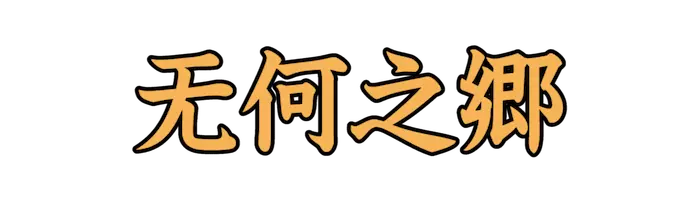 |
むかのきょう |
何もない、果てしなく広い地。 |
| Lv05_0011 |
|
まぐさ |
馬や牛の飼料とする草。 |
| Lv05_0012 |
|
しのね |
ギシギシの古名。『羊蹄(ようてい)』とも。 |
| Lv05_0013 |
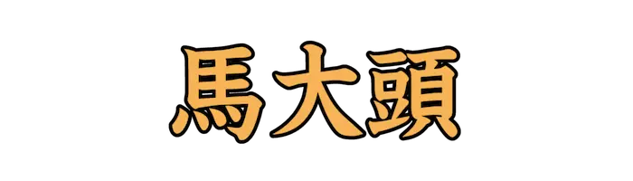 |
おにやんま |
トンボ目オニヤンマ科の昆虫。日本のトンボの中では最大。 |
| Lv05_0014 |
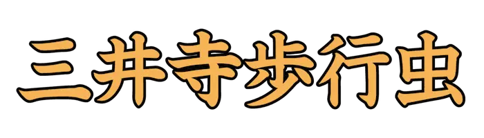 |
みいでらごみむし |
ホソクビゴミムシ科の昆虫。ヘッピリムシの異名で知られる。 |
| Lv05_0015 |
|
しょうが、はじかみ |
ショウガ目ショウガ科の多年草。 |
| Lv05_0016 |
|
ちさ |
レタスまたは、レタスに似た野菜の総称。『ちしゃ』とも。 |
| Lv05_0017 |
|
どうだんつつじ |
ツツジ目ツツジ科の常緑低木。『満天星(まんてんせい)』とも。 |
| Lv05_0018 |
|
ちゅっちょく、ちっちょく |
功績によって官位を上げ下げすること。 |
| Lv05_0019 |
|
あかぼうふら |
ユスリカ類の幼虫。アカムシ。 |
| Lv05_0020 |
|
ひさご、ふくべ |
ヒョウタンの別称。 |
| Lv05_0021 |
|
ぽんかん |
ミカン科ミカン属の柑橘類。インド北部が原産。 |
| Lv05_0022 |
|
いさは |
表面に白い筋や斑点ができた植物のこと。 |
| Lv05_0023 |
|
まゆみ |
ニシキギ科ニシキギ属の落葉樹。 |
| Lv05_0024 |
|
たにみず |
谷間を流れる水。谷川の水。 |
| Lv05_0025 |
|
かりずまい |
仮として一時的に住んでいること。 |
| Lv05_0026 |
|
はしばみいろ |
くすんだ赤みの黄色。ヘーゼルナッツの色として例えられる。 |
| Lv05_0027 |
|
げきぜん、けきぜん |
ひっそりと静まりかえっているさま。 |
| Lv05_0028 |
|
ぶつがん |
仏像や経文を安置するために設けられた個室や容器のこと。 |
| Lv05_0029 |
|
みょうばんせん |
アルミニウムと硫酸イオンを含む温泉。収斂作用があり慢性皮膚病に有効とされる。 |
| Lv05_0030 |
|
べきべき |
雲や塵などが一面におおうさま。 |
| Lv05_0031 |
|
たけなわ |
物事の一番の盛り。宴の最盛時。 |
| Lv05_0032 |
|
かこ |
他の事柄を口実とする。 |
| Lv05_0033 |
|
はしゃ |
調子づいて浮かれさわぐ。また、乾燥する。かわく。 |
| Lv05_0034 |
|
わず |
きわめて少ないさま。 |
| Lv05_0035 |
|
ときあか |
文の解釈や字句の意味を明らかにする。 |
| Lv05_0036 |
|
わるがしこ |
悪い方面で知恵がまわる様子。ずるい。 |
| Lv05_0037 |
|
てんあん |
心が安らかで落ち着いていること。 |
| Lv05_0038 |
|
どんぜい |
他国を攻略してその領土を奪うこと。 |
| Lv05_0039 |
|
こつこつ |
たゆまずに努力する様子。 |
| Lv05_0040 |
|
はぶ |
有鱗目クサリヘビ科のヘビ。沖縄ではハブを漬けた薬用酒が有名。 |
| Lv05_0041 |
|
やくし |
鍵のこと。 |
| Lv05_0042 |
 |
けんけつ |
法律において、ある要件の欠けていること。 |
| Lv05_0043 |
|
にっけい、にくけい |
仏像の頭頂の隆起した部分のこと。智恵が詰まっていることを表している。 |
| Lv05_0044 |
|
きっこうでん、きこうでん |
平安時代の宮中などで催された七夕行事。 |
| Lv05_0045 |
|
いよ |
感嘆の声。ああ。 |
| Lv05_0046 |
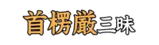 |
しゅりょうごん |
仏語。あらゆる法門を包含する三昧のこと。 |
| Lv05_0047 |
|
しゅんい |
才能などが優れており、常人と異なること。 |
| Lv05_0048 |
|
じゅげ |
仏語。仏の徳をたたえる一種の詩。 |
| Lv05_0049 |
 |
ひっさ |
手にさげて持つ。たずさえる。 |
| Lv05_0050 |
|
うべうべ、むべむべ |
格式張っている。頼もしい。 |
| Lv05_0051 |
|
おこた |
しなければいけない事を、なまける。 |
| Lv05_0052 |
|
あわただ |
あわてて落ち着かない様子である。せわしい。 |
| Lv05_0053 |
|
りゅうべん、りゅうめん |
流し目で見ること。 |
| Lv05_0054 |
|
じんあい |
ちりとほこり。また、世の中のもろもろの汚れたもの。俗世間の事柄。 |
| Lv05_0055 |
|
かんかく |
あげまき。幼児。 |
| Lv05_0056 |
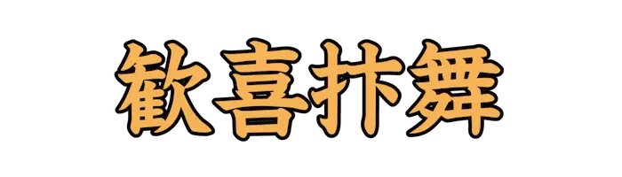 |
かんきべんぶ |
喜びのあまり小躍りすること。 |
| Lv05_0057 |
|
かりそめ、こうしょ |
一時的なこと。間に合わせ。 |
| Lv05_0058 |
|
おっとせい |
アシカ科のうち、キタオットセイ属とミナミオットセイ属の総称。 |
| Lv05_0059 |
|
やんばるくいな |
ツル目クイナ科の鳥。沖縄の山原地域の固有種で、絶滅危惧種。 |
| Lv05_0060 |
|
わらじむし |
ワラジムシ亜目ワラジムシ科の虫の総称。 |
| Lv05_0061 |
|
みずかき |
水鳥などの指の間にある、膜のような部分。水をかいて泳ぐ。 |
| Lv05_0062 |
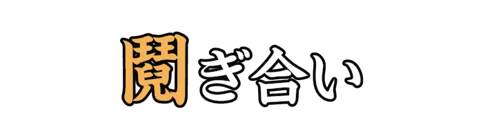 |
せめ |
互いに恨んで争う。 |
| Lv05_0063 |
|
さしまね |
手招きすること。 |
| Lv05_0064 |
|
ふすま |
寝るときにかける夜具。掛け布団。 |
| Lv05_0065 |
 |
あっぱれ |
賞賛に値するほど見事なさま。 |
| Lv05_0066 |
|
くさぎ |
田畑の雑草を刈り除く。除草する。 |
| Lv05_0067 |
|
ちりば |
彫った所に金銀や宝石を一面にはめこむ。また、美しい言葉を散らして交える。 |
| Lv05_0068 |
|
おけら、うけら |
キク目キク科の多年草。『うけら』はオケラの古名。 |
| Lv05_0069 |
|
おもと |
スズラン亜科の常緑多年草。 |
| Lv05_0070 |
|
どてら |
大きめに作り、綿を厚く入れた広袖の着物。防寒や寝具として使われる。 |
| Lv05_0071 |
|
いぐさ |
イグサ科の単子葉植物。しばしば畳の材料として使用される。 |
| Lv05_0072 |
|
もがりぶえ |
冬に吹く風が、柵や竹垣に吹き当たって笛のような音を出す現象。冬の季語。 |
| Lv05_0073 |
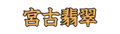 |
みやこしょうびん |
ブッポウソウ目カワセミ科の小鳥。宮古島にのみ生息していたとされる。 |
| Lv05_0074 |
|
おくら |
アオイ科トロロアオイ属の植物。 |
| Lv05_0075 |
|
とうもろこし |
イネ科の一年生植物。人間の食糧、家畜の肥料として使われる。 |
| Lv05_0076 |
|
さつまいも |
ヒルガオ科サツマイモ属の多年草植物。 |
| Lv05_0077 |
|
ごろつき、ならずもの |
あちこちをうろついて、他人の弱味につけこみ、嫌がらせなどをする悪者。 |
| Lv05_0078 |
|
ぬるで、ぬりで |
ウルシ科ヌルデ属の落葉小高木。 |
| Lv05_0079 |
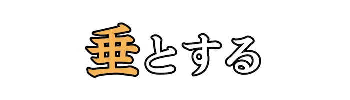 |
なんなん |
その状態に今にもなろうとする。 |
| Lv05_0080 |
|
うった |
有識者などに物事の是非の判断を求めて、申し出る。 |
| Lv05_0081 |
|
ちん |
日本原産の愛玩犬種。体臭が少なく、穏和な性格が特徴。 |
| Lv05_0082 |
|
ものざね |
物事の元となるもの。物のたね。 |
| Lv05_0083 |
|
もずく |
シオミドロ目ナガマツモ科の褐藻。 |
| Lv05_0084 |
|
たもとがい |
タモトガイ科、またはフトコロガイ科の小形の巻き貝。 |
| Lv05_0085 |
|
はなだいろ |
藍色より薄く、浅葱色より濃い青色。 |
| Lv05_0086 |
|
しゅあん |
時間が経って古くなった血のような朱色。 |
| Lv05_0087 |
|
いみな |
死者の生前の名前。 |
| Lv05_0088 |
|
おくりな |
主に貴人などの死後に奉る、生前の事績への評価に基づく名前のこと。 |
| Lv05_0089 |
|
えびいろ |
山葡萄の熟した実のような暗い赤紫色。 |
| Lv05_0090 |
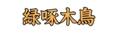 |
あおげら |
キツツキ目キツツキ科の鳥。日本固有種。 |
| Lv05_0091 |
|
すいかずら |
スイカズラ科の常緑つる性低木。 |
| Lv05_0092 |
|
よこいと |
織物で、幅の方向に通っている糸。 |
| Lv05_0093 |
|
ないじょうし |
青森県弘前市の地名および駅名。 |
| Lv05_0094 |
|
かりもがり |
貴人の遺体を棺に納め、仮に安置して祀る。通夜の原型ともいわれている。 |
| Lv05_0095 |
|
みまか |
死去することの雅語的な言い方。 |
| Lv05_0096 |
|
しわが、しゃが |
声がかすれる。 |
| Lv05_0097 |
|
あからさま |
ありのままに表すさま。露骨なさま。 |
| Lv05_0098 |
|
いすか |
スズメ目アトリ科の鳥。本来は、ねじれてかみ合わないことの意。 |
| Lv05_0099 |
 |
はつ |
工事現場などで、コンクリート製のものを形を整えるため壊したり削ったりすること。 |
| Lv05_0100 |
|
のみ |
木材や石材などに穴をあける工具。 |
| Lv05_0101 |
|
みなごろし |
一人も残さずに殺すこと。 |
| Lv05_0102 |
|
ふえん |
談話時などに、趣旨や意味を押し広げて詳しく説明すること。 |
| Lv05_0103 |
|
ちぎり、ちきり |
竿に棒を通し、二人で担って量る秤。 |
| Lv05_0104 |
|
あめふらし |
腹足綱後鰓類の軟体動物の総称。地域によってはウミウシと呼称する。 |
| Lv05_0105 |
|
きむち |
塩漬けした野菜に唐辛子、ニンニク、塩辛などを合わせた漬物料理。 |
| Lv05_0106 |
|
とうてつ |
中国神話に登場する妖怪。転じて、金銭や飲食を貪ること。 |
| Lv05_0107 |
|
くずお、くず |
気力が抜けて、崩れるように倒れる。 |
| Lv05_0108 |
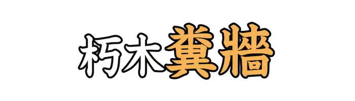 |
ふんしょう |
手の施しようのないものや、役に立たない無用なものの例え。 |
| Lv05_0109 |
|
ほうてき |
投げ捨てたり、放っておくこと。 |
| Lv05_0110 |
|
ひょうびょう |
かすかで、はっきりしないさま。 |
| Lv05_0111 |
|
もつ |
からみ合って入り乱れる。 |
| Lv05_0112 |
|
うんげん |
同じ色を濃から淡へ、淡から濃へと層をなすように繰り返す彩色法や色調。 |
| Lv05_0113 |
|
しょうじょうばえ |
ハエ目ショウジョウバエ科のハエ。コバエと総称されるハエの一種。 |
| Lv05_0114 |
|
わかれみち |
本道から分かれる道。また、道の分かれている所。 |
| Lv05_0115 |
|
ぬばたま、むばたま |
ヒオウギの種子。球形で黒く光沢がある。 |
| Lv05_0116 |
|
おぎな |
ある事の助けとなる。 |
| Lv05_0117 |
|
ちょうちゃく |
叩いたり、殴りつけること。 |
| Lv05_0118 |
|
においざけ |
黒きびに鬱金香を入れ、醸して造った酒。 |
| Lv05_0119 |
|
みみず |
環形動物門貧毛綱に属する動物の総称。一部の西日本の地域では『メメズ』とも。 |
| Lv05_0120 |
|
けだ |
まさしく。たしかに。思うに。 |
| Lv05_0121 |
|
くぐい |
ハクチョウの古名。 |
| Lv05_0122 |
|
もんどりう |
空中に飛び上がって回る様子。 |
| Lv05_0123 |
|
くしゃみ |
鼻の粘膜が刺激されて起こる、反射的に激しく息を吐き出す生理現象。 |
| Lv05_0124 |
|
かかあでんか |
一家の中で、妻が夫よりも強い権力を振るっていること。 |
| Lv05_0125 |
|
かんぬき |
門や戸をしめるときの横木。 |
| Lv05_0126 |
|
こいねが |
強く願い望む。切に望む。 |
| Lv05_0127 |
|
きそん |
利益などが欠けて損なわれること。 |
| Lv05_0128 |
|
めーとる |
国際単位系における長さの単位。 |
| Lv05_0129 |
|
さより |
ダツ目サヨリ科の魚。北海道から九州までの内湾に棲息する。 |
| Lv05_0130 |
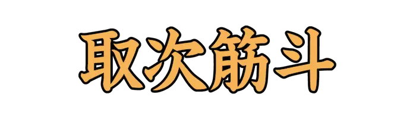 |
しどろもどろ |
話し方が筋立てられず、前後が乱れるさま。 |
| Lv05_0131 |
|
ざりがに |
ザリガニ上科とミナミザリガニ上科の総称。 |
| Lv05_0132 |
|
ごきぶり |
ゴキブリ目のうちシロアリ以外の総称。食器を噛むことから『ゴキカブリ』とも。 |
| Lv05_0133 |
|
てんとうむし |
ヒラタムシ上科テントウムシ科の昆虫。 |
| Lv05_0134 |
 |
とりもち |
鳥や昆虫を捕まえるのに使う、ゴム状の粘着性の物質。 |
| Lv05_0135 |
|
へんぴ |
都会から離れていて不便なこと。 |
| Lv05_0136 |
|
けぬき |
毛やひげ、とげなどを抜く道具。 |
| Lv05_0137 |
|
すごろく |
サイコロを振り、出た目に沿って駒を進めゴールを競うボードゲーム。 |
| Lv05_0138 |
|
ゆたんぽ |
中に湯を入れ、寝床などに入れて足や体を温める金属製または陶製の道具。 |
| Lv05_0139 |
|
たてがみ |
動物の頸部や頭部に密集して生える、長い毛のこと。 |
| Lv05_0140 |
|
うつぼかずら |
ウツボカズラ属の植物の総称。食虫植物の一種。 |
| Lv05_0141 |
|
みみずく |
フクロウ科のうち、羽角がある種の総称。 |
| Lv05_0142 |
|
はらわた |
内臓。大腸や小腸などの総称。 |
| Lv05_0143 |
|
すこっとらんど |
イギリスの最北端に位置する国。首都はエディンバラ。 |
| Lv05_0144 |
|
うっちゃ |
投げすてる。ほうり出す。 |
| Lv05_0145 |
|
あおみどろ |
アオミドロ属の接合藻、またそれらの総称。 |
| Lv05_0146 |
|
せぐくま、せくぐま |
体を前にかがめ、背をまるくする。 |
| Lv05_0147 |
|
うつらんてん、いらんのてん |
深みのあるあお色の天。 |
| Lv05_0148 |
|
みにく |
醜い。風采があがらない。 |
| Lv05_0149 |
|
まず |
下手であるさま。技術や出来映えなどがよくないさま。 |
| Lv05_0150 |
|
きわ |
動きがとれない状態に陥り、困りはてる。 |
| Lv05_0151 |
|
やま |
良心がとがめる。後ろめたい。また、病気である気がする。 |
| Lv05_0152 |
|
めくるめ |
目がくらむ。あまりに素敵で理性を失う。 |
| Lv05_0153 |
|
いつなんどき |
『何時(いつ)』を強めた語のこと。 |
| Lv05_0154 |
|
つつがむし |
ダニ目ツツガムシ科のダニの総称。 |
| Lv05_0155 |
|
つっか、つか |
邪魔なものがあったり行きづまったりして、先へ進めない状態になる。 |
| Lv05_0156 |
|
まめがら |
マメの茎や枝のこと。 |
| Lv05_0157 |
|
とりい |
穀物を収穫する。 |
| Lv05_0158 |
|
ちまき |
もち米やうるち米を笹の葉などで包み、蒸したり茹でて加熱した料理。 |
| Lv05_0159 |
|
あおり |
鞍に付属されており、馬の左右に提げて乗り手の脚に泥が掛かるのを防ぐ部品。 |
| Lv05_0160 |
|
たがめ |
カメムシ目コオイムシ科の水棲カメムシ類。カメや小型のヘビを捕食することもある。 |
| Lv05_0161 |
|
ひやかし |
買う気がないのに商品を見てまわること。また、その人。 |
| Lv05_0162 |
|
ほくろ |
皮膚にみられる黒褐色の斑。 |
| Lv05_0163 |
|
とかげ |
有鱗目トカゲ亜目の爬虫類の総称。 |
| Lv05_0164 |
|
たけのかわ |
タケノコを包んでいる鱗片状の皮。 |
| Lv05_0165 |
 |
だに |
ダニ亜綱およびダニ目の節足動物の総称。 |
| Lv05_0166 |
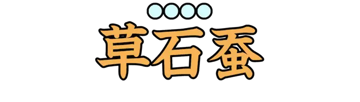 |
ちょろぎ |
シソ目シソ科の多年草。根のような塊茎部分を食用とする。 |
| Lv05_0167 |
|
すい |
野菜や金属内に穴が生ずること。 |
| Lv05_0168 |
|
まちまち |
ばらばらで、まとまりがない様子。 |
| Lv05_0169 |
|
としよ |
年を取った人。老人。 |
| Lv05_0170 |
|
むしあつ |
気温と湿度が不快なほど高い状態である。 |
| Lv05_0171 |
|
のたま |
おっしゃるよう。おっしゃることには。 |
| Lv05_0172 |
|
かまびす、かしがま |
やかましい。騒がしい。 |
| Lv05_0173 |
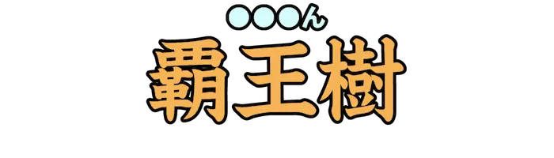 |
さぼてん |
サボテン科の植物の総称。『覇王樹(はおうじゅ)』とも。 |
| Lv05_0174 |
|
ひでり |
日が強く照り、雨が長い間降らないこと。 |
| Lv05_0175 |
|
さいころ、しゃいつ |
卓上遊戯や賭博等に用いる小道具。乱数を発生させるために用いられる。 |
| Lv05_0176 |
|
つんざ、さ |
激しい勢いで裂く。 |
| Lv05_0177 |
|
ひじき |
ヒバマタ目ホンダワラ科の褐藻の一種。また、それらを使用した料理。 |
| Lv05_0178 |
|
じくじ |
深く恥じ入るさま。 |
| Lv05_0179 |
|
ういきょう |
セリ科ウイキョウ属の多年草。 |
| Lv05_0180 |
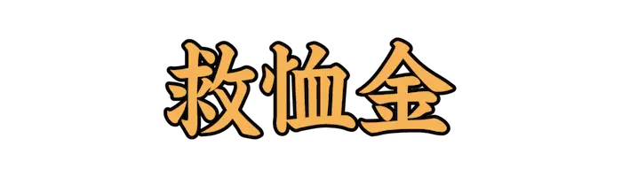 |
きゅうじゅつきん |
被災者や貧困者を援助するための寄付金。『義捐金(ぎえんきん)』とも。 |
| Lv05_0181 |
|
よそお |
身なりや外観を整える。また、美しく飾る。 |
| Lv05_0182 |
|
めりは |
ゆるめることと張ること。 |
| Lv05_0183 |
|
いぎたな |
寝方の見苦しいさま。寝てばかりいてだらしのないさま。 |
| Lv05_0184 |
|
すなど |
魚や貝などを獲る。漁をする。 |
| Lv05_0185 |
|
あざと |
小利口である。自己演出的な可愛さ、可憐さがある。 |
| Lv05_0186 |
|
ひもと |
本を開いて読む。本に記された知識に触れる。 |
| Lv05_0187 |
|
こまね、こまぬ |
腕組みをする。傍観する。 |
| Lv05_0188 |
|
いわん |
言うに及ばず。もちろん。まして。 |
| Lv05_0189 |
|
しっか |
確かであるさま。 |
| Lv05_0190 |
|
すうろ |
儒学のこと。 |
| Lv05_0191 |
|
せんそ |
部下の苦労をねぎらって大切にすること。 |
| Lv05_0192 |
|
きくいただき |
スズメ目キクイタダキ科の小鳥。日本で見られる鳥の中では最も小さい。 |
| Lv05_0193 |
|
てがみ |
遠方から来た客の贈り物である鯉の腹に、手紙が入っていたという故事、詩から。 |
| Lv05_0194 |
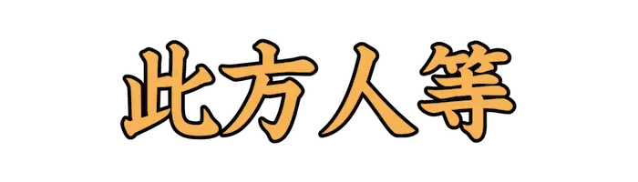 |
こちとら |
一人称の人代名詞。もとは複数を指したが単数としても用いる。 |
| Lv05_0195 |
|
こめかみ |
目と耳のつけ根のほぼ中間にある、皮膚のすぐ下に骨のある場所。 |
| Lv05_0196 |
|
しゃっく |
横隔膜が急速に収縮することで起こる症状。 |
| Lv05_0197 |
|
きりぎりす |
バッタ目キリギリス科の昆虫の中で、ヒガシキリギリスとニシキリギリスの総称。 |
| Lv05_0198 |
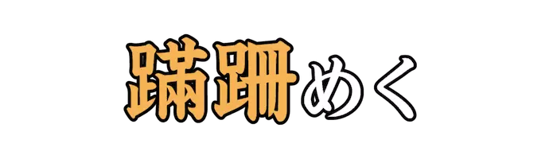 |
よろ |
足どりが確かでなく倒れそうになる。よろける。 |
| Lv05_0199 |
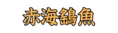 |
あかえい |
トビエイ目アカエイ科の魚。 |
| Lv05_0200 |
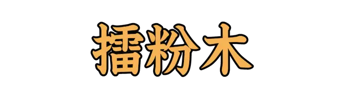 |
ついへいじ |
千葉県市原市北部に位置する大字。市原梨を多く生産している。 |
| Lv05_0201 |
|
とや |
旅回りの役者などが、次の土地に出発できず宿屋にこもる。 |
| Lv05_0202 |
|
あけび |
キンポウゲ目アケビ科のつる性落葉低木。秋の味覚を代表することで知られる。 |
| Lv05_0203 |
|
ところてん |
テングサなどの紅藻類をゆでて煮溶かし、発生した寒天質を冷まして固めた食品。 |
| Lv05_0204 |
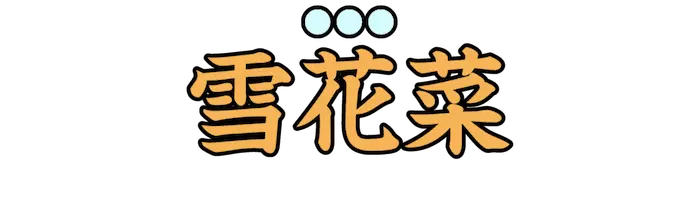 |
おから、きらず |
大豆を原料とする豆腐や豆乳の製造時に発生する副産物。 |
| Lv05_0205 |
|
かながしら |
カサゴ目ホウボウ科の魚。 |
| Lv05_0206 |
|
いたどり |
ナデシコ目タデ科の多年草。山野や道端、土手などに群生する。 |
| Lv05_0207 |
|
そばえ |
日が照っているのに雨が降ること。天気雨。 |
| Lv05_0208 |
|
くつわむし、くわっくわっじ |
バッタ目キリギリス科の昆虫。『くわっくわっじ』は秋の季語。 |
| Lv05_0209 |
|
ほろほろちょう |
キジ目ホロホロチョウ科の鳥。家禽化され、食用。 |
| Lv05_0210 |
|
さんふらんしすこ |
アメリカ西海岸、カリフォルニア州北部に位置する街。 |
| Lv05_0211 |
|
にがり |
海水から採れる塩化マグネシウムを主成分とする食品添加物。 |
| Lv05_0212 |
|
げんごろう、りゅうしつ |
甲虫目ゲンゴロウ科の水生昆虫。水生甲虫類としては最大種。 |
| Lv05_0213 |
|
するすみ、するつみ |
財産も係累もない身の上であること。無一文。 |
| Lv05_0214 |
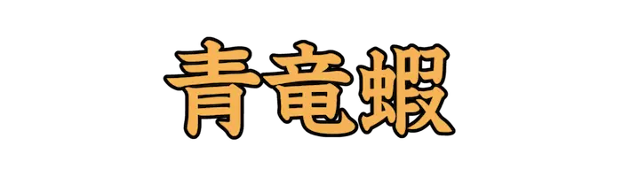 |
しゃこ |
シャコ目シャコ科の甲殻類。寿司ネタの食用種としてよく知られる。 |
| Lv05_0215 |
|
もっこく |
ツツジ目モッコク科の常緑高木。公園樹や庭木としてよく植栽される。 |
| Lv05_0216 |
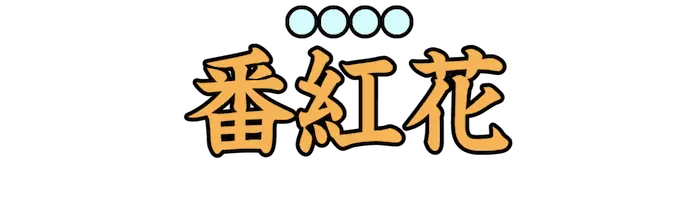 |
さふらん |
アヤメ科の多年草。また、めしべを乾燥させ作った香辛料。 |
| Lv05_0217 |
|
えそ |
ヒメ目エソ科に分類される魚の総称。 |
| Lv05_0218 |
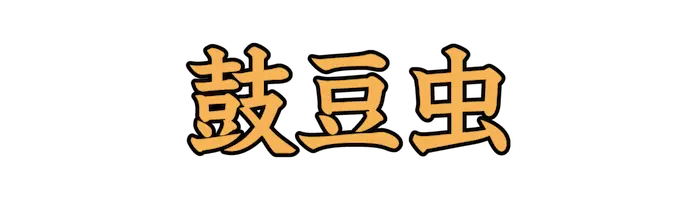 |
みずすまし |
甲虫目ミズスマシ科に含まれる虫の一群。小型で、水面をすばやく泳ぐ特徴がある。 |
| Lv05_0219 |
|
いとより |
イトヨリダイ。スズキ目イトヨリダイ科の魚。 |
| Lv05_0220 |
|
ろさんぜるす |
南カリフォルニアにある大都市。アメリカの映画産業、テレビ産業の中心地。 |
| Lv05_0221 |
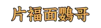 |
おかめいんこ |
オウム目オウム科の鳥類の一種。オウムの中では最小。 |
| Lv05_0222 |
|
ひきだし |
家具などにとりつけられている、抜き差しできる箱のこと。 |
| Lv05_0223 |
|
にわとこ |
ガマズミ科の落葉低木または小高木。山菜や民間薬に利用される。 |
| Lv05_0224 |
|
こなから |
半分の半分。また、少量の酒のこと。 |
| Lv05_0225 |
|
うず |
古代、草木の枝葉や造花などを冠や髪の上に挿して、飾りとしたもの。 |
| Lv05_0226 |
|
よりまし |
呪術で、神霊を一時的に宿らせるための子供、または人形。 |
| Lv05_0227 |
|
しらん |
キジカクシ目ラン科の多年草。『びゃくきゅう』とも。 |
| Lv05_0228 |
|
またたび |
ツバキ目マタタビ科の落葉つる性木本。ネコ科動物を恍惚化させる効能をもつ。 |
| Lv05_0229 |
|
ふのりほし |
糊の原料としてフノリをとり、干すこと。『フノリ』は、フノリ科の海藻の総称。 |
| Lv05_0230 |
|
むかばき、こうとう |
武士が旅や猟をする際に、袴の上から着装する服飾品の一種。 |
| Lv05_0231 |
|
よしきり |
スズメ目ウグイス科のオオヨシキリとコヨシキリの総称。 |
| Lv05_0232 |
|
びろーど、びろうど |
比較的毛足の長いパイル織物の一種。また、その生地のような暗い青みの緑色。 |
| Lv05_0233 |
|
きいちご |
バラ科の属のひとつ。ラズベリー、ブラックベリー等が存在する。 |
| Lv05_0234 |
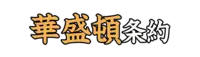 |
わしんとん |
絶滅のおそれのある野生動植物の種の、国際取引に関する条約。 |
| Lv05_0235 |
|
よめな |
キク目キク科の多年草。道端で見かける野菊の一種。 |
| Lv05_0236 |
|
こしあぶら |
ウコギ科のカクレミノや、コシアブラから採れる樹脂を日光で光重合させた塗料。 |
| Lv05_0237 |
|
しでむし |
コウチュウ目シデムシ科の昆虫。動物の死骸に集まり食事、分解を行う。 |
| Lv05_0238 |
|
はりうっど |
アメリカ合衆国カリフォルニア州のロサンゼルス市にある地区。 |
| Lv05_0239 |
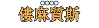 |
りうまち |
免疫の異常により関節に炎症が起こり、関節の痛みや腫れが生じる病気。 |
| Lv05_0240 |
|
つるにんじん |
キキョウ目キキョウ科の多年草。韓国では代表的な山菜。 |
| Lv05_0241 |
|
ほととぎす |
カッコウ目カッコウ科の鳥の一種。様々な漢字表記が存在する。 |
| Lv05_0242 |
|
ししゃも |
キュウリウオ目キュウリウオ科の魚。日本の固有種。 |
| Lv05_0243 |
|
しいら |
シイラ科に分類される魚。『マヒマヒ』とも。 |
| Lv05_0244 |
|
いそぎんちゃく |
刺胞動物門イソギンチャク目に分類される動物の総称。 |
| Lv05_0245 |
|
さるか |
キュウカンチョウの別名。 |
| Lv05_0246 |
|
くすさん |
チョウ目ヤママユガ科のガの一種。身近に生息する大型の蛾。 |
| Lv05_0247 |
|
さばひー、さばひい |
ネズミギス目サバヒー科の魚。主に台湾の食用魚として養殖されている。 |
| Lv05_0248 |
|
あめんぼ、かわぐも |
カメムシ目アメンボ科の昆虫。水面で活動するカメムシ目としては最大。 |
| Lv05_0249 |
|
めだか |
ダツ目メダカ科の魚。観賞魚として多く品種改良されている。 |
| Lv05_0250 |
|
かせ、がぜ |
ウニの別名。また、その殻。 |
| Lv05_0251 |
|
あわび |
ミミガイ科の大型の巻貝の総称。 |
| Lv05_0252 |
|
すずめばち |
膜翅目スズメバチ科の昆虫。日本最大のハチ。 |
| Lv05_0253 |
|
やりいか |
閉眼目ヤリイカ科の軟体動物。刺身や寿司として生食に多く使われる。 |
| Lv05_0254 |
|
つばめ |
スズメ目ツバメ科の鳥。北半球の広い範囲で繁殖する渡り鳥。 |
| Lv05_0255 |
|
うぐいす |
スズメ目ウグイス科の鳥。日本三鳴鳥の一種。 |
| Lv05_0256 |
|
がまがえる、ひきがえる |
無尾目ヒキガエル科のカエル。森林やその周辺の草原などに生息する。 |
| Lv05_0257 |
|
かめむし |
半翅目カメムシ科の昆虫の総称。触れると悪臭を放つ。 |
| Lv05_0258 |
|
うとう |
チドリ目ウミスズメ科の鳥。北太平洋沿岸に広く分布する。 |
| Lv05_0259 |
 |
ほたてがい |
イタヤガイ目イタヤガイ科の軟体動物。 |
| Lv05_0260 |
|
ごかい |
サシバゴカイ目ゴカイ科の環形動物。主に釣り餌として使用される。 |
| Lv05_0261 |
|
おきあみ |
オキアミ目の節足動物の総称。世界の海洋に広く分布する。 |
| Lv05_0262 |
|
さざえ |
古腹足目リュウテン科の巻貝の一種。日本では代表的な食用貝類。 |
| Lv05_0263 |
|
おたまじゃくし |
カエルの幼生。卵から孵化して成体になるまでをいい、丸い体に尾がある。 |
| Lv05_0264 |
|
ほととぎす |
カッコウ目カッコウ科の鳥の一種。様々な漢字表記が存在する。 |
| Lv05_0265 |
|
かんがるー |
有袋目カンガルー科の動物の総称。尾が長く、後ろ足が大きく発達している。 |
| Lv05_0266 |
|
しらうお |
キュウリウオ目シラウオ科の魚。 |
| Lv05_0267 |
|
かみきりむし |
鞘翅目カミキリムシ科の昆虫。成虫は植物、木の皮や樹液などを食べる。 |
| Lv05_0268 |
 |
かます |
スズキ目カマス科の魚。釣魚あるいは食用魚として利用される。 |
| Lv05_0269 |
|
くいな |
ツル目クイナ科の鳥。湿原、水辺の竹やぶ、水田などに生息する。 |
| Lv05_0270 |
|
ほや |
尾索動物亜門ホヤ綱の海産動物の総称。 |
| Lv05_0271 |
|
うわばみ |
巨大なヘビの俗称。特に熱帯産のニシキヘビ類をさす。 |
| Lv05_0272 |
|
ほととぎす、くつてどり |
カッコウ目カッコウ科の鳥の一種。様々な漢字表記が存在する。 |
| Lv05_0273 |
|
ほや |
尾索動物亜門ホヤ綱の海産動物の総称。 |
| Lv05_0274 |
|
はたはた |
スズキ目ハタハタ科の魚。日本では主に日本海側で食用にされる。 |
| Lv05_0275 |
|
ほととぎす、しょっこん |
カッコウ目カッコウ科の鳥の一種。様々な漢字表記が存在する。 |
| Lv05_0276 |
|
けら、おけら |
バッタ目ケラ科の昆虫の総称。地中での生活に特化した種。 |
| Lv05_0277 |
|
あいなめ |
カサゴ目アイナメ科の魚。脂肪の多い白身から『あぶらめ』とも。 |
| Lv05_0278 |
|
いととんぼ |
蜻蛉目イトトンボ科の昆虫の総称。 |
| Lv05_0279 |
|
てんとうむし |
甲虫目テントウムシ科の昆虫。 |
| Lv05_0280 |
|
らま |
鯨偶蹄目ラクダ科の動物。南アメリカのアンデス地方に多く住む。 |
| Lv05_0281 |
|
やすで |
多足亜門ヤスデ綱の節足動物の総称。 |
| Lv05_0282 |
|
こち |
扁平な身体と大きなひれをもち、海底に這って生活する魚の総称。 |
| Lv05_0283 |
 |
あゆ |
キュウリウオ目キュウリウオ科の魚。川や海などを回遊する。 |
| Lv05_0284 |
|
たら |
タラ目タラ科の魚の総称。寒冷な海に分布する肉食性の底生魚。 |
| Lv05_0285 |
|
いさき |
スズキ目イサキ科の魚。食用や釣りの対象として人気が高い。 |
| Lv05_0286 |
|
やつがしら |
ブッポウソウ目ヤツガシラ科の鳥。平地の開けた草地や農耕地に生息する。 |
| Lv05_0287 |
|
ひばり |
スズメ目ヒバリ科の鳥。春の鳥として知られる。 |
| Lv05_0288 |
|
みそさざい |
スズメ目ミソサザイ科の鳥。日本産で最小の鳥の一種。 |
| Lv05_0289 |
 |
かわせみ |
ブッポウソウ科カワセミ目の小鳥。 |
| Lv05_0290 |
|
やまかがし |
有鱗目ナミヘビ科の蛇。強い血液凝固作用のある毒をもつ。 |
| Lv05_0291 |
|
うそ |
スズメ目アトリ科の鳥。ユーラシア大陸に広く分布する。 |
| Lv05_0292 |
|
はいえな |
食肉目ハイエナ科の動物。主にサバンナ、低木林に生息する。 |
| Lv05_0293 |
|
いたち |
食肉目イタチ科の動物。危険を感じると悪臭を放って逃げる。 |
| Lv05_0294 |
|
さなだむし |
条虫綱の扁形動物の総称。平たい体節部が真田紐に似ることから。 |
| Lv05_0295 |
|
じょうびたき |
スズメ目ヒタキ科の小鳥。冬鳥で、積雪のない地方で越冬する。 |
| Lv05_0296 |
|
あひる |
マガモを品種改良した家禽品種。 |
| Lv05_0297 |
|
つぶじらみ、つびじらみ |
ケジラミの異名。 |
| Lv05_0298 |
|
いぼがえる |
ツチガエル、またはヒキガエルの別称。 |
| Lv05_0299 |
|
めなだ |
ボラ目ボラ科の魚。出世魚の一種。 |
| Lv05_0300 |
|
いしがめ |
カメ目イシガメ科のカメ。『ニホンイシガメ』とも。 |
| Lv05_0301 |
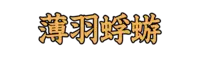 |
うすばかげろう |
アミメカゲロウ目ウスバカゲロウ科の昆虫。一部の幼虫はアリジゴクと呼ばれる。 |
| Lv05_0302 |
|
うんか |
カメムシ目の昆虫。イネを食い荒らす害虫。 |
| Lv05_0303 |
|
かじかがえる |
無尾目アオガエル科のカエル。美しい声で鳴き、和歌の題材となっている。 |
| Lv05_0304 |
|
きさご |
原始腹足目ニシキウズガイ科の巻貝。潮間帯下の砂底に棲息する。 |
| Lv05_0305 |
|
ささきり |
バッタ目キリギリス科の昆虫。林縁の笹の葉などの草上に棲息する。 |
| Lv05_0306 |
|
こめつきむし、ぬかずきむし |
甲虫目コメツキムシ科の昆虫。幼虫は『ハリガネムシ』と呼ばれる。 |
| Lv05_0307 |
|
しじみちょう |
鱗翅目シジミチョウ科の昆虫の総称。一般的には小型のものが多い。 |
| Lv05_0308 |
|
しまばえ |
双翅目シマバエ科の昆虫。雑木林や水辺に多く棲息する。 |
| Lv05_0309 |
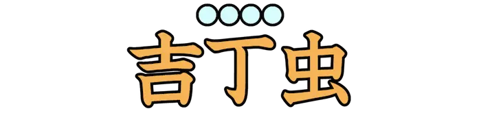 |
たまむし |
甲虫目タマムシ科の昆虫。 |
| Lv05_0310 |
|
てながえび |
十脚目テナガエビ科のエビの総称。熱帯から温帯に広く分布する。 |
| Lv05_0311 |
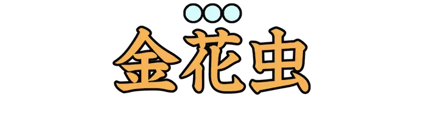 |
はむし |
甲虫目ハムシ科の昆虫の総称。主に植物の茎、葉を食害する。 |
| Lv05_0312 |
|
やませみ |
ブッポウソウ目カワセミ科の鳥。日本で確認できるカワセミ科では最大。 |
| Lv05_0313 |
|
かなへび |
有鱗目カナヘビ科のトカゲ。『ニホンカナヘビ』とも。 |
| Lv05_0314 |
|
ひばかり |
有鱗目ナミヘビ科のヘビ。 |
| Lv05_0315 |
|
あとり |
スズメ目アトリ科の鳥。山麓の森林や農耕地に棲息する。 |
| Lv05_0316 |
|
かけす |
スズメ目カラス科の鳥。雑食で、木の実や小鳥の雛などを食べる。 |
| Lv05_0317 |
|
しとど |
アオジやホオジロなどの古名。 |
| Lv05_0318 |
|
つみ |
タカ目タカ科の鳥。日本で確認できるタカ類では最小。 |
| Lv05_0319 |
|
とき |
ペリカン目トキ科の鳥。 |
| Lv05_0320 |
|
ずわいがに |
十脚目ケセンガニ科のカニの総称。脚、胴の腹面含め全体的に暗褐色。 |
| Lv05_0321 |
|
はちくま |
タカ目タカ科の鳥。ハチを主食とする性質をもつ。 |
| Lv05_0322 |
|
ほおじろ |
スズメ目ホオジロ科の鳥。顔の模様とさえずりが特徴的。 |
| Lv05_0323 |
|
よたか |
ヨタカ目ヨタカ科の鳥。夜行性で、昼間は樹などに擬態する。 |
| Lv05_0324 |
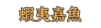 |
えぞいわな |
サケ目サケ科の魚。『アメマス』とも。 |
| Lv05_0325 |
|
きんこ |
ナマコ目キンコ科の棘皮動物。寒い地方の沿岸浅海に住む。 |
| Lv05_0326 |
|
こはだ |
中程度の大きさのコノシロのこと。 |
| Lv05_0327 |
|
ひら |
ニシン目ニシン科の魚。熱帯、亜熱帯海域に分布する。 |
| Lv05_0328 |
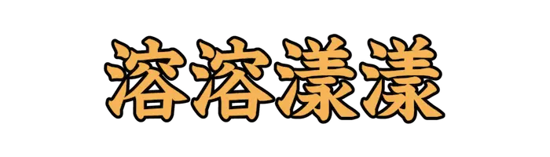 |
いぶすき |
鹿児島県薩摩半島の南端にある市。オクラの産地として有名。 |
| Lv05_0329 |
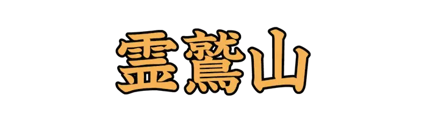 |
りょうじゅせん |
インドに位置する山。釈迦が説法した所と伝えられている。 |
| Lv05_0330 |
|
かんぼじあ |
東南アジアに位置する立憲君主制国家。首都はプノンペン。 |
| Lv05_0331 |
|
あてね |
ギリシャ共和国の首都。古代ギリシャ文化の中心地。 |
| Lv05_0332 |
|
いんど |
南アジアに位置する連邦共和制国家。首都はニューデリー。 |
| Lv05_0333 |
|
いぎりす |
ヨーロッパの北西部に位置する島国。首都はロンドン。 |
| Lv05_0334 |
|
じゃわ、じゃば |
インドネシアを構成する島のひとつ。首都ジャカルタがある。 |
| Lv05_0335 |
|
けいずか |
盗品と知りながら、それを売買すること。 |
| Lv05_0336 |
|
ぎりしゃ、ぎりしあ |
南ヨーロッパに位置する共和制国家。首都はアテネ。 |
| Lv05_0337 |
|
ちべっと |
ヒマラヤ山脈北側のチベット高原に位置する中国の自治区。 |
| Lv05_0338 |
|
すうぇーでん |
北ヨーロッパに位置する立憲君主制国家。首都はストックホルム。 |
| Lv05_0339 |
|
あもい |
中国福建省南東部、台湾海峡に面する港湾都市。 |
| Lv05_0340 |
 |
はいち |
西インド諸島、イスパニョーラ島の西部にある共和国。首都はポルトープランス。 |
| Lv05_0341 |
|
にゅーじーらんど |
南西太平洋のポリネシアに位置する立憲君主制国家。首都はウェリントン。 |
| Lv05_0342 |
|
のるうぇー |
北ヨーロッパに位置する立憲君主制国家。首都はオスロ。 |
| Lv05_0343 |
|
まかお |
中国広東省の南部にある特別行政区。 |
| Lv05_0344 |
|
しどにー |
オーストラリア南東部、タスマン海に面するニューサウスウェールズ州の州都。 |
| Lv05_0345 |
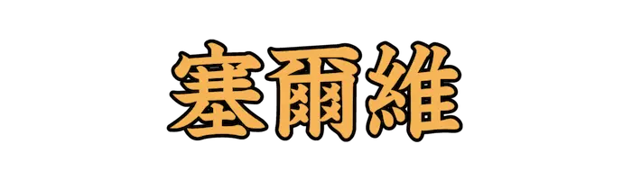 |
せるびあ |
東南ヨーロッパ、バルカン半島に位置する共和制国家。首都はベオグラード。 |
| Lv05_0346 |
|
でんまーく |
北ヨーロッパに位置し、多くの島々からなる立憲君主制国家。首都はコペンハーゲン。 |
| Lv05_0347 |
|
ごび |
モンゴルから中国北部にわたる大砂漠。 |
| Lv05_0348 |
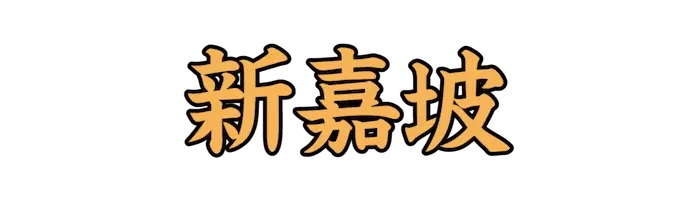 |
しんがぽーる |
東南アジアに位置し、小規模な島々からなる都市国家の島国。 |
| Lv05_0349 |
|
うくらいな |
東ヨーロッパに位置する共和制国家。首都はキーウ。 |
| Lv05_0350 |
|
うぃーん |
オーストリア共和国の首都。音楽の都とよばれ、歴史的建造物が多い。 |
| Lv05_0351 |
|
にゅーよーく |
アメリカ合衆国の、ニューヨーク州にある同国最大の都市。 |
| Lv05_0352 |
|
ふぃんらんど |
北ヨーロッパに位置する共和制国家。首都はヘルシンキ。 |
| Lv05_0353 |
|
ぬか |
額を地につけておじぎをする。 |
| Lv05_0354 |
|
はんぶるく、はんぶるぐ |
ドイツ北部、エルベ川下流に沿う港湾都市。造船や機械、石油精製などの工業が発達。 |
| Lv05_0355 |
 |
ぺるー |
南アメリカ西部に位置する共和制国家。首都はリマ。 |
| Lv05_0356 |
|
ぱれすちな |
西アジアの地理的地域。イスラエル、ヨルダン西部、西岸地区、ガザ地区を含む。 |
| Lv05_0357 |
|
かんぼじあ |
東南アジアのインドシナ半島南部に位置する立憲君主制国家。首都はプノンペン都。 |
| Lv05_0358 |
|
すえず |
エジプト北東部の港湾都市。スエズ運河の南端にあり、紅海に面する。 |
| Lv05_0359 |
|
ねぱーる |
南アジアに位置する連邦共和制国家。首都はカトマンズ。 |
| Lv05_0360 |
|
ふぃらでるふぃあ |
ペンシルベニア州南東部デラウェア川西岸に位置する港湾、工業都市。 |
| Lv05_0361 |
|
おっくすふぉーど |
イングランド南部、テムズ川に面する大学都市。 |
| Lv05_0362 |
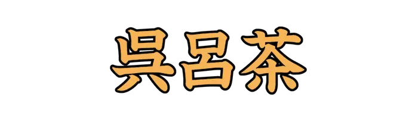 |
くろあちあ |
南ヨーロッパ、バルカン半島にある共和制国家。首都はザグレブ。 |
| Lv05_0363 |
|
くうぇーと |
西アジア、中東に位置する立憲君主制国家。首都はクウェート市。 |
| Lv05_0364 |
|
かむちゃっか、かむちゃつか |
ユーラシア大陸の北東部にある半島。南北に長い紡錘形をしている。 |
| Lv05_0365 |
|
いすらえる |
西アジアに位置する共和制国家。首都はテルアビブ(実質的である)。 |
| Lv05_0366 |
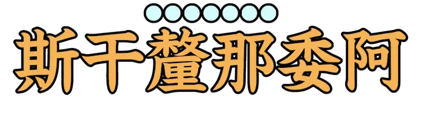 |
すかんじなびあ |
ヨーロッパ北部のスカンジナビア半島周辺の地域。 |
| Lv05_0367 |
|
まかお |
中国広東省の南部にある特別行政区。 |
| Lv05_0368 |
|
ろしあ |
ユーラシア大陸北部に位置する連邦共和制国家。首都はモスクワ。 |
| Lv05_0369 |
|
せるびあ |
東南ヨーロッパ、バルカン半島に位置する共和制国家。首都はベオグラード。 |
| Lv05_0370 |
|
ぐりにっじ |
グレーター・ロンドン南東部の町。世界遺産に登録されている由緒ある港町。 |
| Lv05_0371 |
|
ばぐだーど、ばぐだっど |
イラクの首都で、同国最大の都市。 |
| Lv05_0372 |
|
てぃもーる |
小スンダ列島の東端にある島。 |
| Lv05_0373 |
|
べにす |
イタリア共和国北東部に位置する都市。 |
| Lv05_0374 |
|
べるりん |
ドイツの首都であり、都市州。同国最大の都市。 |
| Lv05_0375 |
|
えくあどる |
南アメリカ北西部に位置する共和制国家。首都はキト。 |
| Lv05_0376 |
|
あいるらんど |
北西ヨーロッパに位置する共和制国家。首都はダブリン。 |
| Lv05_0377 |
|
い |
話す。言葉を述べる。説く。 |
| Lv05_0378 |
|
ぼんべい、むんばい |
インド西海岸のマハーラーシュトラ州の州都。 |
| Lv05_0379 |
|
かき |
鑑賞用の植物を栽培すること。 |
| Lv05_0380 |
|
べるぎー |
西ヨーロッパに位置する、連邦立憲君主制国家。首都はブリュッセル市(憲法上)。 |
| Lv05_0381 |
|
うしちにしゃ、うしつにしゃ |
仏語で、仏の頂に突起して髻の形状をしているもの。『肉髻(にくけい)』とも。 |
| Lv05_0382 |
|
きんこじ |
孫悟空の頭にある輪の名前。『西遊記』より。 |
| Lv05_0383 |
|
ほうれんそう |
ナデシコ目ヒユ科の多年草。緑黄色野菜の一種として知られる。 |
| Lv05_0384 |
|
くちなし |
リンドウ目アカネ科の常緑低木。果実は着色料などに利用される。 |
| Lv05_0385 |
|
うきやがら |
カヤツリグサ科の多年草。水辺に生息する抽水性の植物。 |
| Lv05_0386 |
|
おうち |
センダンの別名。 |
| Lv05_0387 |
|
あすなろ |
マツ目ヒノキ科の常緑高木。材木として利用される。 |
| Lv05_0388 |
|
ゆきのした、きじんそう |
ユキノシタ目ユキノシタ科の多年草。山地の湿った場所に生育する。 |
| Lv05_0389 |
|
まいたけ |
タマチョレイタケ目トンビマイタケ科のキノコ。食用になる。 |
| Lv05_0390 |
|
あこう |
バラ目クワ科の常緑高木。温暖な地方に分布する。 |
| Lv05_0391 |
 |
はなずおう、はなすおう |
マメ目マメ科の落葉低木。『蘇芳花(スオウバナ)』とも。 |
| Lv05_0392 |
|
こうほね |
スイレン目スイレン科の多年草。浅い池や沼などに生える。 |
| Lv05_0393 |
 |
あさがお |
ナス目ヒルガオ科の一年草。『蕣(あさがお)』とも。 |
| Lv05_0394 |
|
まくわうり |
スミレ目ウリ科のつる性一年草。 |
| Lv05_0395 |
|
いちご |
バラ目バラ科の落葉性低木。主にトックリイチゴを指す。 |
| Lv05_0396 |
 |
いぬつげ |
モチノキ目モチノキ科の常緑小高木。生け垣や庭木、植え込みに使われる。 |
| Lv05_0397 |
|
ねむ |
マメ目マメ科の落葉高木。夜に葉が合わさり眠るように見えることから。 |
| Lv05_0398 |
 |
むくげ |
アオイ目アオイ科の落葉低木。『木波知須(きはちす)』とも。 |
| Lv05_0399 |
|
なでしこ |
ナデシコ目ナデシコ科の植物の総称。秋の七草のひとつ。 |
| Lv05_0400 |
|
われもこう |
バラ目バラ科の多年草。薬草として、根は生薬になる。 |
| Lv05_0401 |
|
かぶら、すずな |
カブの別名。 |
| Lv05_0402 |
 |
ざぼん |
ムクロジ目ミカン科の常緑高木。『文旦(ぶんたん)』とも。 |
| Lv05_0403 |
|
そよご、そよぎ |
ニシキギ目モチノキ科の常緑小高木。庭木としてしばしば使用される。 |
| Lv05_0404 |
|
ゆすらうめ |
バラ目バラ科の落葉低木。庭園などに植えられる。 |
| Lv05_0405 |
|
いちはつ |
キジカクシ目アヤメ科の多年草。中国原産。 |
| Lv05_0406 |
|
さいかち |
マメ目マメ科の落葉高木。幹に特徴的な棘がある。 |
| Lv05_0407 |
|
あじさい |
ミズキ目アジサイ科の落葉低木。観賞用に広く栽培される。 |
| Lv05_0408 |
|
ななかまど |
バラ目バラ科の落葉高木。街路樹や公園樹としてよく植えられている。 |
| Lv05_0409 |
 |
まんさく |
ユキノシタ目マンサク科の落葉小高木。日本各地の山地、山林に生える。 |
| Lv05_0410 |
|
むかご、ぬかご |
葉の付け根にできる、多肉で球状の芽。 |
| Lv05_0411 |
|
ぶな |
ブナ目ブナ科の落葉高木。日本の温帯林を代表する樹木。 |
| Lv05_0412 |
|
ひじき |
ヒバマタ目ホンダワラ科の褐藻のひとつ。棍棒状の葉をつける。 |
| Lv05_0413 |
|
らいらっく |
モクセイ目モクセイ科の高木落葉樹。『紫丁香花(ムラサキハシドイ)』とも。 |
| Lv05_0414 |
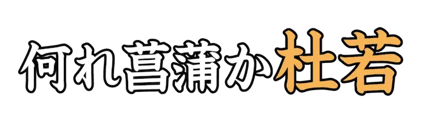 |
かきつばた |
キジカクシ目アヤメ科の多年草。シベリア南部から日本にかけて分布する。 |
| Lv05_0415 |
 |
ねむのき |
マメ目マメ科の落葉高木。夜に葉が合わさり眠るように見えることから。 |
| Lv05_0416 |
|
じんちょうげ |
フトモモ目ジンチョウゲ科の常緑低木。香りのよい花を早春に咲かせる。 |
| Lv05_0417 |
|
なべな |
マツムシソウ目マツムシソウ科の越年草。山地の渓谷沿いなどに生える。 |
| Lv05_0418 |
|
せろり |
セリ目セリ科の一年草または二年草。独特の強い香りがある。 |
| Lv05_0419 |
|
やどりぎ |
ビャクダン目ビャクダン科の多年草。寄生植物のひとつ。 |
| Lv05_0420 |
|
ささげ |
マメ目マメ科の一年草。アフリカ原産。 |
| Lv05_0421 |
|
はこべら |
ナデシコ目ナデシコ科の植物の総称。春の七草のひとつ。 |
| Lv05_0422 |
|
あしたば、かんそう |
セリ目セリ科の多年草。主に暖地の海岸沿いの林縁に自生する。 |
| Lv05_0423 |
|
ほおずき |
ナス目ナス科の一年草または多年草。鉢植えやドライフラワーなどに用いられる。 |
| Lv05_0424 |
 |
かたばみ |
カタバミ目カタバミ科の多年草。春から秋にかけ黄色の花を咲かせる。 |
| Lv05_0425 |
|
あせび、あしび |
ツツジ目ツツジ科の常緑低木。観賞用に植栽もされる場合もある。 |
| Lv05_0426 |
 |
えにしだ |
マメ目マメ科の植物の総称。 |
| Lv05_0427 |
|
あすなろ |
マツ目ヒノキ科の常緑針葉樹。材木として利用される。 |
| Lv05_0428 |
|
からたち |
ムクロジ目ミカン科の落葉低木。『カラタチバナ』とも。 |
| Lv05_0429 |
|
あけび、あけぶ |
キンポウゲ目アケビ科のつる性落葉低木。秋の味覚を代表することで知られる。 |
| Lv05_0430 |
|
おおばこ、おんばこ |
シソ目オオバコ科の多年草。葉は薬草や漢方として利用される。 |
| Lv05_0431 |
|
しいたけ、こうしん |
ハラタケ目キシメジ科などのキノコ。東アジアで食用菌として栽培される。 |
| Lv05_0432 |
|
ぐみ |
バラ目グミ科の植物の総称。果実は食用になる。 |
| Lv05_0433 |
 |
とくさ |
トクサ目トクサ科の多年草。『歯磨草(ハミガキクサ)』とも。 |
| Lv05_0434 |
|
いちじく |
クワ科イチジク属の落葉高木。 |
| Lv05_0435 |
|
あさつき |
キジカクシ目ヒガンバナ科の多年草。ラッキョウのような鱗茎を持つ。 |
| Lv05_0436 |
|
じゃすみん |
シソ目モクセイ科の植物の総称。香水やジャスミン茶の原料として使われる。 |
| Lv05_0437 |
|
いのこずち |
ナデシコ目ヒユ科の多年草。根を乾燥させて漢方薬などに使われる。 |
| Lv05_0438 |
|
やつがしら |
サトイモの一品種。 親芋を中心に小芋がたくさんできて大きな塊となる。 |
| Lv05_0439 |
|
ほんだわら |
ヒバマタ目のホンダワラ科の海藻。古くから肥料、飾り物として用いられた。 |
| Lv05_0440 |
|
はまなす、まいかい |
バラ目バラ科の落葉低木。果実はローズヒップとして食用になる。 |
| Lv05_0441 |
|
そてつ |
ソテツ目ソテツ科の常緑低木。鉄を肥料にすると樹勢が増すとされる。 |
| Lv05_0442 |
|
つばき |
ツバキ目ツバキ科の常緑樹。材は堅く、木具材や細工物などに使われる。 |
| Lv05_0443 |
|
れいし |
ムクロジ目ムクロジ科の常緑高木。 |
| Lv05_0444 |
|
うこぎ |
セリ目ウコギ科の落葉高木および落葉低木。中国渡来で日本各地の山野に見られる。 |
| Lv05_0445 |
|
おとこえし、おとこべし |
マツムシソウ目オミナエシ科の多年草。オミナエシと違い、花は白色。 |
| Lv05_0446 |
|
たぬきも |
シソ目タヌキモ科の多年草および一年草。食虫植物のひとつ。 |
| Lv05_0447 |
|
あおさ |
アオサ目アオサ科の緑藻の総称。一部の緑藻は食用として利用される。 |
| Lv05_0448 |
|
しらいとそう |
ユリ目シュロソウ科の多年草。糸屑を束ねたような花の形が特徴。 |
| Lv05_0449 |
|
にわうめ |
バラ目バラ科の低木種。観賞用のために広く栽培されている。 |
| Lv05_0450 |
|
はなわらび |
ハナヤスリ目ハナヤスリ科のシダ植物。 |
| Lv05_0451 |
|
ひきよもぎ |
シソ目ハマウツボ科の半寄生植物。薬用として利用される。 |
| Lv05_0452 |
|
あさがら |
ツツジ目エゴノキ科の落葉小高木。箸やマッチの軸木などに利用される。 |
| Lv05_0453 |
|
あまずら |
つる草の一種。また、それらから採った甘味料のひとつ。 |
| Lv05_0454 |
|
あまどころ |
キジカクシ目キジカクシ科の多年草。 |
| Lv05_0455 |
|
ありどおし |
アカネ目アカネ科の常緑低木。関西地方では正月の縁起物とされる。 |
| Lv05_0456 |
|
いささぐさ |
ソラマメの別称。 |
| Lv05_0457 |
|
いたびかずら |
バラ目クワ科の常緑低木。暖地にみられ、岩を登るようにして生える。 |
| Lv05_0458 |
|
あおそ、いちび |
麻のこと。また、アオイ目アオイ科の一年草。 |
| Lv05_0459 |
|
いんげんまめ |
マメ目マメ科の一年草。日本では北海道が主産地となっている。 |
| Lv05_0460 |
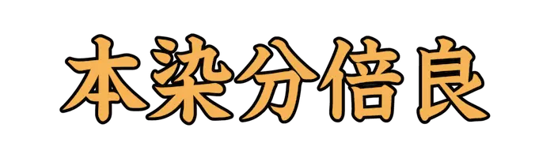 |
えびね |
ラン目ラン科の多年草。鉢栽培、庭園植栽用に販売される。 |
| Lv05_0461 |
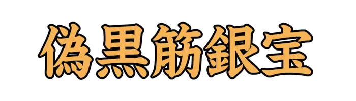 |
かなむぐら |
バラ目アサ科の一年草。茎葉と花は薬草になるとされる。 |
| Lv05_0462 |
|
かのこそう、けっそう |
マツムシソウ目オミナエシ科の多年草。山地の湿った草地にやや稀に生える。 |
| Lv05_0463 |
|
がま |
イネ目ガマ科の多年草。池や川の岸辺などの浅い水辺に自生する。 |
| Lv05_0464 |
|
たちあおい、からあおい |
アオイ目アオイ科の多年草。花弁や根を、薬用として利用する。 |
| Lv05_0465 |
|
きぶし |
クロッソソマ目キブシ科の落葉低木。庭木や花材などに使われる。 |
| Lv05_0466 |
|
きぶし |
クロッソソマ目キブシ科の落葉低木。庭木や花材などに使われる。 |
| Lv05_0467 |
|
ぎぼうし |
キジカクシ目キジカクシ科の多年草。食用とされる。 |
| Lv05_0468 |
|
きらんそう |
シソ目シソ科の多年草。道端などに生える。 |
| Lv05_0469 |
|
さるのこしかけ |
ヒダナシタケ目サルノコシカケ科のこと。科名は暫定的に付けられている。 |
| Lv05_0470 |
|
さるびあ |
シソ目シソ科の多年草。観賞用として利用される。 |
| Lv05_0471 |
|
しおで |
ユリ目サルトリイバラ科の多年草。原野や山林に生える。 |
| Lv05_0472 |
|
じゃのひげ |
キジカクシ目キジカクシ科の多年草。植え込みなどに用いられる。 |
| Lv05_0473 |
|
すぐり、すんぐり |
ユキノシタ目スグリ科の落葉低木。赤く丸い果実をつくる。 |
| Lv05_0474 |
|
だいだい |
ムクロジ目ミカン科の常緑小高木。マーマレードや調味料として利用される。 |
| Lv05_0475 |
|
たかな |
フウチョウソウ目アブラナ科の越年草。主に漬け物の材料として利用される。 |
| Lv05_0476 |
|
ちがや |
イネ目イネ科の多年草。古くから雑草のひとつとして知られる。 |
| Lv05_0477 |
|
つくねいも |
ヤマノイモ目ヤマノイモ科の多年草。『ナガイモ』とも。 |
| Lv05_0478 |
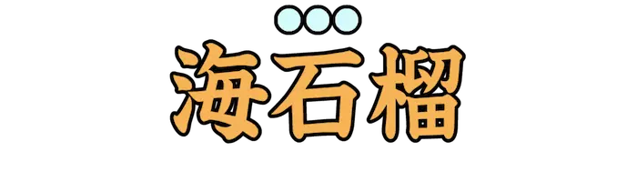 |
つばき |
ツバキ目ツバキ科の常緑樹。材は堅く、木具材や細工物などに使われる。 |
| Lv05_0479 |
|
つゆくさ、つきくさ |
ツユクサ目ツユクサ科の一年草。畑の隅や道端で見かけることがある。 |
| Lv05_0480 |
|
とべら |
セリ目トベラ科の常緑低木。暖地の海岸に多く自生する。 |
| Lv05_0481 |
|
やまならし、どろやなぎ |
キントラノオ目ヤナギ科の落葉高木。街路樹などで利用される。 |
| Lv05_0482 |
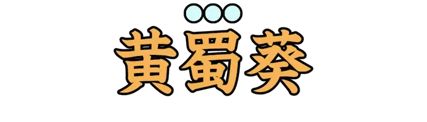 |
とろろ |
トロロアオイの別名。また、その根をすりつぶした粘りのある汁。 |
| Lv05_0483 |
|
なぎ |
ヒノキ目マキ科の常緑高木。日本ではしばしば神社に植栽される。 |
| Lv05_0484 |
|
ぱぱいあ、ぱぱいや |
アブラナ目パパイア科の常緑小高木。果実は食用として利用される。 |
| Lv05_0485 |
|
ぱぱいあ、ぱぱいや |
アブラナ目パパイア科の常緑小高木。果実は食用として利用される。 |
| Lv05_0486 |
|
ふき |
キク目キク科の多年草。若い花芽は『フキノトウ』と呼ばれる。 |
| Lv05_0487 |
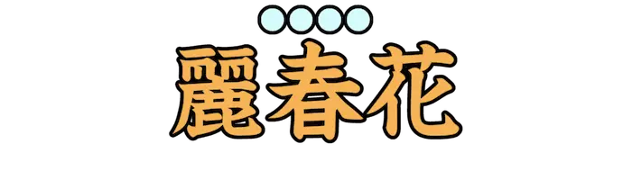 |
ひなげし |
キンポウゲ目ケシ科の一年草。『シャーレイポピー』とも。 |
| Lv05_0488 |
|
あぶらな |
アブラナ目アブラナ科の二年草。『菜の花』と総称されることがある。 |
| Lv05_0489 |
|
ふしのき |
ヌルデの別称。 |
| Lv05_0490 |
|
ふじまめ |
マメ目マメ科の多年草および一年草。熱帯地域に分布する。 |
| Lv05_0491 |
|
ぼけ |
バラ目バラ科の落葉低木。庭園樹としてよく利用される。 |
| Lv05_0492 |
|
ほとけのざ |
シソ目シソ科の越年草。春の七草のひとつ。 |
| Lv05_0493 |
|
ほとけのざ |
シソ目シソ科の越年草。春の七草のひとつ。 |
| Lv05_0494 |
|
なずな |
アブラナ目アブラナ科の越年草。春の七草のひとつ。 |
| Lv05_0495 |
|
まくり |
イギス目フジマツモ科の紅藻の一種。暖流流域に分布する。 |
| Lv05_0496 |
|
ゆきのした |
ユキノシタ目ユキノシタ科の多年草。山地の湿った場所に生育する。 |
| Lv05_0497 |
|
こけらお |
新しい劇場、舞台ではじめて催される公演のこと。 |
| Lv05_0498 |
|
まないた |
包丁で切る際に下に置く板や台。 |
| Lv05_0499 |
|
のどか |
急がないで気長に構えるさま。 |
| Lv05_0500 |
|
しゅうと |
夫または妻の父。 |
| Lv05_0501 |
|
みぞれ |
雪が空中でとけかかって、雨とまじって降るもの。 |
| Lv05_0502 |
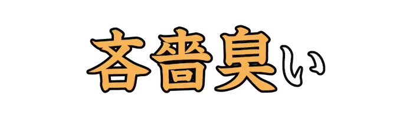 |
けちくさ |
いかにもけちである。しみったれ。 |
| Lv05_0503 |
|
ごむひも |
ゴムや伸縮糸などを丸打ち、あるいは平打ちして加工した紐。 |
| Lv05_0504 |
|
つむじかぜ |
渦を巻いて吹き上がる風。また、局地的な空気の渦巻き。 |
| Lv05_0505 |
|
あいくち |
鍔のない短刀。九寸五分。 |
| Lv05_0506 |
|
おもいや |
同情したり気を使ったりする。配慮する。 |
| Lv05_0507 |
|
けいぜん |
光り輝くさま。明るいさま。 |
| Lv05_0508 |
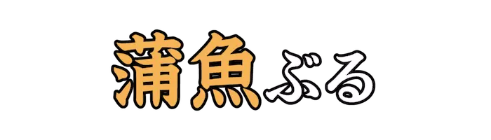 |
かまとと |
知っているくせに知らないふりをして、上品ぶったりうぶを装ったりすること。 |
| Lv05_0509 |
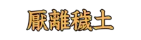 |
おんりえど、えんりえど |
煩悩にけがれた現世を嫌い離れること。 |
| Lv05_0510 |
|
かくりよ |
永久に変わらない神域。死後の世界。『常世(とこよ)』とも。 |
| Lv05_0511 |
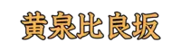 |
よもつひらさか |
日本神話で、生者の住む現世と死者の住む他界との境目にあるとされる坂。 |
| Lv05_0512 |
|
かさ |
衣服をかさねて着る。また、同じことを繰り返す。 |
| Lv05_0513 |
|
ふとまに |
上代の占いのひとつ。鹿の肩の骨を焼き、その割れ目の形で吉凶を占う。 |
| Lv05_0514 |
|
つごもり |
月の最後の日。みそか。 |
| Lv05_0515 |
|
け |
普通の日。一般的な生活をおくる日。『晴(はれ)と褻(け)』の片方。 |
| Lv05_0516 |
|
ぎょうあ |
夜明けに鳴くカラス。あけがらす。 |
| Lv05_0517 |
|
おれ |
一人称の人代名詞。現代では、男子が同輩や目下に対して用いる。 |
| Lv05_0518 |
|
またまた |
『亦(また)』を強調した語。前のことがもう一度繰り返されるさま。 |
| Lv05_0519 |
|
いんち |
ヤード・ポンド法による長さの単位。 |
| Lv05_0520 |
|
おうじょうずくめ |
なにもかも無理に承諾させること。強制してことごとく承服させること。 |
| Lv05_0521 |
|
せんさく |
穴を掘ること。また、細かくほじくるように調べること。 |
| Lv05_0522 |
|
みたまや |
祖先の霊をまつる場所。 |
| Lv05_0523 |
|
お |
力を加えて進ませる。 |
| Lv05_0524 |
|
うるわ |
ほどよく調和して美しい。 |
| Lv05_0525 |
|
とちめんぼう |
橡麺を薄く打ち延ばすのに用いる棒。また、うろたえる人。あわてん坊。 |
| Lv05_0526 |
|
かめ、みか |
底深く口径の広い陶磁製や金属製の容器。また、酒を醸造するのに用いた大きなかめ。 |
| Lv05_0527 |
|
だんじり |
日本の祭礼の曳物。太鼓をのせ、車をつけて引いたり、かついだりして練って行く。 |
| Lv05_0528 |
|
つつくら |
何も見えないまっくらなやみ。真のやみ。 |
| Lv05_0529 |
|
あかおけ |
仏に供える水を汲み入れる桶。 |
| Lv05_0530 |
|
とうまるかご |
江戸時代の罪人護送用の駕籠。 |
| Lv05_0531 |
|
にしん |
ニシン目ニシン科の魚。『春告魚(はるつげうお)』とも。 |
| Lv05_0532 |
|
おぞ |
いかにも嫌な感じがする。ぞっとするほど、いとわしいようである。 |
| Lv05_0533 |
|
きぜん |
ため息をつくさま。 嘆息するさま。 |
| Lv05_0534 |
|
じょうじょう |
風がそよそよと吹くさま。また、なよなよとした様子。 |
| Lv05_0535 |
|
きんかく |
中国で、女性が飾りとして髪を覆うもの。転じて、めめしさのたとえ。 |
| Lv05_0536 |
|
しんしょう |
あざわらうこと。 |
| Lv05_0537 |
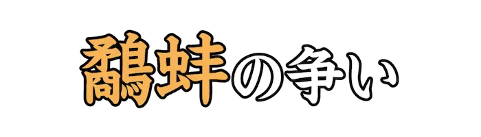 |
いつぼう、いっぽう |
両者が争っている間に、第三者が利益を得ること。 |
| Lv05_0538 |
|
しゅくば |
江戸時代、五街道や脇往還において駅逓事務を取り扱うため設定された町場。 |
| Lv05_0539 |
|
いりこ、かいじん |
ナマコの腸を取り除き、塩水で煮てから干したもの。 |
| Lv05_0540 |
|
そばかす |
顔面にできる茶色の細かい斑点。 |
| Lv05_0541 |
|
つなみ |
地震や海底火山の噴火などによって生じる、非常に波長の長い波。 |
| Lv05_0542 |
|
たたき |
赤土や砂利などに消石灰とにがりを混ぜて練り、塗ってたたき固めた素材。 |
| Lv05_0543 |
|
びく |
魚釣りなどで、とった魚を入れておく、竹や網などで作った籠。 |
| Lv05_0544 |
|
やなぐい |
矢を盛り、携帯する器具。 |
| Lv05_0545 |
|
おはぐろ |
歯を黒く染めるのに用いる液。古い鉄くずを茶の汁または酢に浸して作る。 |
| Lv05_0546 |
|
まじろ |
まばたきをする。またたく。 |
| Lv05_0547 |
|
けづめ |
鶏やキジなどの雄の足の後ろ側にある角質の突起。攻撃や防御に用いる。 |
| Lv05_0548 |
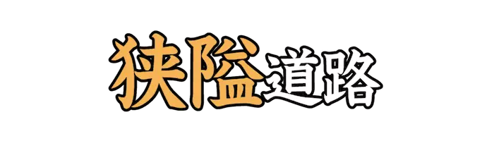 |
きょうあい |
行政が使用する際は、幅員四メートル未満の二項道路を指す。法律上の定義はない。 |
| Lv05_0549 |
|
たたら |
足で踏んで空気を送る大形のふいご。 |
| Lv05_0550 |
|
ちゅんこん |
悩み苦しむこと。 |
| Lv05_0551 |
|
ひゆか |
表現方法に基づく分類で、心情を表に出さず隠喩的に詠んだ歌。 |
| Lv05_0552 |
|
かかずら |
かかわりあいを持つ。かかわりあって離れられない状態になる。 |
| Lv05_0553 |
|
おきゃん |
若い女性の、活発で慎みのないこと。 |
| Lv05_0554 |
|
おませ |
年のわりに大人びている様子。また、そのような感じの子供。 |
| Lv05_0555 |
|
みさ |
カトリック教会で、イエス＝キリストの十字架上の犠牲を継承、再現する祭儀。 |
| Lv05_0556 |
|
すり |
他人が身につけている金品を、その人に気づかれないように盗み取ること。 |
| Lv05_0557 |
|
まっしぐら |
激しい勢いで目標に向かって突き進むさま。 |
| Lv05_0558 |
 |
みずら、びずら |
髪を頭の中央から左右に分け、両耳の辺りで先を輪にして緒で結んだもの。 |
| Lv05_0559 |
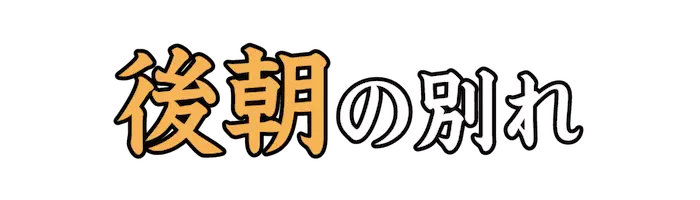 |
きぬぎぬ |
共寝した男女が翌日に別れること。 |
| Lv05_0560 |
 |
うちかけ |
古来、儀式の時に武官が礼服の上に着用した貫頭衣型の衣服。 |
| Lv05_0561 |
|
めりやす |
編み物用機械によって編んだ布地。 |
| Lv05_0562 |
|
ふけ |
頭の皮膚にできる、角質に分泌物がまじって乾いた、うろこ状の白いもの。 |
| Lv05_0563 |
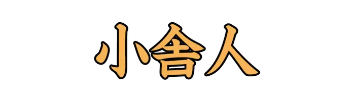 |
こどねり |
平安時代、蔵人所に属して殿上の雑事に使われた者。 |
| Lv05_0564 |
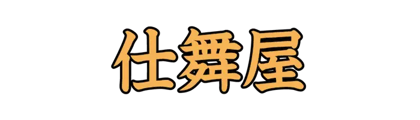 |
しもたや、しもうたや |
商売をせず、借家などの金利で裕福に生活する家。 |
| Lv05_0565 |
|
きりょう |
顔だち。みめ。容姿。 |
| Lv05_0566 |
|
かすり |
かすれたような部分を規則的に配した模様。また、その模様のある織物。 |
| Lv05_0567 |
|
きめこま |
きめが細かい。細部にまで行きとどいている。 |
| Lv05_0568 |
|
うき、うけ |
釣り糸につけて水面にうかべ、魚がかかったことを知る目印。 |
| Lv05_0569 |
|
すずし |
まだ練らないままの絹糸。生糸。『蜻蛉日記』より。 |
| Lv05_0570 |
|
あからさま |
ありのままに表すさま。露骨なさま。 |
| Lv05_0571 |
|
ほかい |
食物を入れて持ち運ぶ、木製でふた付きの容器。 |
| Lv05_0572 |
|
のうし、なおし |
平安時代以降で、天皇や摂家、大臣、公卿の平常服。 |
| Lv05_0573 |
|
からさお、からざお |
豆類や粟、稲、麦などの脱穀に用いる農具。 |
| Lv05_0574 |
|
にす |
木材などの材料の表面を保護するために用いられる塗料の一種。ワニス。 |
| Lv05_0575 |
 |
くくぜん |
自由で愉快なさま。 |
| Lv05_0576 |
|
くすし |
病気を治す人。医者。 |
| Lv05_0577 |
|
もたら |
持ってくる。持っていく。また、好ましくない状態を生じさせる。 |
| Lv05_0578 |
|
おくみさ |
前身頃の肩から衽先までの寸法。 |
| Lv05_0579 |
|
ほうきぼし |
彗星の別称。尾を引く彗星の形を、箒にたとえた呼称。 |
| Lv05_0580 |
|
はらのむし |
回虫などの虫を指す語。 |
| Lv05_0581 |
|
きにーね、きにね |
キナの樹皮に含まれる主要なアルカロイド。マラリア治療の特効薬として知られる。 |
| Lv05_0582 |
|
いさば |
魚商や運搬に用いられてきた和船。また、魚問屋や魚の仲買人。 |
| Lv05_0583 |
|
かぎろい |
明け方、東の空にちらちら光る日の光。 |
| Lv05_0584 |
|
かきま |
かき回して混ぜ合わせる。 |
| Lv05_0585 |
|
ますら |
正しく未来を予言するうらない。まちがいなく言い当てるうらない。 |
| Lv05_0586 |
|
まこち、まごち |
真東から吹いてくる風。 |
| Lv05_0587 |
|
さいわ |
運がよくて恵まれ、満足できる状態。 |
| Lv05_0588 |
|
あかぎれ |
寒さなどのため手足の皮膚が乾燥して裂ける状態。 |
| Lv05_0589 |
|
あかつち |
鉄分を多く含んだ赤色の粘土。 |
| Lv05_0590 |
|
あしぶえ |
アシの葉を巻いて管にした笛。 |
| Lv05_0591 |
|
あつぜつ |
たちきること。とどめ滅ぼすこと。 |
| Lv05_0592 |
|
あによめ |
兄の嫁のこと。 |
| Lv05_0593 |
|
あらと |
刃物類の荒研に用いる砥石。きめがあらく柔らかい石を用いる。 |
| Lv05_0594 |
|
おそ |
ある基準より、かなり時がたっている。時期が遅れている。 |
| Lv05_0595 |
 |
あんとく |
調査を必要とする書類。また、広く文書や手紙のこと。 |
| Lv05_0596 |
|
おもえらく |
思っているのには。考えていること。 |
| Lv05_0597 |
 |
いざなぎ、いざなき |
日本神話に登場する男神。神武天皇の七代前の先祖とされる。 |
| Lv05_0598 |
|
おば |
母方の姉妹。また、妻の姉妹。 |
| Lv05_0599 |
|
しでか |
してしまう。やってのける。 |
| Lv05_0600 |
|
いしゃ |
よること。頼ること。 |
| Lv05_0601 |
|
ゆかたびら |
昔に入浴の際、または入浴後に着た、麻や木綿の単 。浴衣。 |
| Lv05_0602 |
|
わたまし |
貴人の転居、神輿の渡御を敬っていう語。 |
| Lv05_0603 |
|
いりん |
人として守るべき不変の道。常に守るべき道理、倫理。 |
| Lv05_0604 |
|
す |
飲食物がくさって、すっぱくなる。 |
| Lv05_0605 |
|
いし |
皇后、皇太后のおぼしめし。勅令。 |
| Lv05_0606 |
|
いがた |
金属をとかして流しこむ型。 |
| Lv05_0607 |
|
いらか |
家の上棟。家屋の背。屋根の頂上の部分。また、屋根に葺いたむねがわら。 |
| Lv05_0608 |
|
かいよせ |
陰暦二月二十日前後に吹く西風。 |
| Lv05_0609 |
|
ちだつ |
取りあげること。はぎ取ること。 |
| Lv05_0610 |
|
しゅゆ、すゆ |
しばらくの間。わずかの間。 |
| Lv05_0611 |
|
いきお |
動きに連れて現れる力ぐあい。 |
| Lv05_0612 |
|
おお |
数量が多くあること。物事がたくさん集まっていること。 |
| Lv05_0613 |
|
ちぬ、ぬ |
刀剣などを血で汚す。また、戦いなどで血を流す。 |
| Lv05_0614 |
|
はらてきけつ、はらてっけつ |
隠れた人材を、あまねく求めて用いること。また、人の欠点や秘密をあばき出すこと。 |
| Lv05_0615 |
|
そび |
そびえるようにする。肩などを、ことさら高く上げる。 |
| Lv05_0616 |
|
ちんにゅうしゃ |
ことわりもなく、突然に入り込んでくる人。 |
| Lv05_0617 |
|
わんげつ |
弓形をしている月。弓張り月。 |
| Lv05_0618 |
|
ききょく |
カラタチとイバラ。転じて、心にとげのある悪人。 |
| Lv05_0619 |
|
へいしょく |
自然現象を和漢の書で引用、説明した随筆。著者は鷹見爽鳩。 |
| Lv05_0620 |
 |
ひろう |
いやしいこと。下品なこと。 |
| Lv05_0621 |
|
しゃくしゃく |
落ち着いてゆとりがある様子。 |
| Lv05_0622 |
|
しおから、から |
塩気が多い。しょっぱい。 |
| Lv05_0623 |
|
ししゃやく |
下痢止めの薬のこと。 |
| Lv05_0624 |
|
あきた |
とても満足する。十分に満足する。 |
| Lv05_0625 |
|
まごころ |
偽りや飾りのない心。真剣につくす心。 |
| Lv05_0626 |
|
どんりょく |
若葉のみどり。新緑。 |
| Lv05_0627 |
|
ようちょう |
征伐してこらしめること。 |
| Lv05_0628 |
|
ぬか |
大事な点に気づかず、または油断して、失敗や手落ちをしでかす。 |
| Lv05_0629 |
|
しゃしひん |
生活必需品以外のぜいたく品。 |
| Lv05_0630 |
|
ぶこくざい |
他人に刑事、懲戒処分を受けさせる目的で、偽りの告訴や告発などをする罪。 |
| Lv05_0631 |
|
あや |
なんとも不思議に。わけもわからず。むやみに。 |
| Lv05_0632 |
|
しょうれい |
特殊の気候や風土によって起こる、伝染性の熱病。 |
| Lv05_0633 |
|
ちょうしん |
歯が抜けかわる年頃。転じて、七、八歳の子どものこと。 |
| Lv05_0634 |
|
らんよ |
幕末の萩城下中心部を描いた図。 |
| Lv05_0635 |
 |
ねんこうぶん |
禅僧が香をつまんでたいた後、死者に哀悼の意を表して朗読する文。 |
| Lv05_0636 |
|
にわたずみ |
雨が降ったりして、地上にたまり流れる水。 |
| Lv05_0637 |
|
てんゆ |
人の気に入るようにふるまうこと。こびへつらうこと。 |
| Lv05_0638 |
|
がちゅう |
収支を計算する。そろばんを置く。 |
| Lv05_0639 |
|
ともね |
弓を射たとき、はねかえった弦が鞆にふれて鳴る音。 |
| Lv05_0640 |
|
ちゅうびゅう |
糸などをからめて結ぶこと。また、なれしたしむこと。 |
| Lv05_0641 |
|
かいちょく |
戒めつつしませること。謹慎処分。 |
| Lv05_0642 |
|
もぬ |
抜けて外へ出る。抜ける。脱する。 |
| Lv05_0643 |
 |
かいしゃ |
世の人々の評判になって知れ渡ること。 |
| Lv05_0644 |
|
えんけん |
物が延び広がったり高くそびえるさま。また、おごり高ぶるさま。 |
| Lv05_0645 |
|
るいし |
死者を弔い、生前の業績などをたたえる言葉。 |
| Lv05_0646 |
|
とうしょこく |
島々から構成され、大陸から距離が離れているため、開発上困難を有する発展途上国。 |
| Lv05_0647 |
|
ろもう、ろぼう |
塩分の多い土地と草ぼうぼうの野原。また、軽率で不用心なこと。 |
| Lv05_0648 |
|
けっさひゃくたん |
嘘や裏切りが非常に多いこと。 |
| Lv05_0649 |
 |
ぜいちくだい |
筮竹を使って占うための台。 |
| Lv05_0650 |
|
とらでん |
雅楽の曲名で、壱越調の大曲。 |
| Lv05_0651 |
|
ぼんばい |
仏徳を賛嘆するために、曲調にのせて経文などを唱詠するもの。 |
| Lv05_0652 |
|
しくはちがい |
大きな通りが四方八方に通じた大きな町。 |
| Lv05_0653 |
|
きせつ |
おもがいと手綱。また、つなぎとめること。拘束すること。 |
| Lv05_0654 |
|
へつら |
人の気に入るように振る舞う。また、お世辞を言う。 |
| Lv05_0655 |
|
しょうのふえ |
竹管の上端の歌口に息を当てて鳴らす東アジアの気鳴楽器。 |
| Lv05_0656 |
|
げんうん |
目がまわること。目がくらみ、倒れそうになること。 |
| Lv05_0657 |
|
ちょくせつ |
まわりくどくなく簡潔で分かりやすいさま。 |
| Lv05_0658 |
|
のぼ |
上にあがる。高くなる。 |
| Lv05_0659 |
|
びんりょう |
あわれんで思いやること。 |
| Lv05_0660 |
|
きょはく |
おやゆび。転じて、仲間内ですぐれた人。 |
| Lv05_0661 |
|
しょうふく |
おそれしたがうこと。おそれひれ伏すこと。 |
| Lv05_0662 |
|
きんてんか |
平等に恩恵や利益を受けること。 |
| Lv05_0663 |
|
しんしん |
頭などがずきずきと痛むさま。 |
| Lv05_0664 |
|
かくしゅ |
雇い主が使用人を辞めさせること。解雇。 |
| Lv05_0665 |
|
きっとばか、ぎっとばか |
外貌はいかめしく立派であるが、内心の愚かなこと。実は馬鹿な人。 |
| Lv05_0666 |
|
やくさ |
天武天皇十三年に新たに制定された、八つの姓のこと。 |
| Lv05_0667 |
|
こうきょ |
皇族または三位以上の貴人が死去すること。 |
| Lv05_0668 |
|
ちゃん |
ぜに。金銭。特に使い古したもの。 |
| Lv05_0669 |
|
べっしょ |
本宅と離れた地に別に設けた家。別荘。 |
| Lv05_0670 |
|
いっせんだい |
仏法を信じることなく誹謗する者で、成仏する因縁を持たない者。 |
| Lv05_0671 |
|
びまんせい |
医学用語で、病変が比較的均等に広がっている状態。 |
| Lv05_0672 |
|
だび |
火葬すること。 |
| Lv05_0673 |
|
やもお、やもめ |
妻をなくした夫。また、夫をなくした妻。 |
| Lv05_0674 |
|
かたいじ |
自分の考えを執拗に押し通すこと。 |
| Lv05_0675 |
|
たんせきらてい |
衣服を脱ぎはだかになること。転じて、はなはだ無礼な振る舞いのこと。 |
| Lv05_0676 |
|
しんしゃく |
事情をくみとって、ほどよく処理すること。また、水や酒を酌み交わすこと。 |
| Lv05_0677 |
|
しゃくだん |
切り断つこと。断ち切ること。 |
| Lv05_0678 |
|
けいかい |
酢と、ししびしお。酢であえた塩魚。 |
| Lv05_0679 |
|
しゅんせつ |
河川や港湾などで水底の土砂等を掘りあげる工事。 |
| Lv05_0680 |
|
いた |
人の死を悲しみ嘆く。 |
| Lv05_0681 |
|
とりし |
監視し、不正や違反のないようにする。 |
| Lv05_0682 |
|
れいご、れいぎょ |
囚人を捕らえて閉じこめておく所。 |
| Lv05_0683 |
|
せいちゅう |
そばから干渉して自由な活動を妨げること。 |
| Lv05_0684 |
|
かくしゃく |
年をとっても丈夫で元気のいいさま。 |
| Lv05_0685 |
|
なげ |
気が高ぶる。いきどおりなげく。 |
| Lv05_0686 |
|
こみち |
幅の狭い道。また、横道。 |
| Lv05_0687 |
|
おくぶか |
表から遠い。また、ずっと奥まで続いている。 |
| Lv05_0688 |
|
さんだつしゃ |
奪い取る人。特に、帝王の位、政治の権力、支配権などを奪った人。 |
| Lv05_0689 |
|
りんきぶか |
嫉妬ぶかい。やきもちやきである。 |
| Lv05_0690 |
|
けが |
よごし、きたなくする。 |
| Lv05_0691 |
|
もっこ、あじか |
縄やわらで編んだ、土などを運ぶかご。 |
| Lv05_0692 |
|
もっこ、ふご |
縄やわらで編んだ、土などを運ぶかご。 |
| Lv05_0693 |
|
たお |
事故や事件、または不意の出来事などで命を失う。 |
| Lv05_0694 |
|
さき |
前の方に。 |
| Lv05_0695 |
|
だる、たゆ |
疲れたような、体を動かす気になれない感じである。また、気がきかない。 |
| Lv05_0696 |
|
と |
氷が溶けて水が広がる。 |
| Lv05_0697 |
|
みじか |
身長が低い。 |
| Lv05_0698 |
|
かし |
米や麦などを煮たり蒸したりして飯を作る。 |
| Lv05_0699 |
|
くさか |
草を刈ること。 |
| Lv05_0700 |
|
しちょうへい |
戦時に軍需品の輸送、補給を任務とする旧日本陸軍の兵科のひとつ。 |
| Lv05_0701 |
|
ほろぐるま |
ほろでおおってある荷車。 |
| Lv05_0702 |
|
かみかざ |
女性が髪を包む布。髪飾り。 |
| Lv05_0703 |
|
せんかん、せんえん |
さらさらと水の流れるさま。また、涙がしきりに流れるさま。 |
| Lv05_0704 |
|
きき |
よく走るすぐれた馬。駿馬。 |
| Lv05_0705 |
 |
かんきれいそく |
非常に見識が狭いことのたとえ。 |
| Lv05_0706 |
|
しゅうれんざい |
皮膚や粘膜の局所に作用し、収斂作用を現す薬剤。 |
| Lv05_0707 |
|
おどろ |
雑草やいばらなどの生い茂った道。転じて、公卿のこと。 |
| Lv05_0708 |
|
いかずち、いなずま |
雷のこと。 |
| Lv05_0709 |
|
えんえん |
うねうねとどこまでも続くさま。 |
| Lv05_0710 |
|
かくらん |
普段非常に丈夫な人が体調を崩すたとえ。 |
| Lv05_0711 |
|
へきすう |
かたいなか。へんぴな土地。 |
| Lv05_0712 |
|
おぐし、みぐし |
頭髪を敬って言う語。 |
| Lv05_0713 |
 |
きなか |
一文の半分。半文。 |
| Lv05_0714 |
|
やがて |
まもなく。そのうちに。ただちに。 |
| Lv05_0715 |
|
うぶめ |
想像上の妖怪および怪鳥。また、難産のために死んだ女性の幽霊。 |
| Lv05_0716 |
|
うなず |
承諾や同意などの気持ちを表すために、首を縦に振る。 |
| Lv05_0717 |
|
おとしあな |
歩いている人や獣が気がつかずに、そのまま落ち込むように仕掛けた穴。 |
| Lv05_0718 |
|
おむつ |
尿や便を捕捉するため下腹部に着用する布や紙。 |
| Lv05_0719 |
|
かどわ |
人をだまし、または力ずくで他へ連れ去る。誘拐する。 |
| Lv05_0720 |
|
やすり |
棒状や板状の鋼鉄の面に、細かい溝を多数刻み付けて切り刃をつくった切削工具。 |
| Lv05_0721 |
|
すし |
酢飯に生鮮魚介の切り身の乗せた料理。特に、発酵させて作るすし。 |
| Lv05_0722 |
|
このような |
いま話題にしている、あるいは顕現している事物の状態をさしていう近称の指示語。 |
| Lv05_0723 |
|
たいふう |
おもに秋に発生する、熱帯性低気圧に伴う暴風雨。 |
| Lv05_0724 |
|
みくび |
軽視する。あなどる。見さげる。 |
| Lv05_0725 |
|
もが |
手足をやたらと動かして苦しむ。 |
| Lv05_0726 |
|
わりあい |
全体に対してそれが占める分量。 |
| Lv05_0727 |
|
ならい |
西の方角から吹く風。 |
| Lv05_0728 |
|
むながい、はらおび |
牛馬の首につける革ひも。また、馬の腹に締める帯。 |
| Lv05_0729 |
|
よう |
暗くて見定めがたいさま。ゆくえ、動静などがはっきりしないこと。 |
| Lv05_0730 |
|
じっこん |
親しく打ち解けた間柄のこと。 |
| Lv05_0731 |
|
くろつち |
黒い色の土。特に、水中にある黒土。 |
| Lv05_0732 |
|
やもめ |
夫に死なれ、再婚していない婦人。 |
| Lv05_0733 |
|
はたじるし |
戦場で目印として旗につける紋所や文字。 |
| Lv05_0734 |
|
てがみ |
用事などを書いて他人に送る文書。手紙の封という意味から。 |
| Lv05_0735 |
|
したが、つきそ |
お供をする。 |
| Lv05_0736 |
|
かんがん |
昔、中国などで去勢されて後宮に仕えた男の役人。 |
| Lv05_0737 |
|
ながしめ |
正視せず、目じりで見るような目つき。 |
| Lv05_0738 |
|
しょうけつ |
この上もなく勢いがさかんで荒れ狂う。 |
| Lv05_0739 |
|
よくいにん |
ハトムギの種皮を除いた成熟種子を乾燥した生薬の一種。 |
| Lv05_0740 |
|
ようかい |
横から差し出ぐちをすること。 |
| Lv05_0741 |
|
あしあと |
人の行いのあと。 |
| Lv05_0742 |
|
だかんけん |
本位貨幣との兌換が保証されている銀行券。『兌換銀行券(だかんぎんこうけん)』とも。 |
| Lv05_0743 |
|
はら |
胎内に子を宿す。みごもる。 |
| Lv05_0744 |
|
おご |
思い上がった振る舞いをする。 |
| Lv05_0745 |
|
うちわも |
家親族の間のけんか。また、仲間どうしの争い。 |
| Lv05_0746 |
|
あだ |
なまめかしく色っぽく見える。色めいた感じを与える。 |
| Lv05_0747 |
|
とうはんぐ、とはんぐ |
高所や山などをよじ登るための道具。クライミングギア。 |
| Lv05_0748 |
|
ともづな |
船をつなぎとめておくための綱。 |
| Lv05_0749 |
|
ろうぎかいてい |
大きな事件や事故もほんの小さな原因からもたらされることのたとえ。 |
| Lv05_0750 |
|
げきぜつ |
外国人の話す、意味のわからない言葉をいやしめていう語。 |
| Lv05_0751 |
|
らっち |
むりやりに連れていくこと。『拉致(らち)』とも。 |
| Lv05_0752 |
|
ざんぼうりつ |
明治初期の日本における、名誉毀損に対する処罰を定めた太政官布告。 |
| Lv05_0753 |
|
おうあちょうたつ |
鍛練されていない、調子の狂った乱雑な音。 |
| Lv05_0754 |
|
ぎょうこつそう |
托鉢を行っている僧のこと。 |
| Lv05_0755 |
|
たらい |
湯水を入れて、洗濯や行水をする、丸く平たい容器。 |
| Lv05_0756 |
|
かんそうばん |
お参りの際、口をすすぐ水を入れるための鉢のこと。 |
| Lv05_0757 |
|
じょうじょう |
風のそよそよと吹くさま。また、なよなよとしたさま。 |
| Lv05_0758 |
 |
かよわ |
弱々しく頼りない感じである。 |
| Lv05_0759 |
|
いきんしょうけい |
才能や徳を見せ付けないように隠すこと。 |
| Lv05_0760 |
|
すすりな |
鼻をすするようにして泣くこと。 |
| Lv05_0761 |
|
ようげきき |
基地や艦隊の上空の防御を担当する戦闘機。『要撃機(ようげきき)』とも。 |
| Lv05_0762 |
|
はか |
みんなに相談する。ひとわたり意見を聞く。 |
| Lv05_0763 |
|
かく |
盗んだ金品をしまい込む。 |
| Lv05_0764 |
|
ゆごて |
弓を射るとき、左のひじをおおう道具。 |
| Lv05_0765 |
|
しばしば |
幾度も幾度も繰り返し。たびたび。 |
| Lv05_0766 |
|
きゆう |
しばしば遊ぶこと。 |
| Lv05_0767 |
|
や |
火をつけて燃やす。 |
| Lv05_0768 |
|
しず |
耳ざわりな物音や声がしないさま。ひっそりしているさま。 |
| Lv05_0769 |
 |
みさご |
タカ目ミサゴ科の鳥。肉食性で、主に魚類を食べる。 |
| Lv05_0770 |
|
たおさ |
農業を監督する役人。 |
| Lv05_0771 |
|
さしはさ |
間に入れる。はさみ込む。特に礼装のとき、笏を大帯にはさむ。 |
| Lv05_0772 |
|
しんい、しんに |
十悪の一つ。自分の心に逆らうものを憎み怒ること。 |
| Lv05_0773 |
|
いおりてん |
日本語で、歌のはじめなどに置かれる約物のひとつ。 |
| Lv05_0774 |
|
から |
紐などで縛って束ねる。捲り上げて落ちないようにする。 |
| Lv05_0775 |
|
しせき |
尺度の短いこと。距離の近いこと。 |
| Lv05_0776 |
|
とうかい |
自分の本心や学識、地位などを隠して知られないようにすること。 |
| Lv05_0777 |
|
あら |
きめこまかくないさま。粗末なさま。 |
| Lv05_0778 |
|
あおし |
両方の脇をあけたままで、縫い合わせず、襴のない古代の上着。『襖(あお)』とも。 |
| Lv05_0779 |
 |
ひから |
かさかさにかわき切る。すっかり水分がとれてしなびる。 |
| Lv05_0780 |
|
さかねじ |
反対になじる。逆に問いつめる。 |
| Lv05_0781 |
|
なかんずく |
その中でも。とりわけ。 |
| Lv05_0782 |
|
ねっとう、ねつどう |
人が込みあって騒がしいこと。 |
| Lv05_0783 |
|
そそのか |
その気になるように仕向ける。特に、おだてて悪いほうへ誘い入れる。 |
| Lv05_0784 |
|
しゅすおり |
経糸、緯糸五本以上から構成される、織物組織のひとつ。 |
| Lv05_0785 |
|
のうえ |
人が捨てたぼろを縫って作った袈裟。『糞掃衣(ふんぞうえ)』とも。 |
| Lv05_0786 |
|
うし、くし |
虫歯のこと。 |
| Lv05_0787 |
|
さかさま |
上下のはっきりしているものの位置、順序などが逆になっているさま。 |
| Lv05_0788 |
|
あざむ |
ありもしないことを事実のように言う。 |
| Lv05_0789 |
|
ともがら |
同類の者ども。なかま。連中。 |
| Lv05_0790 |
|
ししく |
雄弁を振るうこと。意気盛んな大演説をすること。 |
| Lv05_0791 |
|
ほうはい |
水がみなぎって逆巻くさま。 |
| Lv05_0792 |
|
けいけん |
特定の教理を遵守するより、個人の敬虔な内面的心情に信仰の本質を見る信仰的立場。 |
| Lv05_0793 |
|
かりがねそう |
シソ目シソ科の多年草。悪臭を放つことから、悪人に例えられる。 |
| Lv05_0794 |
|
いまし |
自由がきかないようにしばる。 |
| Lv05_0795 |
|
あぶら |
常温で固体の動物や植物、鉱物からとれる水と相分離する疎水性の物質。 |
| Lv05_0796 |
|
うわごと、せんげん |
筋の通らない放言。たわごと。 |
| Lv05_0797 |
|
たちま |
非常に短い時間で。にわかに。 |
| Lv05_0798 |
|
きたん |
恥じて、赤面するような思い。 |
| Lv05_0799 |
|
いまし |
教えさとす。教え導く。 |
| Lv05_0800 |
|
ていせい、ていぜい |
手に提げて持つこと。また、後輩や後進の者を教え導くこと。 |
| Lv05_0801 |
|
みわ |
見て区別する。識別する。 |
| Lv05_0802 |
|
ふちまい |
主君から家臣に給与した俸禄の米。『俸米(ほうまい)』とも。 |
| Lv05_0803 |
|
まなじり |
大きく目を見ひらく。怒りなどで目をいっぱいに見はる。 |
| Lv05_0804 |
|
いあくじょうそう |
軍令事項についての天皇への意見の申し出。 |
| Lv05_0805 |
|
ふみづつ |
書物をつつむおおい。『帙(ちつ)』とも。 |
| Lv05_0806 |
|
おとな、とむら |
おとずれる。訪問する。また、安否を問う。見舞う。 |
| Lv05_0807 |
|
ほうたい |
ハチとサソリ。小さくても恐ろしいもののたとえ。 |
| Lv05_0808 |
|
すばや |
行動が非常に早い。敏速である。 |
| Lv05_0809 |
|
ひょうそく |
漢詩の平声字、仄声字の配列が合わない。転じて、物事の筋道がたたない。 |
| Lv05_0810 |
|
つと |
わらなどを束ねて、その中に食品を包んだもの。 |
| Lv05_0811 |
|
さかずき |
酒を飲むのに使う器。特に、むかし中国で二升を入れたさかずき。 |
| Lv05_0812 |
|
しょうてんたい |
秦の始皇帝が国の統一と共に文字も統一し、その時代に用いられた書体。 |
| Lv05_0813 |
|
やまいぬ |
ニホンオオカミの明治時代までの呼び名。また、野生化したイエイヌ。 |
| Lv05_0814 |
|
かんか |
ほことたて。武器。また、武力。 |
| Lv05_0815 |
|
たお |
事故や事件、または不意の出来事などで命を失う。 |
| Lv05_0816 |
|
へいたんぶ |
作戦軍の後方で軍需品の補給、輸送などにあたる機関。 |
| Lv05_0817 |
|
しもやしき |
普段の家以外に設けた建物。別荘。 |
| Lv05_0818 |
|
おさ |
世の中や家の中を秩序ある状態にする。統治する。 |
| Lv05_0819 |
|
あおもの |
野菜の総称。 |
| Lv05_0820 |
|
ものう |
おっくうで気が進まない。めんどうである。 |
| Lv05_0821 |
|
もえさ |
燃えきらないままで残ったもの。もえのこり。 |
| Lv05_0822 |
|
ぞうじてんぱい |
一瞬でも怠りなく努めること。また、わずかな時間のこと。 |
| Lv05_0823 |
|
てぐるま |
人の引く車。特に、天子の車。 |
| Lv05_0824 |
|
ごほうれん |
天皇の行幸の際に用いられた、正式な乗り物のこと。 |
| Lv05_0825 |
|
みゆき |
行くことを敬っていう語。特に、天皇の外出をいう。 |
| Lv05_0826 |
|
まみ |
会う。特に、諸侯が天子にお目にかかる。 |
| Lv05_0827 |
|
おしはか、はか |
類似の事実を当てはめてみて、見当をつける。推測する。 |
| Lv05_0828 |
|
しまおくそく |
根拠も無いのに自分勝手な解釈で物事や人の言動、思惑等を推測すること。 |
| Lv05_0829 |
|
やご |
トンボ類の幼虫の総称。 |
| Lv05_0830 |
|
やわら |
全体を調和させる。 |
| Lv05_0831 |
|
かなくそ |
鉄を鍛えるときに落ちるくず。また、鉄のさび。 |
| Lv05_0832 |
|
えりぐ |
洋服などで、首回りに従ってくりあけた襟回りの線。ネックライン。 |
| Lv05_0833 |
|
しこほととぎす |
しゃくにさわる、いやなホトトギス。『万葉集』より。 |
| Lv05_0834 |
|
すが |
盛りを過ぎて勢いが衰え始める。『末枯(すが)れる』とも。 |
| Lv05_0835 |
|
ひ |
古くなる。年を経て古びる。 |
| Lv05_0836 |
|
たばか |
計略をめぐらしてだます。たぶらかす。 |
| Lv05_0837 |
|
ふしこ、ふしく |
いきどおる。怒り争う。いさかう。 |
| Lv05_0838 |
|
いか |
目をいかめしくする。角ばらせる。 |
| Lv05_0839 |
|
すだま |
山林の異気から生ずるという怪物。顔は人間、体は獣の姿をしているとされる。 |
| Lv05_0840 |
|
みずは |
川や木石の精霊。姿かたちは幼児に似ているとされる。 |
| Lv05_0841 |
|
ばくち |
金品をかけて勝負を争うこと。『博奕(ばくち)』とも。 |
| Lv05_0842 |
|
ろくろがんな、ろくろがな |
回転軸に素材をとりつけ、刃物をあてて丸く削ったり、えぐったりする木工用旋盤。 |
| Lv05_0843 |
|
たずき、たつき |
手がかり。よるべき手段。 |
| Lv05_0844 |
|
びんずる |
十六羅漢のひとり。白頭、長眉の相を備える阿羅漢。 |
| Lv05_0845 |
|
さてお |
そのものごとを後回しにする。すておく。 |
| Lv05_0846 |
|
さぞ |
『嘸(さぞ)』を強めていう語。さだめし。さぞかし。 |
| Lv05_0847 |
|
はなひ |
くしゃみをする。 |
| Lv05_0848 |
|
なまじ、なまじい |
気が進まないのに無理して。しいて。また、完全ではなく中途半端である。 |
| Lv05_0849 |
|
こうぞ |
バラ目クワ科の落葉低木。和紙の原料として栽培されている。 |
| Lv05_0850 |
|
しじ |
男の恋心の切実さのたとえ。また、思うようにならない恋のたとえ。 |
| Lv05_0851 |
|
かや |
マツ目イチイ科の常緑高木。種子は食用油などの原料に利用される。 |
| Lv05_0852 |
|
ろかい |
頼みとするものがないたとえ。 |
| Lv05_0853 |
|
つか |
病気や悲しみ、心配などで胸がふさがった感じになる。 |
| Lv05_0854 |
|
おこり |
物事に対して、熱病にかかったように夢中になっていた状態からさめるたとえ。 |
| Lv05_0855 |
|
はた、はった |
急に状況が変化するようす。また、鋭くにらみつけるようす。 |
| Lv05_0856 |
|
おさらんま |
縦の桟を細かく多く入れ、横の桟を中央に三筋、上下に各一筋ほど入れた欄間。 |
| Lv05_0857 |
|
えびら |
矢をさし入れて腰に付ける箱形の容納具。 |
| Lv05_0858 |
|
こうがいびる |
三岐腸目リクウズムシ科の扇形動物の総称。 |
| Lv05_0859 |
|
てんぼこ |
『鼬の無き間の貂誇り』の略。恐れるものがいない所で威張るたとえ。 |
| Lv05_0860 |
|
にじ |
筆で紙を押えつけてにじるようにして拙劣な文字を書くこと。 |
| Lv05_0861 |
 |
ながえ |
馬車や牛車の前方に長く出た、平行な二本の棒。 |
| Lv05_0862 |
|
さすが |
あることをそのままは容認できないさま。 |
| Lv05_0863 |
|
ひな |
田舎風で、素朴な感じがする。田舎めく。 |
| Lv05_0864 |
|
かなまり |
金属製の椀。かなわん。 |
| Lv05_0865 |
|
あまだれ |
軒先などからしたたり落ちる雨のしずく。 |
| Lv05_0866 |
|
ふか |
いびきをかいてよく寝入るたとえ。 |
| Lv05_0867 |
|
ふすま |
小麦をひいて粉にするときに残る皮のくず。 |
| Lv05_0868 |
|
すなわ |
そのたびごとに。いつも。 |
| Lv05_0869 |
|
かがや |
まばゆいほどきらめく。きらきら光る。光を放つ。 |
| Lv05_0870 |
|
しいな |
十分に実っていない籾もみ。殻ばかりで、中に実のない籾。 |
| Lv05_0871 |
|
かず |
責任などを押しつける。人のせいにする。また、頭にかぶせる。 |
| Lv05_0872 |
|
あかざ |
ナデシコ目ヒユ科の一年草。畑の縁や空地などに多いとされる。 |
| Lv05_0873 |
|
しきみ、しきび |
アウストロバイレヤ目マツブサ科の常緑小高木。アニサチンなどの毒を含む。 |
| Lv05_0874 |
|
もや |
船と船とを互いにつなぎ合わせる。また、杭などに船をつなぎとめる。 |
| Lv05_0875 |
|
うだつ、うだち |
梁の上に立てて棟木を支える柱。 |
| Lv05_0876 |
|
いな |
馬が声高く鳴く。いななく。 |
| Lv05_0877 |
|
かが |
布の裁ち目などがほつれないように、縫い糸やしつけ糸でからげる。 |
| Lv05_0878 |
|
かす |
目が疲れたり故障があったりして物が見えにくくなる。 |
| Lv05_0879 |
|
とき |
戦場などで士気を高めるために、一斉にあげる声。 |
| Lv05_0880 |
|
ふく、くく |
心に留める。根にもつ。また、口の中にふくむ。 |
| Lv05_0881 |
|
ひうちいし |
玉髄に似た石英の一種。緻密で硬く、灰色や黒色のものが多い。 |
| Lv05_0882 |
|
あやま |
あるべきさまから外れ、くいちがう。しくじる。やりそこなう。 |
| Lv05_0883 |
|
よろこ |
かたくなな心がほどけて気持ちがやわらぐ。 |
| Lv05_0884 |
|
ひとくさり |
話などのまとまったひと区切り。 |
| Lv05_0885 |
|
す |
紙のように薄いものをつくる。 |
| Lv05_0886 |
|
た |
盛りの時期、状態になる。たけなわになる。 |
| Lv05_0887 |
|
さけがめ |
酒を入れるかめ。 |
| Lv05_0888 |
|
しころびき |
屋島の戦いで、景清の掴んだ国俊のしころが切れたという逸話、伝説。 |
| Lv05_0889 |
|
か |
あることの上にさらにことを加えて。さらにその上に。 |
| Lv05_0890 |
|
あにはか |
どうしてそんなことを考えようか。考えもしない。意外にも。 |
| Lv05_0891 |
|
とうえい |
東方の大海。東海。転じて、日本のこと。 |
| Lv05_0892 |
|
ふいご |
火力を強めるために用いる送風装置。古代から金属の精錬や加工に使用された。 |
| Lv05_0893 |
|
ま |
あてにする。期待をかける。 |
| Lv05_0894 |
|
つくづく、つらつら |
よくよく。念を入れて。 |
| Lv05_0895 |
|
なか |
禁止の意を表す語。してはいけない。 |
| Lv05_0896 |
|
はぜ |
ムクロジ目ウルシ科の落葉小高木。秋に美しく紅葉することで知られる。 |
| Lv05_0897 |
|
まぶし、えびら |
蚕を入れて繭を作らせる竹のかご。 |
| Lv05_0898 |
|
まれ |
めったにないさま。ごく珍しいさま。 |
| Lv05_0899 |
|
ばちさば |
太鼓のばちの扱い方。 |
| Lv05_0900 |
|
なめしがわ |
毛と脂肪を取り除いてやわらかくした動物のかわ。 |
| Lv05_0901 |
|
よもぎぎく |
キク目キク科の多年草。『タンジー』とも。 |
| Lv05_0902 |
|
もた、もちあ |
もち上げる。 |
| Lv05_0903 |
|
びんせん |
孔のある銭。あなあきせん。 |
| Lv05_0904 |
 |
さぎちょう |
小正月に行われる火祭りの行事。しめなわ、書初などで餅を焼いて食べ息災を願う。 |
| Lv05_0905 |
|
みぎり |
時節。おり。ころ。 |
| Lv05_0906 |
|
しとぎ |
神前に供える穀物。 |
| Lv05_0907 |
|
みだり |
不相応に。かたじけなくも。 |
| Lv05_0908 |
|
かしず |
そばに付き添ってたすける。人に仕えて大切に世話をする。 |
| Lv05_0909 |
|
おおたぶさ |
男の髪のもとどりを大きく結ぶこと。 |
| Lv05_0910 |
|
くびは |
飛ばすように切り捨てる。薙ぎ切る。特に、首をはねる。 |
| Lv05_0911 |
|
なみ |
ないがしろにする。あなどる。蔑視する。 |
| Lv05_0912 |
|
かわにな |
吸腔目カワニナ科の巻貝の総称。川や用水路、湖沼などの淡水底に生息する。 |
| Lv05_0913 |
|
く |
布の端を折りこみ、表側に縫い目が見えないように縫う。 |
| Lv05_0914 |
|
こうし |
小さい牛。また、牛の子。 |
| Lv05_0915 |
|
かゆ |
皮膚がむずむずとして掻きたい感じである。 |
| Lv05_0916 |
|
いえど |
逆接の確定条件または仮定条件を表す語。だけれど。といっても。 |
| Lv05_0917 |
|
かもじや |
入れ髪を作り、また、売る店。また、婦人の髪の毛を洗う商売。 |
| Lv05_0918 |
|
ぶな |
ブナ目ブナ科の落葉高木。日本の温帯林を代表する樹木。 |
| Lv05_0919 |
|
しら |
玄米をついて白くする。精米にする。 |
| Lv05_0920 |
|
さねぶとなつめ |
バラ目クロウメモドキ科の落葉小高木。ナツメの原種。実が小さく、核が大きい。 |
| Lv05_0921 |
|
そら |
そら読みする。そらでうたう。また、朗読したり、節をつけてうたう。 |
| Lv05_0922 |
|
けず、くしけず |
櫛ですいて髪の毛をととのえる。 |
| Lv05_0923 |
|
ぬたうなぎ |
ヌタウナギ目ヌタウナギ科の魚の総称。皮膚からたくさんの粘液が出ることから。 |
| Lv05_0924 |
|
こだま |
声や音が山、谷などに反響する。 |
| Lv05_0925 |
|
ほたび、ほだび |
木の切れはしや枯れ枝などを燃やす火。 |
| Lv05_0926 |
|
さわ、あわ |
焼酎などにつけて柿渋をぬく。あわす。また、水につけてさらす。 |
| Lv05_0927 |
|
ないま |
種類や性質の異なるものが、一つにまぜ合わさること。ごちゃごちゃなもの。 |
| Lv05_0928 |
|
す |
糸や縄を編んでつなげる。 |
| Lv05_0929 |
|
まひわ |
スズメ目アトリ科の小鳥。植物食で、果実や、種子、芽などを食べる。 |
| Lv05_0930 |
|
うすづ、つ |
棒状の物で穀物などを打って押しつぶしたりつきかためたりする。 |
| Lv05_0931 |
|
すで |
ある動作が過去に行われていたことを表す。以前に。前に。 |
| Lv05_0932 |
|
うえ、うけ |
魚を誘い入れて漁獲する籠状の漁具。 |
| Lv05_0933 |
|
うねめ |
昔、宮中で天皇や皇后の食事の世話などをした女官。 |
| Lv05_0934 |
|
えんじゅ |
マメ目マメ科の落葉高木。日本や中国、韓国で街路樹として使われる。 |
| Lv05_0935 |
|
ちょうな、ちょんな |
鍬に似た形状をした斧のひとつ。主に木工に用いられる。 |
| Lv05_0936 |
|
とこがまち |
床の間の前につけてある化粧横木。『床縁(とこぶち)』とも。 |
| Lv05_0937 |
|
いかだ |
木材や竹をつるなどでつないで、水上に浮かべるもの。 |
| Lv05_0938 |
|
すか、だま |
機嫌をとって、こちらの言うことを聞き入れるようにさせる。 |
| Lv05_0939 |
|
つつ |
くるむ。まとう。 |
| Lv05_0940 |
|
たげり |
チドリ目チドリ科の鳥。河川や湿地、水田などに棲息する。 |
| Lv05_0941 |
|
まえみつ |
相撲で、力士がまわしを締めたとき、体の前面で横にまわっている部分。 |
| Lv05_0942 |
|
わが、たが |
輪の形に曲げて結ぶ。 |
| Lv05_0943 |
|
ほっす |
仏教の法要の際に僧が威儀を示すために用いる法具。『白払(びゃくほつ)』とも。 |
| Lv05_0944 |
|
いた |
皮をにかわの溶液に浸し、金づちなどで打ち固める。 |
| Lv05_0945 |
|
たがね |
金属や岩石を加工するための工具の一種。刃と反対側の箇所をハンマーで叩いて使う。 |
| Lv05_0946 |
|
もずびより |
季語で、モズの鳴声が引きしまるような澄んだ秋の大気。 |
| Lv05_0947 |
|
かぶとがに |
カブトガニ目カブトガニ科の節足動物。干潟の泥の溜まった海底に生息する。 |
| Lv05_0948 |
|
まこと |
明らかに。本当に。いかにも。 |
| Lv05_0949 |
|
えら |
善し悪しをより分ける。すぐれてよいほうを取る。えりぬく。 |
| Lv05_0950 |
|
かんが |
物事をつきつめてかんがえ合わす。寄せ集めて引き比べる。 |
| Lv05_0951 |
|
こころ |
ためしにやってみる。特に、味見や試食、試飲をする。 |
| Lv05_0952 |
|
あらたえ |
織り目のあらい粗末な布。『荒妙(あらたえ)』とも。 |
| Lv05_0953 |
|
あさがれい |
清涼殿の天皇が食事をとる部屋。 |
| Lv05_0954 |
|
つぶさ |
ことごとく。残らず。 |
| Lv05_0955 |
|
おもやつ |
病気や疲れによって顔がやせ衰えること。 |
| Lv05_0956 |
|
いつわ |
まねをする。ふりをする。 |
| Lv05_0957 |
|
つらつら |
つくづく。よくよく念を入れて。 |
| Lv05_0958 |
|
つい |
長いいきさつ、時間の後に。とうとう。 |
| Lv05_0959 |
|
めぐ |
ぐるぐる回る。回りながら進んでいく。動き移る。 |
| Lv05_0960 |
|
あずち |
弓を射るとき、的を立てかけるために後ろの土を山形に盛った所。 |
| Lv05_0961 |
|
びんづめ |
びんにつめること。また、びんにつめたもの。 |
| Lv05_0962 |
|
やつ |
顔色が黄ばみ衰える。 |
| Lv05_0963 |
 |
やす |
先が分かれた金属の尖った部品を先に付け、水中の魚介を刺して捕えるのに用いる漁具。 |
| Lv05_0964 |
|
しのぶもじず |
シノブの茎や葉の色素を布にすりつけて表したねじれたような模様。 |
| Lv05_0965 |
|
まびさし |
兜のひたいのひさし。また、学生帽、鳥打帽などのひさし。 |
| Lv05_0966 |
|
ともしびたて |
灯火をたてるための台。 |
| Lv05_0967 |
|
れんじまど |
窓や欄間などに一定の間隔で取りつけた格子。 |
| Lv05_0968 |
|
わざわ |
災厄。天罰。神のとがめ。 |
| Lv05_0969 |
|
ここ |
この場合に。この時に。また、話題転換を示す語。さて。それで。 |
| Lv05_0970 |
|
はかりごと |
よく考えて練った計画。策略。 |
| Lv05_0971 |
|
ここ |
言葉や文章の言い出しに用いる語。そこで。さて。このように。 |
| Lv05_0972 |
|
こうむ |
いただく。たまわる。また、身にふりかかるものとして受ける。 |
| Lv05_0973 |
|
ほしい、ほしいい |
米を蒸して乾燥させた保存食。 |
| Lv05_0974 |
|
くど |
同じことを何度も繰り返し言って、わずらわしく感じられる。話がしつこい。 |
| Lv05_0975 |
|
すき |
土を掘り起こすための農具。 |
| Lv05_0976 |
|
ちなまぐさ |
血のにおいがする。また、流血を見るような残酷なさま。 |
| Lv05_0977 |
|
なおらい |
神事の後、神々に供えた神酒、神饌などをおろして行なう宴会。 |
| Lv05_0978 |
|
ひもろぎ、ひもごり |
祖先のみたまやなどの祭りに供える、火であぶった肉。 |
| Lv05_0979 |
|
たず |
復習する。よみがえらせる。 |
| Lv05_0980 |
 |
わりあ |
全体を幾つかの部分に分け、それぞれが引き受けるべき分量や仕事の範囲を決める。 |
| Lv05_0981 |
|
うきくさ |
オモダカ目サトイモ科の多年草。淡水域の水面に生育する。 |
| Lv05_0982 |
|
はる |
遠く離れているさま。また、距離が隔たり遠いさま。 |
| Lv05_0983 |
|
からくり |
人形や道具を、物理の原理を応用して自動的に操り動かす仕掛け。 |
| Lv05_0984 |
|
そな |
必要なものが不足なくそろい、整っている。兼ね備える。 |
| Lv05_0985 |
|
いた |
物事の本質に行き着く。きわめる。達する。 |
| Lv05_0986 |
|
むさぼ |
欲深く望む。ひどくほしがる。 |
| Lv05_0987 |
|
しばしば |
幾度も幾度も繰り返し。たびたび。 |
| Lv05_0988 |
|
わりふ |
木片や竹片などに証拠となる文字などをしるし、それを二つに分割したもの。 |
| Lv05_0989 |
|
ながわずら |
長い間病気をすることや、そのような病気。 |
| Lv05_0990 |
 |
やらい、とりで |
竹や木をあらく組んだ、仮の囲い。また、敵を防ぐための小規模な城。 |
| Lv05_0991 |
|
さいわ |
しあわせ。神のめぐみ。 |
| Lv05_0992 |
|
つちふ |
風に吹き上げられた土や砂が降る。 |
| Lv05_0993 |
|
しばら |
幾らかの時間。少しの間。 |
| Lv05_0994 |
|
おおおび |
古代の高官が礼装用に用いた太い帯。 |
| Lv05_0995 |
|
さだ |
決定する。きめる。特に、判断する。 |
| Lv05_0996 |
|
ちんが |
借り賃を出して物を借りること。 |
| Lv05_0997 |
|
へ |
数や量、程度が少なくなる。 |
| Lv05_0998 |
|
ひだるがみ |
山中などで人を急に空腹にさせるという神。 |
| Lv05_0999 |
|
なん |
疑問、反語を表す助字。すればよいのに。 |
| Lv05_1000 |
|
めどはぎ |
マメ目マメ科の多年草。茎は易占の道具として用いられていた。 |
| Lv05_1001 |
|
あまた |
数量の多いこと。 |
| Lv05_1002 |
|
おるごーる |
ぜんまい仕掛けで、自動的に一定の旋律を繰り返し奏でる装置。 |
| Lv05_1003 |
|
ぶらんこ、ぶらここ |
横木に二本の綱または鎖を釣り下げ、人が乗って前後にふり動かす遊び道具。 |
| Lv05_1004 |
|
かくぶつ |
カジカ科の淡水魚であるカマキリの別名。 |
| Lv05_1005 |
|
はんげしょう |
コショウ目ドクダミ科の多年草。水辺や湿地に生える。 |
| Lv05_1006 |
|
のぼたん |
フトモモ目ノボタン科の常緑低木。暖地に自生し、また観賞用に栽培もする。 |
| Lv05_1007 |
|
そばだ |
耳をかたむける。目をみはる。注意力を集中させる。 |
| Lv05_1008 |
|
てにをは |
日本語の助詞、助動詞類の総称。また、比喩的に、話のつじつま。 |
| Lv05_1009 |
|
のぞきからくり |
昔、箱の中の絵を順次ひもで入れかえ、凸レンズをつけた穴からのぞかせた装置。 |
| Lv05_1010 |
 |
わからずや |
道理をわきまえない人。がんこで聞き分けのない人。 |
| Lv05_1011 |
|
じゅんこうろかい |
故郷を懐かしく思い慕う情のこと。また、ふるさとの味。 |
| Lv05_1012 |
|
はなぢ |
鼻からの出血。 |
| Lv05_1013 |
|
くちすす |
口をゆすぐ。うがいをする。 |
| Lv05_1014 |
|
えいきょく |
中国の春秋時代、郢で歌われた卑俗な歌曲。俗曲。 |
| Lv05_1015 |
|
ようごう |
神仏が一時姿を現すこと。 |
| Lv05_1016 |
|
えいり |
銭上のもうけ。利益。利得。 |
| Lv05_1017 |
|
えんよ |
物事に十分満足すること。また、その状態。飲食や学問等に関していう。 |
| Lv05_1018 |
|
えんぶだい |
仏教の世界観で、人間世界のこと。 |
| Lv05_1019 |
|
わんぱ、わんば |
人をののしる語。ならず者。 |
| Lv05_1020 |
|
ま |
曲がった状態にする。また、道理や主義などをゆがめる。 |
| Lv05_1021 |
|
おうてん |
かめの中の天地。転じて狭い世間の意で、見識の狭いことのたとえ。 |
| Lv05_1022 |
|
しゃにん |
任務を辞めること。 |
| Lv05_1023 |
|
こうかい |
堅く節操を守り、俗世間に交わらないさま。 |
| Lv05_1024 |
|
いんろうじゃくり |
雨戸、障子などの竪框に用いるしゃくりで、一方の框を凸形、他方を凹形にしたもの。 |
| Lv05_1025 |
|
いんつう |
中国から渡来した純良な金銀。転じて、金銭。 |
| Lv05_1026 |
|
ふさ |
土をかぶせて隠す。うずめる。おおって見えなくする。 |
| Lv05_1027 |
|
お |
高いところからまっすぐおちる。また、転がりおちる。 |
| Lv05_1028 |
|
うしょう |
杯のやりとりを盛んに行なう。酒盛りをする。 |
| Lv05_1029 |
|
みずあおい |
ツユクサ目ミズアオイ科の一年草。淡水に生える抽水植物。 |
| Lv05_1030 |
|
ゆた |
昔の日本建築で、屋根の下にとりつけた庇状のもの。 |
| Lv05_1031 |
|
なんきんはぜ |
キントラノオ目トウダイグサ科の落葉高木。公園や庭、道沿いなどで見られる。 |
| Lv05_1032 |
|
うる |
腰をかがめること。また、腰が曲がっていること。 |
| Lv05_1033 |
|
しかいう |
文章の最後に用いて、上に述べた通りであるという意味を表す。 |
| Lv05_1034 |
|
うんじょうげつべつ |
両者があまりにも異なっていること。天地、月とすっぽんを表す。 |
| Lv05_1035 |
|
くまど |
東洋画で、輪郭に沿って、水墨や彩色をぼかして描くこと。 |
| Lv05_1036 |
|
ぽんど |
ヤード・ポンド法による質量の単位。 |
| Lv05_1037 |
|
とうび、ちょうび |
華々しく締めくくる、という意味で用いられる表現。 |
| Lv05_1038 |
|
るいせつ |
しばられて獄にはいること。なわめにかかること。 |
| Lv05_1039 |
|
きしせんめい |
旗色のあざやかなこと。また、立場や主張が明確であること。 |
| Lv05_1040 |
|
ふげき |
神に仕えて、祈祷や神おろしをする人。 |
| Lv05_1041 |
|
ひひ |
年のいった好色な男をののしっていう語。 |
| Lv05_1042 |
|
いざよい |
ためらうこと。ぐずぐずすること。 |
| Lv05_1043 |
|
しっこく |
手かせと足かせ。転じて、自由な行動を束縛すること。 |
| Lv05_1044 |
|
てぐす |
テグスサンの幼虫から絹糸腺を取り出し、酸で処理して得た白色透明の糸。 |
| Lv05_1045 |
|
すずき |
スズキ目スズキ科の魚。海岸近くや河川に棲息する大型の肉食魚。 |
| Lv05_1046 |
|
あいやけ |
婿の親と嫁の親との間柄。 |
| Lv05_1047 |
|
はしけわたし |
はしけ船に積込む際に売買した商品の受渡しをすること。 |
| Lv05_1048 |
|
いんちん |
白色素地に淡青色の釉薬をかけた白磁。 |
| Lv05_1049 |
|
う |
物の影を打つ意で、手ごたえのないこと。また、できないことのたとえ。 |
| Lv05_1050 |
|
かいわ |
ダイコンなどの、目を出したばかりのもの。『貝割(かいわ)れ』とも。 |
| Lv05_1051 |
|
はゆまうまや |
駅馬の継ぎ立てをする宿駅。 |
| Lv05_1052 |
|
ささら |
器を洗う、竹製の小さなほうき形の道具。 |
| Lv05_1053 |
|
さくさく |
人々が口々に言いはやすさま。しきりに言うさま。 |
| Lv05_1054 |
 |
ようらくがい |
新腹足目アッキガイ科の貝。 |
| Lv05_1055 |
 |
あじゃり |
徳が高く、弟子を教え導くことのできる僧。 |
| Lv05_1056 |
|
たいまい |
カメ目ウミガメ科の動物。甲は鼈甲として装飾品の材料になる。 |
| Lv05_1057 |
|
しそう |
人に指図して、悪事などを行うように仕向けること。指図してそそのかすこと。 |
| Lv05_1058 |
|
てんちかいびゃく |
世界の初め。天地のひらけ始め。 |
| Lv05_1059 |
|
ばんきん |
ちかごろ。最近。近来。 |
| Lv05_1060 |
|
きき |
人の嫌がることを言ったり、行ったりして、その人の機嫌をそこねる。 |
| Lv05_1061 |
|
こうえん |
にわかであるさま。たちまち。多く、人の死の形容に用いられる。 |
| Lv05_1062 |
|
きゆ |
身分不相応なことをうかがいねらうこと。非望を企てること。 |
| Lv05_1063 |
|
としょう |
器量が小さい人。度量が狭い人。また、給料が少なく、身分が低い人。 |
| Lv05_1064 |
|
たくらくふき |
他より抜きん出ていて、何ものにも束縛されないこと。 |
| Lv05_1065 |
|
まだらうし |
毛の色がまだらのウシ。 |
| Lv05_1066 |
|
たっけいず |
マンテーニャの絵画。キリストが罪人と共に磔刑に処された場面を描いている。 |
| Lv05_1067 |
|
かつぜん |
金石など硬い物どうしが触れ合う際の、高く鋭い音。 |
| Lv05_1068 |
|
ちゅうさつ |
官吏などが、職務上外国に派遣されてしばらく滞在すること。 |
| Lv05_1069 |
|
えんえきほう |
ある前提から必然性をもって、段階的に結論を導く思考方法帰納法に対する概念。 |
| Lv05_1070 |
|
もど |
さからって非難する。また、従わないでそむく。 |
| Lv05_1071 |
|
ひんしつ |
天からうけた性質。『稟性(ひんせい)』とも。 |
| Lv05_1072 |
 |
おおつづらふじ |
ツヅラフジの異名。 |
| Lv05_1073 |
|
ごびしふく |
寝ても覚めても忘れないこと。また、切実に人を想うこと。 |
| Lv05_1074 |
|
ぼじゅつ |
中国清末に起こった、西太后を中心とする保守派が変法自強運動を弾圧した事件。 |
| Lv05_1075 |
|
べきら |
屈原の霊。転じて、水死した人。 |
| Lv05_1076 |
|
つちのとみ |
十干十二支の第六番目の組み合わせ。『己巳(きし)』とも。 |
| Lv05_1077 |
|
がふ |
ほとぎのこと。 |
| Lv05_1078 |
|
げきしょう |
垣根の内で争うこと。うちわもめ。兄弟げんか。 |
| Lv05_1079 |
|
ふえつ |
文章に手を加えて直すこと。添削すること。 |
| Lv05_1080 |
|
ついなしき |
大晦日に疫鬼や疫神を払う儀式。また、節分などに行われる鬼を払う行事。 |
| Lv05_1081 |
|
らいおう |
酒樽のこと。 |
| Lv05_1082 |
|
ほふつ、ふふつ |
古代の天子の礼服のぬいとり。また、美しい文章のたとえ。 |
| Lv05_1083 |
|
えきき、えっき |
囲碁。また、碁をうつこと。 |
| Lv05_1084 |
|
ちょうてき |
政府が米を豊作の時に買って保存しておき、凶作の時に安く売ること。 |
| Lv05_1085 |
|
いりま |
さまざまのものがまじり合う。 |
| Lv05_1086 |
|
だいこう |
『なんじの君主』の意で、男性が自分のことを尊大にいう語。わが輩。おれ様。 |
| Lv05_1087 |
|
そっせん |
衆をひきいて先に立つこと。他の人にさきがけて物事をすること。 |
| Lv05_1088 |
|
ひせき |
偉大な功績。偉績。大功。 |
| Lv05_1089 |
|
ひちりきし |
雅楽寮で篳篥の吹奏を教える教師。 |
| Lv05_1090 |
|
しゅしょうき |
鶏のとさかから採れた血を朱にまぜ描いた、魔を除くという神の絵。 |
| Lv05_1091 |
|
ちょくし |
勅命によって、大師号、国師号などのおくりなを賜わること。 |
| Lv05_1092 |
|
そばかす |
顔の皮膚にできる、茶褐色の小さい斑点。 |
| Lv05_1093 |
|
もう |
下の者が上の者にものを言う。 |
| Lv05_1094 |
|
けんがく |
ありのままにいってへつらわない節操。 |
| Lv05_1095 |
|
はる |
距離が遠く隔たっているさま。 |
| Lv05_1096 |
|
けいしょうしんき |
賀詞の一つ。うやうやしく新年のよろこびをたたえ申し上げる語。 |
| Lv05_1097 |
|
こうこう |
金や石があたり、かんかんと鳴る音の形容。また、言葉がはっきりしているさま。 |
| Lv05_1098 |
|
しんしんこ |
物事の進行の早く進むさま。 |
| Lv05_1099 |
|
はなた |
いつも鼻水を垂らしていること。また、そのような子供。はなたれ。 |
| Lv05_1100 |
|
あぜみち |
田と田の間の畔の幅を広げてつくった道。町畦。 |
| Lv05_1101 |
|
ひび |
こえや音のこと。 |
| Lv05_1102 |
|
かいばおけ |
牛馬の飼料である飼い葉を中に入れておくための容器。 |
| Lv05_1103 |
|
めしつかい |
雑用をする奉公人。 |
| Lv05_1104 |
|
うば |
かすめる。奪い取る。 |
| Lv05_1105 |
|
わろうだ |
わらなどを縄にない、渦巻き状に編んで作ったまるい敷物。 |
| Lv05_1106 |
|
ふ |
体を低くしてうつぶせになる。また、道具を置いて休む。 |
| Lv05_1107 |
|
てんかん |
恥じて汗を流すこと。 |
| Lv05_1108 |
|
えんまこおろぎ |
バッタ目コオロギ科の昆虫。日本に生息するコオロギでは最大。 |
| Lv05_1109 |
|
おあい、おわい |
けがれ、よごれていること。また、そのもの。 |
| Lv05_1110 |
 |
しば |
少しの間。またたくま。 |
| Lv05_1111 |
 |
はずかし |
恥をかかせる。 |
| Lv05_1112 |
|
とろきぼし |
二十八宿の一つ。西方白虎七宿の第六宿。 |
| Lv05_1113 |
|
そいぼし |
二十八宿の一つ。東方青龍七宿の第四宿。 |
| Lv05_1114 |
|
ちちりぼし |
二十八宿の一つ。南方朱雀七宿の第一宿。 |
| Lv05_1115 |
|
とみてぼし |
二十八宿の一つ。北方玄武七宿の第四宿。 |
| Lv05_1116 |
|
うみやめぼし |
二十八宿の一つ。北方玄武七宿の第五宿。 |
| Lv05_1117 |
|
おとしい |
他をつき落とす。おし落とす。 |
| Lv05_1118 |
|
はいせい |
道理にもとった政治。虐政。 |
| Lv05_1119 |
|
おさ |
政治をする。統治する。 |
| Lv05_1120 |
|
せせらわら |
軽蔑して声をおさえて笑う。あざけり笑う。冷笑する。 |
| Lv05_1121 |
|
にこげ |
鳥獣の柔らかい毛。また、人の柔らかい毛。 |
| Lv05_1122 |
|
まんがん |
原子番号25の元素。元素記号はMn。 |
| Lv05_1123 |
|
かごかき |
駕籠を担いで人を運ぶのを職業とする人。かごや。 |
| Lv05_1124 |
|
かまびす |
やかましい。 騒がしい。 |
| Lv05_1125 |
|
ちっ |
打消しの語を伴って、それを強める気持ちを表す。少しも。まったく。 |
| Lv05_1126 |
|
くだ、くじ |
押しつぶしてこなごなにする。たたきくずす。 |
| Lv05_1127 |
|
からひつ、からびつ |
遺体を入れる棺。 |
| Lv05_1128 |
|
ただ |
ただごとではない。程度がはなはだしい。 |
| Lv05_1129 |
|
ぽんぷ |
圧力の働きで、液体などを吸い上げたり押し上げたりする機械。 |
| Lv05_1130 |
|
ぞくごう |
恥辱をこうむった名。はずかしめを受けたという評判。 |
| Lv05_1131 |
|
おけらまいり |
京都、八坂神社のおけらまつりに参詣すること。 |
| Lv05_1132 |
|
なだ |
なだれがくずれ落ちるように、多くの人が一時にどっと入り込む。 |
| Lv05_1133 |
|
ぬなと |
玉の音。玉のすれ合う音。 |
| Lv05_1134 |
|
つきみずつき |
陰暦五月の異名。 |
| Lv05_1135 |
|
もと |
初めから。以前から。もともと。 |
| Lv05_1136 |
|
やしおおり |
何度も繰り返して醸成した酒。 |
| Lv05_1137 |
|
あ |
野菜や魚介などに酢や味噌、ごま、からしなどをまぜ合わせる。 |
| Lv05_1138 |
|
やまおうご |
山仕事に用いる、荷物に通して肩にかつぐための棒。 |
| Lv05_1139 |
|
かく |
ものを入れる。しまう。 |
| Lv05_1140 |
|
かなつがり、かなづかり |
鉄製の鎖。 |
| Lv05_1141 |
|
みつかけぼし |
二十八宿の一つ。南方朱雀七宿の第七宿。 |
| Lv05_1142 |
|
うるきぼし |
二十八宿の一つ。北方玄武七宿の第三宿。 |
| Lv05_1143 |
|
たまひま |
偶然。たまたま。たまさか。 |
| Lv05_1144 |
|
せま |
おしよせる。 |
| Lv05_1145 |
|
ぎんぎん |
高くけわしいさま。 |
| Lv05_1146 |
|
じゅうしゅう |
習うこと。また、よくなれること。 |
| Lv05_1147 |
|
ようそ |
悪性で危険なできもの。 |
| Lv05_1148 |
|
やしな |
保養する。 |
| Lv05_1149 |
|
たの |
たよる。また、よりどころとする。 |
| Lv05_1150 |
|
しりぞ |
地位や官職からはずす。官位を罷免する。 |
| Lv05_1151 |
|
たたかいと |
戦って取る。 |
| Lv05_1152 |
|
せしめうるし |
ウルシの枝からかきとったままの液。粘り気が強く、接着用などにする。 |
| Lv05_1153 |
|
いうならく |
世間の人が言うことには。聞くところによれば。 |
| Lv05_1154 |
|
たちもとお |
行きつ戻りつする。 |
| Lv05_1155 |
|
しちょう |
囲碁で、相手の石を斜めに追って当たりとし逃げられなくすること。 |
| Lv05_1156 |
|
しゅくしん |
中国古代の北方民族。古典にみえる夷狄、東夷の一つ。 |
| Lv05_1157 |
|
わきひらみず |
わき目もふらないこと。また、あたりかまわず無法であること。 |
| Lv05_1158 |
|
しゅび |
獣毛などを束ねて柄をつけた仏具。『払子(ほっす)』とも。 |
| Lv05_1159 |
|
さんごうしいき |
平安時代前期、空海の著した寓意小説体の仏教書。 |
| Lv05_1160 |
|
ねや |
男に捨てられた女の寝室のたとえ。 |
| Lv05_1161 |
|
けいがく |
限りない欲望。強欲のたとえ。 |
| Lv05_1162 |
|
おとろえや |
衰弱し、からだが細くなる。 |
| Lv05_1163 |
|
くる、たけりくる |
興奮してあばれる。盛んにあばれまわる。 |
| Lv05_1164 |
|
たんけつ |
つきはてること。すっかりなくなること。 |
| Lv05_1165 |
 |
はさみ |
カニのはさみ。 |
| Lv05_1166 |
|
しゅぜん |
あごひげと、ほおひげ。 |
| Lv05_1167 |
|
ていがく |
兄弟の美しい情愛のこと。兄弟愛。 |
| Lv05_1168 |
 |
みだ |
乱れる。特に、『樊然(はんぜん)』を意味する。 |
| Lv05_1169 |
|
しきいきか |
自我では把握できない領域。無意識。 |
| Lv05_1170 |
|
ざんがん |
切り立った険しいがけ。高くそびえた岩。 |
| Lv05_1171 |
|
あけびこのは |
チョウ目ヤガ科の昆虫。後翅を前翅の下に隠し、枯れ葉に擬態する。 |
| Lv05_1172 |
|
にいにいぜみ |
カメムシ目セミ科の昆虫。平地の雑木林や都市部の緑地に棲息する。 |
| Lv05_1173 |
|
ぎんしゃちほこ |
チョウ目シャチホコガ科の昆虫。白銀色の見た目をしている。 |
| Lv05_1174 |
|
いもむし、あおむし |
蝶や蛾の幼虫のうち、毛のないものの総称。 |
| Lv05_1175 |
|
とりのふんだまし |
クモ目コガネグモ科の虫。鳥の排泄物に見えることから。 |
| Lv05_1176 |
|
こいねが |
願い望む。 |
| Lv05_1177 |
|
しばら |
ひとまず。とりあえず。一時的に。 |
| Lv05_1178 |
|
みやび |
動作がしとやかで美しく、上品であるさま。 |
| Lv05_1179 |
|
ちょうちゅう |
墓の中の白骨。また、死者。転じて、恐れるに足りない人のたとえ。 |
| Lv05_1180 |
|
よあ |
夜が明ける時分。あけがた。 |
| Lv05_1181 |
|
およ |
ある所や時、状態などに達する。 |
| Lv05_1182 |
|
さえず |
鳥が、玉をころがすように美しく鳴く。 |
| Lv05_1183 |
|
いざこざ |
もめごと。争いごと。ごたごた。 |
| Lv05_1184 |
|
ちこう |
地面を掘った穴。穴ぐら。 |
| Lv05_1185 |
|
ふこ |
中国、前漢の武帝末期の内乱。武帝を呪詛した容疑で丞相らが処刑される。 |
| Lv05_1186 |
|
かいろこうり |
葬送のときにうたわれた挽歌の名。転じて、人の命のはかないことのたとえ。 |
| Lv05_1187 |
|
れんぺきひりん |
同時に二人の来客があること。 |
| Lv05_1188 |
|
くびき |
互いに張り合って勝負する。張り合ってゆずらない。 |
| Lv05_1189 |
|
はずかし |
恥をかかせる。ののしる。そしる。 |
| Lv05_1190 |
|
たま |
たまわる。 |
| Lv05_1191 |
|
きしん |
戒め。また、戒めること。行動を取り締まること。 |
| Lv05_1192 |
|
かとうしゅう、かとうしゅ |
平安末期の、頭を袈裟などで包み、目だけを出す装いの諸大寺の僧兵。 |
| Lv05_1193 |
|
ちょうぜん |
ぺたぺたとくっつくさま。密着して一体になったさま。 |
| Lv05_1194 |
|
とりこ |
戦闘の際、いけどりにした敵。 |
| Lv05_1195 |
|
はいだつ |
ひらいて中の物を除くこと。除き去ること。 |
| Lv05_1196 |
|
こうはく |
町の道。ちまた。 |
| Lv05_1197 |
|
つ |
なくなる。特に、滅びる。 |
| Lv05_1198 |
|
かが |
まげる。折る。 |
| Lv05_1199 |
|
ほしいまま |
ほしいままにする。ひとりじめにする。 |
| Lv05_1200 |
|
ぎんぎん |
笑うさま。また、うやまいつつしむさま。 |
| Lv05_1201 |
|
ひんがしおもて、ひむがしおもて |
東に向かった方。東側。ひがしおもて。 |
| Lv05_1202 |
|
ひらで |
神事のときに供え物を入れる容器。カシワの葉を重ね合わせ、平らにつくる。 |
| Lv05_1203 |
|
つかさど |
中心となってはたらく。 |
| Lv05_1204 |
 |
かつ |
食べ物がなくて腹がへる。うえる。 |
| Lv05_1205 |
 |
しかいまたも |
勢いを失ったものが、再び盛んになる。一度収まったかにみえた事柄が再燃する。 |
| Lv05_1206 |
|
おさ |
統治する。 |
| Lv05_1207 |
|
ぐみょうちょう |
仏教における想像上の生物。体は一つ、頭が二つある鳥の姿とされる。 |
| Lv05_1208 |
|
もと |
そむく。反する。 |
| Lv05_1209 |
|
じょろうぐも |
日本各地に伝わる妖怪の一種。美しい女の姿に化けるとされている。 |
| Lv05_1210 |
|
きょんしー |
中国の死体妖怪の一種。長い年月を経ても腐乱することなく動き回るものを指す。 |
| Lv05_1211 |
|
ゆる |
罪、過ちなどをとがめないですませる。 |
| Lv05_1212 |
|
ゆうこ |
窓の戸。また、窓と戸。出入り口。 |
| Lv05_1213 |
|
ははそ |
ブナ目ブナ科の落葉広葉樹。『小楢(こなら)』とも。 |
| Lv05_1214 |
|
うす |
手軽で粗末なさま。品質や程度があまり良くない。 |
| Lv05_1215 |
|
せ |
言葉でせめ、きずつける。とがめる。 |
| Lv05_1216 |
|
のぼ |
低い所から高い所へ移らせる。 |
| Lv05_1217 |
|
ひろが |
広がった所。 |
| Lv05_1218 |
|
とうちん |
きぬたの石。また、きぬたで衣を打つこと。 |
| Lv05_1219 |
|
やすで |
多足亜門ヤスデ綱の節足動物の総称。 |
| Lv05_1220 |
|
はたら |
仕事をする。労働する。特に、『拮据(きっきょ)』を意味する。 |
| Lv05_1221 |
|
あつもの |
アカザを汁の実にした吸い物。非常に粗末な食物をたとえていう。 |
| Lv05_1222 |
|
べいべつ |
たもとをわかつこと。わかれること。 |
| Lv05_1223 |
|
ひさ |
しばらくぶりである。久しぶりである。 |
| Lv05_1224 |
|
しず |
水中に没する。水底へ下降する。 |
| Lv05_1225 |
|
とも |
みんなで一緒に。連れ立って。心を合わせて。 |
| Lv05_1226 |
|
さばく |
植物がほとんど育たず、岩石や砂礫からなる地域。砂原。 |
| Lv05_1227 |
|
わいだ、かいだ |
為替のこと。 |
| Lv05_1228 |
|
いんおしった |
怒りのために、のどがつかえて声が思うように出ないさま。 |
| Lv05_1229 |
|
はくさん、はくせん |
あられのこと。 |
| Lv05_1230 |
|
しきょう |
フクロウの別名。また、凶悪な者をたとえていう語。 |
| Lv05_1231 |
|
おしきうお |
魚の一種。淡水魚とされる。 |
| Lv05_1232 |
|
きょ |
金銭などを出し合う。持ちよって集める。 |
| Lv05_1233 |
|
ちょうえい |
はか。墓所。墳墓。 |
| Lv05_1234 |
|
ゆうげん |
もっともらしく見えるが悪意のあることば。まやかしのことば。 |
| Lv05_1235 |
|
さいてん |
質素な建築に用いる、くぬぎのたる木。 |
| Lv05_1236 |
|
ほうが |
ずばぬけた才能や学識があって、普通の道に従わない英雄豪傑のたとえ。 |
| Lv05_1237 |
|
どうひょう |
恐ろしい大風。 |
| Lv05_1238 |
|
つと |
目標に向かって励む。困難なことにあえて挑戦する。 |
| Lv05_1239 |
|
ぼうせん |
交易につとめはげむこと。 |
| Lv05_1240 |
|
おおどおり |
町なかの幅の広い道路。 |
| Lv05_1241 |
|
たいき |
大通り。大路。 |
| Lv05_1242 |
|
たんぱん |
満腹になった腹をゆったりと伸ばす。食後の昼寝のこと。午睡。 |
| Lv05_1243 |
|
ぼくれつ |
アヒルのようにならぶこと。また、朝廷の百官の列。 |
| Lv05_1244 |
|
わいいく |
湾曲して入り込んだ水際。 |
| Lv05_1245 |
|
ろうた |
洗練された美しさと気品がある。また、経験を積んでりっぱである。 |
| Lv05_1246 |
|
げきたい |
六位蔵人の極臈が五位に昇れず辞めるとき、極﨟を退き、末席の新蔵人となること。 |
| Lv05_1247 |
|
しゅうへき |
胃固有の細胞が増殖し、胃粘膜が厚くなった状態のこと。 |
| Lv05_1248 |
|
りぎゅう |
どんな家柄でも、すぐれた才能があれば、必ず世に用いられるという教え。 |
| Lv05_1249 |
|
とんぼだにか |
ハエ目ヌカカ科の昆虫。 |
| Lv05_1250 |
|
ひんしつ |
品定め。品評。 |
| Lv05_1251 |
|
ほんさん |
はしり散ること。 |
| Lv05_1252 |
|
そしり |
悪口を少しずつ言ったりほのめかして、それを聞き手に信じ込ませること。 |
| Lv05_1253 |
|
せんろく |
深く心に刻みつけて記憶すること。 |
| Lv05_1254 |
|
うちひも |
糸の組み目をへらで打ち込み、固く仕上げた紐。 |
| Lv05_1255 |
|
ばとう |
馬につけるはらおび。 |
| Lv05_1256 |
|
りんごまいまい |
有肺目マイマイ科のカタツムリ。現在では、特にフランス料理の食材となる。 |
| Lv05_1257 |
|
つちはんみょう |
ツチハンミョウ科の甲虫の総称。体内に毒をもち、触れると炎症を起こす。 |
| Lv05_1258 |
|
たんばいろ |
青い色。多く、驚きや恐怖などによって真っ青になった顔色の形容に用いる。 |
| Lv05_1259 |
|
わにとかげぎす |
ワニトカゲギス目ワニトカゲギス科の魚。ほとんどの種類は深海で生活している。 |
| Lv05_1260 |
|
はばやまぼくち |
キク目キク科の多年草。 |
| Lv05_1261 |
 |
ちからづよ |
いかにも力がありそうに見えるさま。 |
| Lv05_1262 |
|
けく |
願い求めること。『希求(ききゅう)』とも。 |
| Lv05_1263 |
|
かすめと |
かすめる。奪い取る。 |
| Lv05_1264 |
|
はじき |
古墳時代から平安時代にかけて使われた、弥生土器の系統を引く素焼き土器。 |
| Lv05_1265 |
|
ばす |
馬の尾の毛。釣り糸や織物などに用いる。 |
| Lv05_1266 |
|
はたたがみ |
激しい雷。へきれき。 |
| Lv05_1267 |
|
ゆゆ |
忌まわしい。不吉である。 |
| Lv05_1268 |
|
よーどちんき |
ヨウ素をアルコールにとかした赤褐色の液体。傷口の消毒、殺菌に使用する。 |
| Lv05_1269 |
|
よもすがら |
一晩中。夜どおし。よすがら。 |
| Lv05_1270 |
|
たこのまくら |
タコノマクラ目タコノマクラ科の生物。浅い礫質の海底に生息する。 |
| Lv05_1271 |
|
じんち、いんち |
こんなふうに。どんなふうに。 |
| Lv05_1272 |
|
きょくれい |
精を出して努めはげむこと。 |
| Lv05_1273 |
|
とうほん |
石碑などの文字を墨などで刷り写したもの。石ずり。 |
| Lv05_1274 |
|
こうこう |
日の光が輝いて明るいさま。 |
| Lv05_1275 |
|
かくろく |
式内社を始めとする古社を考証した書物。著者は鈴鹿連胤。 |
| Lv05_1276 |
|
もと |
ないものを得ようと探す。 |
| Lv05_1277 |
|
ようしょう |
顔にえくぼをつくって笑うこと。 |
| Lv05_1278 |
|
ぜいもう |
鳥獣の細くてやわらかい毛。にこげ。 |
| Lv05_1279 |
|
きんしゅく |
苦しみ縮むこと。すくむこと。また、迫り苦しめること。 |
| Lv05_1280 |
|
あどう |
子ども。わらべ。少年。 |
| Lv05_1281 |
|
な |
同じやり方で、違和感がなくなる。慣れ親しむ。 |
| Lv05_1282 |
|
しる |
文字を書きつける。書きしるす。 |
| Lv05_1283 |
|
も |
ある性質、状態などを有する。備えている。 |
| Lv05_1284 |
|
たい |
高低や起伏のないさま。 |
| Lv05_1285 |
|
なが |
はしからはしまでの隔たりが大きい。 |
| Lv05_1286 |
|
さーべる |
西洋風の細身の刀。第二次世界大戦まで、軍人や警官が腰に下げていた。 |
| Lv05_1287 |
|
たかつき |
食物を盛る、脚の高い台。 |
| Lv05_1288 |
|
くさ |
食物などがいたむ。特に、魚肉がくさる。 |
| Lv05_1289 |
|
く |
食物をかんで、のみ込む。くらう。 |
| Lv05_1290 |
|
はたら |
利いたしるし。効果。効能。 |
| Lv05_1291 |
|
とみこうみ |
左から見たり右から見たりすること。また、決断できずに落ち着かないさま。 |
| Lv05_1292 |
|
くじ、しだ |
勢いをそぎ、弱らせる。また、おしつぶして形をくずす。 |
| Lv05_1293 |
|
ひとざま |
その人の人柄や品位。人品。 |
| Lv05_1294 |
|
ますかがみ |
鏡をほめていう語。立派な鏡。まそかがみ。 |
| Lv05_1295 |
|
まなはじめ |
平安朝の宮廷貴族社会で行われた通過儀礼。小児に初めて動物性食品を与える儀式。 |
| Lv05_1296 |
|
みねう、むねう |
刀のみねで相手を打つこと。 |
| Lv05_1297 |
|
ものまさ |
死人の着る衣服で弔問者に会う人。死者に代わり祭を受ける人。 |
| Lv05_1298 |
|
うばゆり |
ユリ目ユリ科の多年草。山地の森林に多く自生する。 |
| Lv05_1299 |
|
うらがな |
なんとなく悲しい。もの悲しい。 |
| Lv05_1300 |
|
うさぎあみ |
ウサギをとる網。 |
| Lv05_1301 |
|
みそなわ |
『見る』の尊敬語。ごらんになる。 |
| Lv05_1302 |
|
くろ |
黒みがかっている。黒に近い色である。 |
| Lv05_1303 |
|
うたかた |
水面に浮かぶ泡。 |
| Lv05_1304 |
|
えとぴりか |
チドリ目ウミスズメ科の鳥。橙色の大きなくちばしをもつ。 |
| Lv05_1305 |
|
ふか |
表面から底までが長い。特に、穴のようにふかい。 |
| Lv05_1306 |
|
しちきょう |
頭部にある七つの穴。両目、両耳、鼻、口の穴のこと。 |
| Lv05_1307 |
|
ぎょくぜん |
高くぬきんでているさま。徳の高いさま。 |
| Lv05_1308 |
 |
せんしん |
災いなどが、あとから次々とおこること。 |
| Lv05_1309 |
|
おお |
数量が多くあること。物事がたくさん集まっていること。 |
| Lv05_1310 |
|
いい |
心配事がなく、心穏やかになごむさま。 |
| Lv05_1311 |
|
みすまる |
上代、多くの玉を緒に貫いて輪とし、首や腕につけて飾りとしたもの。 |
| Lv05_1312 |
|
みちのくがみ、みちのくにがみ |
奥州から産したコウゾを原料とした、上質の紙。 |
| Lv05_1313 |
|
みつばうつぎ |
ムクロジ目ミツバウツギ科の落葉低木。若葉はゆでて山菜として食用にされる。 |
| Lv05_1314 |
|
みるめ |
ミル目ミル科の海藻。熱帯から温帯の海に広く分布する。 |
| Lv05_1315 |
|
あきついり |
梅雨のような秋の長雨。また、その季節に入ること。 |
| Lv05_1316 |
|
めじろ |
スズメ目メジロ科の小鳥。山林にすみ、冬は都会にも飛来する。 |
| Lv05_1317 |
|
めまぐる |
いろいろな物事が次々に通りすぎ、目がまわるようである。 |
| Lv05_1318 |
|
めりかり |
音声に抑揚をつけること。めりはり。 |
| Lv05_1319 |
|
もこし |
仏堂、仏塔などの軒下壁面に取り付けたひさし状の構造物。 |
| Lv05_1320 |
|
ももしき |
宮中。内裏。皇居。 |
| Lv05_1321 |
|
あま |
残った数。数のあまり。 |
| Lv05_1322 |
|
ぱくちょい |
アブラナ目アブラナ科の一年草。葉は主に食用として利用される。 |
| Lv05_1323 |
|
あたら |
惜しむ。 |
| Lv05_1324 |
|
いおすき |
ヤマゴボウの古名。 |
| Lv05_1325 |
|
いくさよばい |
戦場で、敵味方互いに大声で叫び合うこと。ときのこえ。 |
| Lv05_1326 |
|
いが |
互いに敵視、敵対する。また、罵り合いや争いをする。 |
| Lv05_1327 |
|
いがら、えがら |
のどが刺激される感じである。 |
| Lv05_1328 |
|
わくらば |
病気や虫のために変色した葉。 |
| Lv05_1329 |
|
いたやがい |
イタヤガイ目イタヤガイ科の貝。植物プランクトンなどを濾過して摂食する。 |
| Lv05_1330 |
|
わなな |
恐怖や寒さなどのために、体がふるえる。 |
| Lv05_1331 |
|
わりな |
理屈や分別を超えて親しい。非常に親密である。 |
| Lv05_1332 |
|
たまずさ |
手紙。また、消息。 |
| Lv05_1333 |
|
めと |
妻として迎える。 |
| Lv05_1334 |
|
ひけ |
見せびらかす。自慢して見せつける。 |
| Lv05_1335 |
|
わか、いとけな |
おさなくて小さいさま。あどけない。 |
| Lv05_1336 |
|
あおぐろ、くろ |
青みを帯びた黒い色であるさま。特に、やや青黒色の傾向がある色を指す。 |
| Lv05_1337 |
|
かじか、かしか |
寒さのため手足が凍えて思うように動かなくなる。 |
| Lv05_1338 |
|
いいつ |
命令する。指図する。 |
| Lv05_1339 |
|
ためいき |
感動したときや緊張がとけたときに、思わず出る大きな吐息。 |
| Lv05_1340 |
|
たこ、べんち |
繰り返し圧迫を受けた皮膚の部分が角質化し厚くなったもの。 |
| Lv05_1341 |
|
しゅにゅう |
外国の産物や技術などを自国に取り入れること。 |
| Lv05_1342 |
|
このしろ |
ニシン目ニシン科の魚。東アジアの内湾に棲息する。 |
| Lv05_1343 |
|
すかしかしぱん |
カシパン目スカシカシパン科の生物。浅い海の砂底に半ば埋もれて生息する。 |
| Lv05_1344 |
|
わざおぎ、わざおき |
こっけいな動作をして歌い舞い、神や人を慰め楽しませること。 |
| Lv05_1345 |
|
ぎざぎざ |
のこぎりの歯のような細かい刻み目。また、その刻み目のあるさま。 |
| Lv05_1346 |
|
ししびしお |
肉を塩や酒、麹などにつけた食品。 |
| Lv05_1347 |
|
うずまき |
渦を巻いている模様や形。 |
| Lv05_1348 |
|
ちょう |
チョウ目チョウ科の生物。キンギョやコイなどの皮膚に寄生する。 |
| Lv05_1349 |
|
おたわ |
カナダの首都。オンタリオ州東部に位置する地方行政区。 |
| Lv05_1350 |
|
けんぶりっじ |
イギリスのイングランド東部に位置するケンブリッジシャーの州都。 |
| Lv05_1351 |
|
さんぱうろ |
ブラジル南東部に位置する都市。サンパウロ州の州都。 |
| Lv05_1352 |
|
しあとる |
アメリカ合衆国ワシントン州の都市。太平洋岸北西部の都市では最大。 |
| Lv05_1353 |
|
ふらんくふると |
ドイツ連邦共和国の郡独立市。商工業や出版印刷業が盛んである。 |
| Lv05_1354 |
|
つくば |
しゃがむ。うずくまる。つくばう。 |
| Lv05_1355 |
|
おちみず |
月の不死信仰に関わる霊薬のひとつ。飲めば若返るといわれる。 |
| Lv05_1356 |
|
でっちょうそう |
和装本のとじ方のひとつ。『胡蝶装(こちょうそう)』とも。 |
| Lv05_1357 |
|
とちかがみ、どちかがみ |
オモダカ目トチカガミ科の多年草。本州から南西諸島にかけて分布する。 |
| Lv05_1358 |
|
なかがみ |
陰陽道で、八方を運行し、吉凶禍福をつかさどるとされる神。 |
| Lv05_1359 |
|
しょくしょく |
機を織る小さい音。また、虫や小鳥、ネズミなどが小さく鳴くさま。 |
| Lv05_1360 |
|
くだ |
ばらばらになる。みだれる。 |
| Lv05_1361 |
|
ばいえい |
巻き上げられた土砂が空を覆って暗いこと。 |
| Lv05_1362 |
|
くろうま |
毛なみの黒い馬。 |
| Lv05_1363 |
|
こうてん |
詩経や書経などの儒教経典に記されている宇宙の最高神。 |
| Lv05_1364 |
 |
かんかい |
物乞いのこと。 |
| Lv05_1365 |
|
そうしゅう |
ナツメと干し肉のこと。 |
| Lv05_1366 |
|
も |
力を入れひねり、ねじ切るようにして取る。 |
| Lv05_1367 |
|
ひましあぶら、ひましゆ |
トウゴマの種子から採取する植物油の一種。 |
| Lv05_1368 |
|
にやけ |
男が変にめかしこんだり、色っぽいようすをしたりする。転じて、にやにやする。 |
| Lv05_1369 |
|
ひか |
ひきとめる。前に進もうとするものを押さえてとめる。 |
| Lv05_1370 |
|
にわうめ |
バラ目バラ科の落葉低木。観賞用のために広く栽培されている。 |
| Lv05_1371 |
|
わるもの |
ならず者。 |
| Lv05_1372 |
|
ぬたりのき、ぬたりのさく |
大化新政当時の朝廷が、蝦夷に設けた城柵。 |
| Lv05_1373 |
|
のうぜんかずら |
シソ目ノウゼンカズラ科のつる性落葉低木。庭園、公園などに庭木として利用される。 |
| Lv05_1374 |
|
はかな |
束の間であっけないさま。消えてなくなりやすいさま。 |
| Lv05_1375 |
|
けむしろ |
毛織物。獣の毛を加工して織物のようにしたもの。 |
| Lv05_1376 |
|
だほ |
軍艦などが、他国の船舶などをその支配下におくこと。 |
| Lv05_1377 |
|
こ |
またいで通る。のりこえる。また、程度や身分などが過ぎる。 |
| Lv05_1378 |
|
はい |
身に帯びたなめし革と弓づる。転じて、性格上の欠点を戒め、改めようとすること。 |
| Lv05_1379 |
 |
なげう |
自分の命をそっくり投げ出す覚悟で物事を行うこと。 |
| Lv05_1380 |
|
こお |
外気などがひどく冷たく感じられる。 |
| Lv05_1381 |
|
しゅんのうでん、しゅんおうでん |
雅楽の曲名。壱越調の大曲。 |
| Lv05_1382 |
|
えんぞく |
官司に所属する官人。次官以下の職員。 |
| Lv05_1383 |
|
いんかい |
うずもれ隠れること。また、姿や才能をくらますこと。 |
| Lv05_1384 |
|
わずら |
まきぞえをくわす。 |
| Lv05_1385 |
|
かんこう |
親しみ戯れること。親しみなれること。 |
| Lv05_1386 |
|
ししゅ |
さかずきについだ酒。杯酒。 |
| Lv05_1387 |
|
べきぼう |
死者の顔を覆うこと。 |
| Lv05_1388 |
|
おとがい |
あごが外れるほど大口を開けて笑うこと。 |
| Lv05_1389 |
|
かいあん |
夢のこと。また、はかないことのたとえ。 |
| Lv05_1390 |
|
かし |
すばらしい宝石のたとえ。『連城の璧』とも。 |
| Lv05_1391 |
|
きょうおん |
退屈な時や孤独な時に、思いがけない訪問や便りが届いたりする喜びのたとえ。 |
| Lv05_1392 |
|
き |
男女がひそかに情を通じるたとえ。 |
| Lv05_1393 |
|
けん |
女性たちが美しさを競い合うようす。 |
| Lv05_1394 |
|
しらみつぶ |
物事を残らずかたっぱしから一つ一つ処理すること。 |
| Lv05_1395 |
|
ぜんまい |
弾力性に富んだ帯状などの鋼を、渦巻き状に巻いたばね。 |
| Lv05_1396 |
 |
はらん |
キジカクシ目キジカクシ科の多年草。和食に飾る人造バランの元とされる。 |
| Lv05_1397 |
|
はりみち |
新たに切り開かれた道。新道。 |
| Lv05_1398 |
|
ひ |
眼球にくもりが生じ目が見えなくなる病気。 |
| Lv05_1399 |
|
ひか |
芸者などの年季前に金を出して廃業させる。また、学校や仕事などをやめさせる。 |
| Lv05_1400 |
|
じしゅう |
自分を売り込むこと。官職にありつこうとして運動すること。 |
| Lv05_1401 |
|
さもあらばあれ |
不本意ながら容認する気持ちを表わす語。どうともなるがよい。ままよ。 |
| Lv05_1402 |
|
しちめんちょう |
キジ目キジ科の鳥。食用とされ、家禽としても飼育される。 |
| Lv05_1403 |
|
しはに |
地の底にある土。 |
| Lv05_1404 |
|
おながざる |
霊長目オナガザル科の生物の総称。 |
| Lv05_1405 |
|
しらずしらず |
無意識の間に。知らないうちに。いつのまにか。 |
| Lv05_1406 |
|
や、とど |
ある程度や段階を超えないようにする。 |
| Lv05_1407 |
|
へこおび |
男子または子供用のしごき帯。 |
| Lv05_1408 |
|
せんちこがね |
甲虫目センチコガネ科の昆虫。幼虫、成虫ともに糞や腐肉を餌とする。 |
| Lv05_1409 |
|
あくだ、あぐだ |
中国、金の初代皇帝。ワンヤン部の族長。遼の軍を撃破して金朝を創始した。 |
| Lv05_1410 |
|
あま |
糖分の味を思わせる。特に、甘酒の味。 |
| Lv05_1411 |
|
きけいしんずい |
室町時代の臨済宗一山派の禅僧。永享七年に蔭涼軒主となる。 |
| Lv05_1412 |
 |
なおざり |
いいかげんにしておくさま。 |
| Lv05_1413 |
|
とんぼがえ |
とんぼ返りを打つ。宙返りをする。 |
| Lv05_1414 |
|
かたみ |
たがいに。かわるがわる。 |
| Lv05_1415 |
|
つつし |
うやうやしくかしこまる。 |
| Lv05_1416 |
|
あきぞら |
秋のそら。 |
| Lv05_1417 |
|
ことごと |
すべて。残らず。 |
| Lv05_1418 |
|
ひとまわ |
一年。また、一ヶ月。 |
| Lv05_1419 |
|
わざわ |
悪い気。妖気。 |
| Lv05_1420 |
|
あめふりぼし |
二十八宿の一つ。西方白虎七宿の第七宿。 |
| Lv05_1421 |
|
きわ |
これより先はないというところまで行き着く。 |
| Lv05_1422 |
|
きくかんか |
才能がありながら機会に恵まれず、目指していた地位などに就けないこと。 |
| Lv05_1423 |
 |
かいがらぼね |
肩の背後にある三角状の平らな骨。肩甲骨。 |
| Lv05_1424 |
|
ふこいよく |
もとから強い力を持っているものがさらに力をつけること。 |
| Lv05_1425 |
|
き |
刃物でものを分け離す。 |
| Lv05_1426 |
|
はらば |
腹を地面につけてはって進む。 |
| Lv05_1427 |
|
こうしん |
友人どうしが速く寄り集まること。転じて、友人の集まり。 |
| Lv05_1428 |
|
けんゆう |
あやまち。過失。 |
| Lv05_1429 |
|
とくびこん |
ふんどし。たふさぎ。 |
| Lv05_1430 |
|
とそつてん |
仏語で、欲界の六天のうち第四位の天。 |
| Lv05_1431 |
|
おもいわ、おぼしわ |
物事に対して適正な理解や判断をする。また、違いなどを見分ける。 |
| Lv05_1432 |
|
そうでき |
はらい洗うこと。 |
| Lv05_1433 |
|
こじがた |
敷居のない門の中央の地面に置き、閉めた戸を受けるための石。 |
| Lv05_1434 |
|
はいぶつきしゃく |
仏法を廃し、釈迦の教えを棄却すること。 |
| Lv05_1435 |
|
いた |
ある所や時、状態に行き着く。 |
| Lv05_1436 |
|
ひので |
朝、太陽が東に昇ること。 |
| Lv05_1437 |
|
とつ |
嫁にいく。女性が結婚する。 |
| Lv05_1438 |
|
さしはさ |
間に入れる。はさみ込む。 |
| Lv05_1439 |
|
まつりのにわ |
神霊のとどまる所。天地の神や五帝をまつる祭場。 |
| Lv05_1440 |
|
もころお |
自分と同等の男。自分に匹敵する相手。 |
| Lv05_1441 |
|
いつまでぐさ |
マンネングサの別名。 |
| Lv05_1442 |
|
かずさしりがい |
色々に美しく染めたしりがい。上総国で産したとされる。 |
| Lv05_1443 |
|
かしょ |
中国の黄帝が夢の中で見たという、無為自然で治まる理想の国。太平の国。 |
| Lv05_1444 |
|
にんじん |
セリ目セリ科の二年草。根を食用として利用する。 |
| Lv05_1445 |
|
かふぇいん |
有機化合物のひとつ。覚醒作用や強心作用、解熱鎮痛作用、利尿作用を促す。 |
| Lv05_1446 |
|
ようぽつ、ようぼつ |
沃化カリウムの俗称。医薬、写真感光乳剤などに使用される。 |
| Lv05_1447 |
|
ぐりせりん |
三価のアルコールのひとつ。無色透明の糖蜜状液体で、甘味を持つ。 |
| Lv05_1448 |
|
か |
歯で食いつく。 |
| Lv05_1449 |
|
おく |
人にものを与える。 |
| Lv05_1450 |
|
みず |
バラ目イラクサ科の一年草。 |
| Lv05_1451 |
|
このこうべ |
かしらとなる人。主に、力仕事にあたる力者のかしらを指す。 |
| Lv05_1452 |
|
かなさいぼう |
太い鉄棒の周囲に多くの鋭い突起がある、打ち振って相手を倒す武器。 |
| Lv05_1453 |
|
しゅがらかさ、しゅからかさ |
地紙を朱色に染めたさし傘。貴人などが用いた。 |
| Lv05_1454 |
|
じゅがん、しゅがん |
法会または食時に、法語を唱え、施主の幸福などを祈願すること。 |
| Lv05_1455 |
|
すきょう |
うやうやしさの度が過ぎること。また、おもねりへつらうこと。 |
| Lv05_1456 |
|
じゅきょうもつ、ずきょうもの |
誦経の謝礼としての金や物品。布施。 |
| Lv05_1457 |
|
じゅくしくさ |
熟柿のようにくさい。酒を飲んだ人の口臭を形容していう語。 |
| Lv05_1458 |
|
しゅくすい |
貧しい生活をしながらも、親に孝養を尽くし喜ばせること。 |
| Lv05_1459 |
|
じゅくそ |
仏語で、五味の一つ。牛乳の精製過程での五階級のうち、第四にできるもの。 |
| Lv05_1460 |
|
てづるもづる |
ツルクモヒトデ目テヅルモヅル科の動物の総称。枝分かれした触手が特徴的。 |
| Lv05_1461 |
|
じゅしゅ |
国境を防ぎ守ること。また、その守り。 |
| Lv05_1462 |
|
なかはず |
弓の弦の中央よりやや下よりにある矢の筈をかける部分。 |
| Lv05_1463 |
|
なぎなた |
長い柄の先に反り返った刃をつけた武器。また、それを使う武術。 |
| Lv05_1464 |
|
おんじき |
人の死後四十九日間、霊に供えるさまざまの供物。 |
| Lv05_1465 |
|
あば、あわ |
はげる。崩れる。また、気が緩む。油断する。 |
| Lv05_1466 |
 |
みてぐら |
神に奉納する物の総称。 |
| Lv05_1467 |
 |
かがな |
日数を重ねて。 |
| Lv05_1468 |
|
ばらたなご |
コイ目コイ科の魚。浅い池や沼などにすむ。 |
| Lv05_1469 |
|
はららご |
産卵前の魚類の卵塊。特に、サケの卵をさす。 |
| Lv05_1470 |
|
はんがい |
衣類を入れたり、飯米を貯えたりするのに用いるこうりやつづら。 |
| Lv05_1471 |
|
わたぬき |
綿入れから袷に衣替えをすること。また、それが行われる陰暦四月一日のこと。 |
| Lv05_1472 |
|
しりぞ |
さがる。後ろに引く。 |
| Lv05_1473 |
|
かいまん |
任期が満了すること。 |
| Lv05_1474 |
|
いか |
疑問を表わす語。いかでか。どうして。 |
| Lv05_1475 |
|
すべ |
物の表面をなめらかに移動する。 |
| Lv05_1476 |
|
おさな |
年が少ない。小さい。 |
| Lv05_1477 |
|
たくひれ |
コウゾなどの繊維で織った、たくぬので作ったひれ。 |
| Lv05_1478 |
 |
たいひさん |
中国江西省吉州窯で、宋代から元代にかけて作られた天目茶碗。 |
| Lv05_1479 |
|
まごころ |
偽りや飾りのない心。真剣につくす心。 |
| Lv05_1480 |
|
ほとり |
その付近。近辺。あたり。そば。 |
| Lv05_1481 |
|
やたのかがみ、やあたかがみ |
三種の神器のひとつで、巨大な鏡のこと。 |
| Lv05_1482 |
|
ごり |
ハゼ類の形をした淡水魚の通称。 |
| Lv05_1483 |
|
くがいとう、くげとう |
律令制における官稲のひとつ。正税の一部を官司の入用や、官人の俸給に充てた稲。 |
| Lv05_1484 |
|
なめげ |
失礼なさま。無作法そうなさま。 |
| Lv05_1485 |
 |
ぎぎ |
コイ目ギギ科の魚。国内外来種の一種とされる。 |
| Lv05_1486 |
|
あーもんど、あめんどう |
バラ目バラ科の落葉高木。果実の種子からナッツがつくられる。 |
| Lv05_1487 |
|
あかぎんざめ |
ギンザメ目ギンザメ科の魚。 |
| Lv05_1488 |
|
はらや |
水銀にミョウバンを加えて製したもの。 |
| Lv05_1489 |
|
ぶしゅかん |
ムクロジ目ミカン科の常緑低木。観賞用に栽植されたり、食用に利用される。 |
| Lv05_1490 |
|
いぼたろうむし |
イボタロウカタカイガラムシの俗称。 |
| Lv05_1491 |
|
か |
続いていたものが終わる。途絶える。 |
| Lv05_1492 |
|
やわ |
程度のはなはだしかったものが、おだやかな状態になる。しずまる。 |
| Lv05_1493 |
|
あぶ |
火にあてて、暖めたり焼く。火にかざしてかわかす。 |
| Lv05_1494 |
|
ま |
まっすぐなものが、しなった形などになる。特に、木の枝がまがる。 |
| Lv05_1495 |
|
め |
「呼び寄せる」を敬って言う語。招待する。 |
| Lv05_1496 |
|
めぐ |
見回る。巡視する。 |
| Lv05_1497 |
|
おとこ |
人間の性別のひとつ。男子。 |
| Lv05_1498 |
|
かっこ |
仏語で、禅寺で寝る前に寮を巡回して火の用心をいうこと。 |
| Lv05_1499 |
|
よこしま |
正しくないこと。道にはずれていること。 |
| Lv05_1500 |
|
ほしいまま |
自分の望むとおり、自由勝手に行為をするさま。 |
| Lv05_1501 |
|
ゆうづつ、ゆうずつ |
夕方、西の空に見える金星。宵の明星。 |
| Lv05_1502 |
|
いいあらそ |
互いに自分の意見を主張したり、相手を非難したりして、言葉であらそう。 |
| Lv05_1503 |
|
えせ |
見かけはそれらしく見えるが、実はそうではないこと。 |
| Lv05_1504 |
|
ごりおし |
川底のむしろにゴリを追い込んだあと、むしろごと持ち上げて捕える漁法。 |
| Lv05_1505 |
|
かわらけな |
キク目キク科の二年草。タビラコの別称。 |
| Lv05_1506 |
|
えつえき |
しこりがほぐれてよろこぶこと。 |
| Lv05_1507 |
|
がいし |
文字の書き間違いのたとえ。『亥』『豕』は似ていて間違えやすいことから。 |
| Lv05_1508 |
|
ほせつ |
飯を食べたりすすったりすること。飲食すること。 |
| Lv05_1509 |
 |
こうきょく |
田畑の間のみぞ。 |
| Lv05_1510 |
|
かんじょう |
家畜を飼いならすこと。 |
| Lv05_1511 |
|
お |
金品を出すことを、もったいないと思う。 |
| Lv05_1512 |
|
ひら |
教え導く。 |
| Lv05_1513 |
|
まじち |
持つ人が貧しくなるように呪われた釣針。 |
| Lv05_1514 |
|
ずんばい |
小石のこと。また、小石を投げる遊び。 |
| Lv05_1515 |
|
ひるがえ |
風に吹かれて物がふわりと舞い上がる。ふわふわとただよう。 |
| Lv05_1516 |
|
たがやさん |
マメ目マメ科の広葉樹。木材は、主に装飾的な用途に用いられる。 |
| Lv05_1517 |
 |
こんこん |
水が盛んに流れるさま。 |
| Lv05_1518 |
|
がいあん |
世の中が治まって安らかなこと。 |
| Lv05_1519 |
|
うまごやし |
マメ目マメ科の二年草。江戸時代ごろに日本に入ってきた帰化植物。 |
| Lv05_1520 |
|
えがわ |
文様を染めたなめしがわ。 |
| Lv05_1521 |
|
さぼんそう |
ナデシコ目ナデシコ科の多年草。『サポナリア』とも。 |
| Lv05_1522 |
|
お |
最後までやりとげる。最後の境界まで行きつく。 |
| Lv05_1523 |
|
たける |
古代、その地方に威を振るっていた、勇猛な種族の長。 |
| Lv05_1524 |
|
ほおべた、ほおぺた |
ほおのあたり。転じて、ほお。 |
| Lv05_1525 |
|
さはり |
銅、スズ、鉛の合金。また、それで作った碗形の器や鍋、仏具。 |
| Lv05_1526 |
|
つまだ |
かかとをあげてつま先で立つ。 |
| Lv05_1527 |
|
しゃくみ |
能面のひとつ。中年の女を表わす女面。 |
| Lv05_1528 |
|
くる |
追いつめられ、非常に困った状態になる。行きづまって動きがとれなくなる。 |
| Lv05_1529 |
|
とど、いさ |
ある行為をやめさせる。また、指摘して行わないよう意見する。 |
| Lv05_1530 |
|
きんげき |
物事のすきま。また、不和。仲たがい。 |
| Lv05_1531 |
|
ないしのかみ |
律令制で、内侍司(ないしのつかさ)の長官である女官。 |
| Lv05_1532 |
|
けんあい |
ひとしずくの水と、ひとつのちり。転じて、物事のほんわずかなことのたとえ。 |
| Lv05_1533 |
|
はくえい |
物の影をなぐりつけること。転じて、手ごたえのないことのたとえ。 |
| Lv05_1534 |
|
けんとつ |
すすけて黒くなった煙突。 |
| Lv05_1535 |
|
みよし、みおし |
船の先端の波を切る部分。へさき。 |
| Lv05_1536 |
|
むかで |
多足類ムカデ綱の節足動物の総称。 |
| Lv05_1537 |
|
はだし |
足に何もはいていないこと。また、その足。 |
| Lv05_1538 |
|
はらのふえ |
古代、戦場でくだのふえと一緒に用いた、獣の角に似た形の笛。 |
| Lv05_1539 |
|
ぺんき |
油に顔料を混ぜた塗料。ペイント。 |
| Lv05_1540 |
|
ひた |
たっぷりと水につける。十分にうるおす。 |
| Lv05_1541 |
|
ぼうご |
夢からさめた後。眠りからさめること。また、死後。後世。 |
| Lv05_1542 |
|
かじと |
船のかじを操り、正しく運航すること。また、その人。 |
| Lv05_1543 |
|
きべい |
うつわ。また、皿や小鉢。 |
| Lv05_1544 |
|
はじ |
物事の起こり。起源。 |
| Lv05_1545 |
|
きろめーとる |
メートル法の長さの補助単位。 |
| Lv05_1546 |
|
はふりこ |
神に仕えることを職とする人。神職。神主。 |
| Lv05_1547 |
|
みかじめりょう |
飲食店や小売店などが出店する地域の、反社会的勢力に支払う場所代や用心棒代。 |
| Lv05_1548 |
|
うちわさぼてん |
ナデシコ目サボテン科の亜科のひとつ。茎節をうちわに例えたことが由来とされる。 |
| Lv05_1549 |
|
おきゅうと |
福岡県博多市の郷土料理。エゴノリを煮て、薄く平らまたは板状に固めた寒天状のもの。 |
| Lv05_1550 |
|
びんしけん |
『残念』を孔門十哲の一人『顔淵』に掛け、同じく十哲の『閔子騫』と掛けたしゃれ。 |
{kind=link}
{kind=link}
{kind=link}
{kind=link}
{kind=link}
{kind=link}

{kind=link}
{kind=link}
{kind=link}
{kind=link}
{kind=link}
{kind=link}
{kind=link}
{kind=link}
{kind=link}
{kind=link}
{kind=link}
{kind=link}
{kind=link}
{kind=link}
{kind=link}
{kind=link}
{kind=link}
{kind=link}
{kind=link}
{kind=link}
{kind=link}
{kind=link}
{kind=link}
{kind=link}
{kind=link}
{kind=link}
{kind=link}
{kind=link}
{kind=link}
{kind=link}
{kind=link}
{kind=link}
{kind=link}
{kind=link}

{kind=link}
{kind=link}
{kind=link}
{kind=link}
{kind=link}
{kind=link}

{kind=link}
{kind=link}
{kind=link}
{kind=link}
{kind=link}
{kind=link}
{kind=link}
{kind=link}
{kind=link}
{kind=link}
{kind=link}
{kind=link}
{kind=link}
{kind=link}
{kind=link}

{kind=link}
{kind=link}
{kind=link}
{kind=link}
{kind=link}
{kind=link}
{kind=link}
{kind=link}
{kind=link}
{kind=link}
{kind=link}
{kind=link}
{kind=link}
{kind=link}
{kind=link}
{kind=link}
{kind=link}
{kind=link}
{kind=link}
{kind=link}
{kind=link}
{kind=link}
{kind=link}
{kind=link}
{kind=link}
{kind=link}
{kind=link}
{kind=link}
{kind=link}
{kind=link}
{kind=link}
{kind=link}
{kind=link}

{kind=link}
{kind=link}
{kind=link}
{kind=link}
{kind=link}
{kind=link}
{kind=link}
{kind=link}
{kind=link}
{kind=link}
{kind=link}
{kind=link}
{kind=link}
{kind=link}
{kind=link}
{kind=link}
{kind=link}
{kind=link}
{kind=link}
{kind=link}
{kind=link}
{kind=link}
{kind=link}
{kind=link}
{kind=link}
{kind=link}
{kind=link}
{kind=link}
{kind=link}
{kind=link}
{kind=link}
{kind=link}
{kind=link}
{kind=link}

{kind=link}
{kind=link}
{kind=link}
{kind=link}
{kind=link}
{kind=link}
{kind=link}
{kind=link}
{kind=link}
{kind=link}
{kind=link}
{kind=link}
{kind=link}
{kind=link}
{kind=link}
{kind=link}
{kind=link}
{kind=link}
{kind=link}
{kind=link}
{kind=link}
{kind=link}
{kind=link}
{kind=link}
{kind=link}
{kind=link}
{kind=link}
{kind=link}
{kind=link}
{kind=link}

{kind=link}
{kind=link}
{kind=link}
{kind=link}
{kind=link}
{kind=link}
{kind=link}
{kind=link}
{kind=link}
{kind=link}
{kind=link}
{kind=link}
{kind=link}
{kind=link}
{kind=link}
{kind=link}
{kind=link}
{kind=link}
{kind=link}
{kind=link}
{kind=link}
{kind=link}
{kind=link}
{kind=link}
{kind=link}
{kind=link}
{kind=link}
{kind=link}
{kind=link}
{kind=link}
{kind=link}
{kind=link}
{kind=link}
{kind=link}
{kind=link}
{kind=link}
{kind=link}
{kind=link}
{kind=link}
{kind=link}
{kind=link}
{kind=link}
{kind=link}
{kind=link}
{kind=link}
{kind=link}
{kind=link}
{kind=link}
{kind=link}
{kind=link}
{kind=link}
{kind=link}
{kind=link}
{kind=link}
{kind=link}
{kind=link}
{kind=link}
{kind=link}
{kind=link}
{kind=link}
{kind=link}
{kind=link}
{kind=link}
{kind=link}
{kind=link}
{kind=link}
{kind=link}
{kind=link}
{kind=link}
{kind=link}
{kind=link}
{kind=link}
{kind=link}
{kind=link}
{kind=link}
{kind=link}
{kind=link}
{kind=link}
{kind=link}
{kind=link}
{kind=link}
{kind=link}
{kind=link}
{kind=link}
{kind=link}
{kind=link}
{kind=link}
{kind=link}
{kind=link}
{kind=link}
{kind=link}
{kind=link}
{kind=link}

{kind=link}
{kind=link}
{kind=link}
{kind=link}
{kind=link}
{kind=link}
{kind=link}
{kind=link}

{kind=link}
{kind=link}
{kind=link}
{kind=link}
{kind=link}
{kind=link}
{kind=link}
{kind=link}
{kind=link}
{kind=link}
{kind=link}
{kind=link}
{kind=link}
{kind=link}

{kind=link}
{kind=link}
{kind=link}
{kind=link}
{kind=link}

{kind=link}
{kind=link}
{kind=link}
{kind=link}
{kind=link}
{kind=link}
{kind=link}
{kind=link}
{kind=link}
{kind=link}
{kind=link}
{kind=link}
{kind=link}
{kind=link}
{kind=link}
{kind=link}
{kind=link}
{kind=link}
{kind=link}
{kind=link}
{kind=link}
{kind=link}
{kind=link}
{kind=link}
{kind=link}
{kind=link}
{kind=link}
{kind=link}
{kind=link}
{kind=link}
{kind=link}
{kind=link}
{kind=link}
{kind=link}
{kind=link}
{kind=link}
{kind=link}
{kind=link}
{kind=link}
{kind=link}
{kind=link}
{kind=link}
{kind=link}
{kind=link}
{kind=link}
{kind=link}
{kind=link}
{kind=link}
{kind=link}
{kind=link}

{kind=link}
{kind=link}
{kind=link}
{kind=link}
{kind=link}
{kind=link}
{kind=link}
{kind=link}
{kind=link}
{kind=link}
{kind=link}
{kind=link}
{kind=link}
{kind=link}

{kind=link}
{kind=link}
{kind=link}
{kind=link}
{kind=link}
{kind=link}
{kind=link}
{kind=link}
{kind=link}
{kind=link}
{kind=link}
{kind=link}
{kind=link}
{kind=link}
{kind=link}
{kind=link}
{kind=link}
{kind=link}
{kind=link}
{kind=link}
{kind=link}
{kind=link}
{kind=link}
{kind=link}
{kind=link}
{kind=link}
{kind=link}
{kind=link}
{kind=link}
{kind=link}
{kind=link}
{kind=link}
{kind=link}
{kind=link}
{kind=link}

{kind=link}

{kind=link}
{kind=link}

{kind=link}

{kind=link}
{kind=link}
{kind=link}

{kind=link}
{kind=link}
{kind=link}
{kind=link}
{kind=link}
{kind=link}

{kind=link}
{kind=link}
{kind=link}
{kind=link}
{kind=link}

{kind=link}
{kind=link}
{kind=link}
{kind=link}
{kind=link}
{kind=link}
{kind=link}
{kind=link}

{kind=link}

{kind=link}
{kind=link}
{kind=link}
{kind=link}
{kind=link}
{kind=link}

{kind=link}
{kind=link}
{kind=link}
{kind=link}
{kind=link}
{kind=link}
{kind=link}
{kind=link}
{kind=link}
{kind=link}
{kind=link}
{kind=link}
{kind=link}
{kind=link}
{kind=link}
{kind=link}
{kind=link}
{kind=link}
{kind=link}
{kind=link}
{kind=link}
{kind=link}
{kind=link}
{kind=link}
{kind=link}
{kind=link}
{kind=link}
{kind=link}
{kind=link}
{kind=link}
{kind=link}
{kind=link}
{kind=link}
{kind=link}
{kind=link}
{kind=link}
{kind=link}
{kind=link}
{kind=link}
{kind=link}
{kind=link}
{kind=link}
{kind=link}
{kind=link}
{kind=link}
{kind=link}
{kind=link}
{kind=link}
{kind=link}
{kind=link}
{kind=link}
{kind=link}
{kind=link}
{kind=link}
{kind=link}
{kind=link}
{kind=link}
{kind=link}
{kind=link}
{kind=link}
{kind=link}
{kind=link}
{kind=link}
{kind=link}
{kind=link}
{kind=link}
{kind=link}
{kind=link}
{kind=link}
{kind=link}
{kind=link}
{kind=link}
{kind=link}
{kind=link}
{kind=link}
{kind=link}
{kind=link}
{kind=link}
{kind=link}
{kind=link}
{kind=link}
{kind=link}
{kind=link}
{kind=link}
{kind=link}
{kind=link}
{kind=link}
{kind=link}
{kind=link}
{kind=link}
{kind=link}
{kind=link}
{kind=link}
{kind=link}
{kind=link}
{kind=link}
{kind=link}
{kind=link}
{kind=link}
{kind=link}
{kind=link}
{kind=link}
{kind=link}
{kind=link}
{kind=link}
{kind=link}
{kind=link}
{kind=link}
{kind=link}
{kind=link}
{kind=link}
{kind=link}
{kind=link}
{kind=link}
{kind=link}
{kind=link}
{kind=link}
{kind=link}
{kind=link}
{kind=link}
{kind=link}
{kind=link}
{kind=link}
{kind=link}

{kind=link}

{kind=link}
{kind=link}
{kind=link}
{kind=link}
{kind=link}
{kind=link}
{kind=link}
{kind=link}
{kind=link}
{kind=link}
{kind=link}
{kind=link}
{kind=link}
{kind=link}

{kind=link}
{kind=link}
{kind=link}
{kind=link}
{kind=link}
{kind=link}
{kind=link}
{kind=link}
{kind=link}
{kind=link}
{kind=link}
{kind=link}
{kind=link}
{kind=link}
{kind=link}
{kind=link}
{kind=link}
{kind=link}
{kind=link}

{kind=link}

{kind=link}
{kind=link}
{kind=link}
{kind=link}
{kind=link}
{kind=link}
{kind=link}
{kind=link}
{kind=link}
{kind=link}
{kind=link}
{kind=link}
{kind=link}
{kind=link}
{kind=link}
{kind=link}
{kind=link}
{kind=link}
{kind=link}
{kind=link}
{kind=link}
{kind=link}

{kind=link}
{kind=link}
{kind=link}
{kind=link}
{kind=link}
{kind=link}
{kind=link}
{kind=link}
{kind=link}
{kind=link}
{kind=link}
{kind=link}
{kind=link}
{kind=link}

{kind=link}
{kind=link}
{kind=link}
{kind=link}
{kind=link}
{kind=link}
{kind=link}

{kind=link}
{kind=link}
{kind=link}
{kind=link}
{kind=link}

{kind=link}
{kind=link}
{kind=link}
{kind=link}
{kind=link}
{kind=link}
{kind=link}
{kind=link}
{kind=link}
{kind=link}
{kind=link}
{kind=link}
{kind=link}
{kind=link}
{kind=link}
{kind=link}
{kind=link}
{kind=link}
{kind=link}
{kind=link}
{kind=link}
{kind=link}
{kind=link}
{kind=link}
{kind=link}
{kind=link}
{kind=link}
{kind=link}
{kind=link}
{kind=link}
{kind=link}
{kind=link}
{kind=link}
{kind=link}
{kind=link}
{kind=link}
{kind=link}
{kind=link}
{kind=link}
{kind=link}
{kind=link}
{kind=link}
{kind=link}
{kind=link}
{kind=link}
{kind=link}
{kind=link}
{kind=link}
{kind=link}
{kind=link}
{kind=link}
{kind=link}
{kind=link}
{kind=link}
{kind=link}

{kind=link}
{kind=link}
{kind=link}
{kind=link}
{kind=link}
{kind=link}
{kind=link}

{kind=link}
{kind=link}
{kind=link}
{kind=link}
{kind=link}
{kind=link}
{kind=link}
{kind=link}
{kind=link}
{kind=link}
{kind=link}
{kind=link}
{kind=link}
{kind=link}
{kind=link}
{kind=link}
{kind=link}
{kind=link}
{kind=link}
{kind=link}
{kind=link}
{kind=link}
{kind=link}
{kind=link}
{kind=link}
{kind=link}
{kind=link}
{kind=link}
{kind=link}
{kind=link}
{kind=link}
{kind=link}
{kind=link}
{kind=link}
{kind=link}
{kind=link}
{kind=link}
{kind=link}
{kind=link}
{kind=link}
{kind=link}
{kind=link}
{kind=link}
{kind=link}

{kind=link}
{kind=link}
{kind=link}
{kind=link}
{kind=link}
{kind=link}
{kind=link}
{kind=link}
{kind=link}
{kind=link}

{kind=link}
{kind=link}
{kind=link}
{kind=link}
{kind=link}
{kind=link}
{kind=link}
{kind=link}
{kind=link}

{kind=link}
{kind=link}
{kind=link}
{kind=link}
{kind=link}
{kind=link}
{kind=link}
{kind=link}
{kind=link}
{kind=link}
{kind=link}
{kind=link}
{kind=link}
{kind=link}
{kind=link}
{kind=link}
{kind=link}
{kind=link}
{kind=link}
{kind=link}
{kind=link}
{kind=link}
{kind=link}
{kind=link}
{kind=link}
{kind=link}
{kind=link}
{kind=link}
{kind=link}
{kind=link}
{kind=link}
{kind=link}
{kind=link}
{kind=link}
{kind=link}
{kind=link}
{kind=link}
{kind=link}
{kind=link}
{kind=link}
{kind=link}
{kind=link}
{kind=link}
{kind=link}
{kind=link}
{kind=link}
{kind=link}
{kind=link}
{kind=link}
{kind=link}
{kind=link}
{kind=link}
{kind=link}
{kind=link}
{kind=link}
{kind=link}
{kind=link}
{kind=link}
{kind=link}
{kind=link}
{kind=link}
{kind=link}
{kind=link}
{kind=link}
{kind=link}
{kind=link}
{kind=link}
{kind=link}
{kind=link}
{kind=link}
{kind=link}
{kind=link}
{kind=link}
{kind=link}
{kind=link}
{kind=link}
{kind=link}
{kind=link}
{kind=link}
{kind=link}
{kind=link}

{kind=link}
{kind=link}
{kind=link}
{kind=link}
{kind=link}
{kind=link}
{kind=link}
{kind=link}
{kind=link}
{kind=link}
{kind=link}
{kind=link}
{kind=link}
{kind=link}
{kind=link}
{kind=link}
{kind=link}
{kind=link}
{kind=link}
{kind=link}
{kind=link}
{kind=link}
{kind=link}
{kind=link}
{kind=link}
{kind=link}
{kind=link}
{kind=link}
{kind=link}
{kind=link}
{kind=link}
{kind=link}
{kind=link}
{kind=link}
{kind=link}
{kind=link}
{kind=link}
{kind=link}
{kind=link}
{kind=link}
{kind=link}
{kind=link}

{kind=link}
{kind=link}
{kind=link}
{kind=link}
{kind=link}
{kind=link}
{kind=link}
{kind=link}
{kind=link}
{kind=link}
{kind=link}
{kind=link}
{kind=link}
{kind=link}
{kind=link}
{kind=link}
{kind=link}
{kind=link}
{kind=link}
{kind=link}
{kind=link}
{kind=link}
{kind=link}
{kind=link}
{kind=link}
{kind=link}
{kind=link}
{kind=link}
{kind=link}
{kind=link}
{kind=link}
{kind=link}
{kind=link}
{kind=link}
{kind=link}
{kind=link}
{kind=link}
{kind=link}
{kind=link}
{kind=link}
{kind=link}
{kind=link}
{kind=link}
{kind=link}
{kind=link}
{kind=link}
{kind=link}
{kind=link}
{kind=link}
{kind=link}
{kind=link}
{kind=link}
{kind=link}
{kind=link}
{kind=link}
{kind=link}
{kind=link}
{kind=link}

{kind=link}
{kind=link}
{kind=link}
{kind=link}
{kind=link}
{kind=link}
{kind=link}
{kind=link}
{kind=link}
{kind=link}
{kind=link}
{kind=link}
{kind=link}
{kind=link}
{kind=link}
{kind=link}

{kind=link}
{kind=link}
{kind=link}
{kind=link}
{kind=link}
{kind=link}
{kind=link}
{kind=link}
{kind=link}

{kind=link}
{kind=link}
{kind=link}
{kind=link}
{kind=link}
{kind=link}
{kind=link}
{kind=link}
{kind=link}
{kind=link}
{kind=link}
{kind=link}
{kind=link}
{kind=link}
{kind=link}
{kind=link}
{kind=link}
{kind=link}
{kind=link}

{kind=link}
{kind=link}
{kind=link}
{kind=link}
{kind=link}
{kind=link}
{kind=link}
{kind=link}
{kind=link}
{kind=link}
{kind=link}
{kind=link}
{kind=link}
{kind=link}
{kind=link}
{kind=link}
{kind=link}
{kind=link}
{kind=link}
{kind=link}
{kind=link}
{kind=link}
{kind=link}
{kind=link}
{kind=link}
{kind=link}
{kind=link}
{kind=link}
{kind=link}
{kind=link}
{kind=link}
{kind=link}
{kind=link}
{kind=link}
{kind=link}
{kind=link}
{kind=link}
{kind=link}
{kind=link}
{kind=link}
{kind=link}
{kind=link}
{kind=link}


{kind=link}
{kind=link}
{kind=link}
{kind=link}
{kind=link}
{kind=link}
{kind=link}
{kind=link}
{kind=link}
{kind=link}
{kind=link}
{kind=link}
{kind=link}
{kind=link}
{kind=link}
{kind=link}

{kind=link}
{kind=link}
{kind=link}
{kind=link}
{kind=link}
{kind=link}
{kind=link}
{kind=link}
{kind=link}
{kind=link}
{kind=link}
{kind=link}
{kind=link}
{kind=link}
{kind=link}
{kind=link}
{kind=link}
{kind=link}
{kind=link}
{kind=link}
{kind=link}
{kind=link}
{kind=link}
{kind=link}
{kind=link}
{kind=link}
{kind=link}
{kind=link}
{kind=link}
{kind=link}
{kind=link}
{kind=link}
{kind=link}
{kind=link}
{kind=link}
{kind=link}
{kind=link}


{kind=link}
{kind=link}
{kind=link}
{kind=link}
{kind=link}
{kind=link}
{kind=link}
{kind=link}
{kind=link}
{kind=link}
{kind=link}
{kind=link}
{kind=link}
{kind=link}
{kind=link}
{kind=link}
{kind=link}
{kind=link}
{kind=link}
{kind=link}
{kind=link}
{kind=link}
{kind=link}
{kind=link}
{kind=link}
{kind=link}
{kind=link}
{kind=link}
{kind=link}
{kind=link}
{kind=link}
{kind=link}
{kind=link}
{kind=link}
{kind=link}
{kind=link}
{kind=link}
{kind=link}
{kind=link}
{kind=link}
{kind=link}
{kind=link}
{kind=link}
{kind=link}
{kind=link}
{kind=link}
{kind=link}
{kind=link}
{kind=link}
{kind=link}
{kind=link}
{kind=link}
{kind=link}

{kind=link}
{kind=link}

{kind=link}
{kind=link}
{kind=link}
{kind=link}
{kind=link}
{kind=link}
{kind=link}
{kind=link}
{kind=link}
{kind=link}
{kind=link}
{kind=link}
{kind=link}
{kind=link}
{kind=link}
{kind=link}
{kind=link}
{kind=link}
{kind=link}
{kind=link}
{kind=link}
{kind=link}
{kind=link}
{kind=link}
{kind=link}
{kind=link}
{kind=link}
{kind=link}
{kind=link}
{kind=link}
{kind=link}
{kind=link}
{kind=link}
{kind=link}
{kind=link}


{kind=link}
{kind=link}
{kind=link}
{kind=link}
{kind=link}
{kind=link}
{kind=link}
{kind=link}
{kind=link}
{kind=link}
{kind=link}
{kind=link}
{kind=link}
{kind=link}
{kind=link}
{kind=link}
{kind=link}
{kind=link}
{kind=link}
{kind=link}
{kind=link}
{kind=link}
{kind=link}
{kind=link}
{kind=link}
{kind=link}
{kind=link}
{kind=link}
{kind=link}
{kind=link}
{kind=link}
{kind=link}
{kind=link}
{kind=link}
{kind=link}
{kind=link}
{kind=link}
{kind=link}
{kind=link}
{kind=link}
{kind=link}
{kind=link}
{kind=link}
{kind=link}
{kind=link}
{kind=link}
{kind=link}
{kind=link}
{kind=link}
{kind=link}
{kind=link}
{kind=link}
{kind=link}
{kind=link}
{kind=link}

{kind=link}
{kind=link}
{kind=link}
{kind=link}
{kind=link}
{kind=link}
{kind=link}
{kind=link}
{kind=link}
{kind=link}
{kind=link}
{kind=link}
{kind=link}
{kind=link}
{kind=link}
{kind=link}
{kind=link}
{kind=link}
{kind=link}
{kind=link}
{kind=link}
{kind=link}
{kind=link}
{kind=link}
{kind=link}
{kind=link}
{kind=link}
{kind=link}
{kind=link}
{kind=link}
{kind=link}
{kind=link}
{kind=link}
{kind=link}
{kind=link}
{kind=link}
{kind=link}
{kind=link}
{kind=link}
{kind=link}
{kind=link}
{kind=link}
{kind=link}
{kind=link}
{kind=link}
{kind=link}

{kind=link}
{kind=link}
{kind=link}
{kind=link}
{kind=link}
{kind=link}
{kind=link}
{kind=link}
{kind=link}
{kind=link}
{kind=link}
{kind=link}
{kind=link}
{kind=link}
{kind=link}
{kind=link}
{kind=link}
{kind=link}
{kind=link}
{kind=link}
{kind=link}
{kind=link}
{kind=link}
{kind=link}
{kind=link}
{kind=link}
{kind=link}
{kind=link}
{kind=link}
{kind=link}
{kind=link}
{kind=link}
{kind=link}
{kind=link}
{kind=link}
{kind=link}
{kind=link}
{kind=link}
{kind=link}
{kind=link}
{kind=link}
{kind=link}
{kind=link}
{kind=link}
{kind=link}
{kind=link}
{kind=link}
{kind=link}
{kind=link}
{kind=link}
{kind=link}
{kind=link}
{kind=link}
{kind=link}
{kind=link}

{kind=link}
{kind=link}
{kind=link}
{kind=link}
{kind=link}
{kind=link}
{kind=link}
{kind=link}
{kind=link}
{kind=link}
{kind=link}
{kind=link}
{kind=link}
{kind=link}

{kind=link}
{kind=link}
{kind=link}
{kind=link}
{kind=link}
{kind=link}
{kind=link}
{kind=link}
{kind=link}
{kind=link}
{kind=link}
{kind=link}
{kind=link}
{kind=link}
{kind=link}
{kind=link}

{kind=link}
{kind=link}
{kind=link}
{kind=link}
{kind=link}
{kind=link}
{kind=link}
{kind=link}
{kind=link}
{kind=link}
{kind=link}
{kind=link}
{kind=link}
{kind=link}
{kind=link}

{kind=link}
{kind=link}
{kind=link}
{kind=link}
{kind=link}
{kind=link}
{kind=link}
{kind=link}
{kind=link}
{kind=link}

{kind=link}
{kind=link}
{kind=link}
{kind=link}
{kind=link}
{kind=link}
{kind=link}
{kind=link}
{kind=link}
{kind=link}
{kind=link}
{kind=link}
{kind=link}
{kind=link}
{kind=link}
{kind=link}
{kind=link}
{kind=link}
{kind=link}
{kind=link}
{kind=link}
{kind=link}
{kind=link}
{kind=link}
{kind=link}
{kind=link}
{kind=link}
{kind=link}
{kind=link}
{kind=link}
{kind=link}
{kind=link}
{kind=link}
{kind=link}
{kind=link}
{kind=link}
{kind=link}
{kind=link}
{kind=link}
{kind=link}
{kind=link}
{kind=link}


{kind=link}
{kind=link}
{kind=link}
{kind=link}
{kind=link}
{kind=link}
{kind=link}
{kind=link}
{kind=link}
{kind=link}

{kind=link}
{kind=link}
{kind=link}
{kind=link}
{kind=link}
{kind=link}

{kind=link}
{kind=link}
{kind=link}
{kind=link}
{kind=link}
{kind=link}
{kind=link}
{kind=link}
{kind=link}
{kind=link}
{kind=link}
{kind=link}
{kind=link}
{kind=link}
{kind=link}
{kind=link}
{kind=link}
{kind=link}
{kind=link}
{kind=link}
{kind=link}
{kind=link}
{kind=link}

{kind=link}
{kind=link}
{kind=link}
{kind=link}
{kind=link}
{kind=link}
{kind=link}

{kind=link}
{kind=link}
{kind=link}
{kind=link}
{kind=link}
{kind=link}
{kind=link}
{kind=link}
{kind=link}
{kind=link}
{kind=link}
{kind=link}
{kind=link}
{kind=link}
{kind=link}
{kind=link}
{kind=link}
{kind=link}
{kind=link}
{kind=link}
{kind=link}
{kind=link}
{kind=link}
{kind=link}
{kind=link}
{kind=link}
{kind=link}
{kind=link}
{kind=link}
{kind=link}
{kind=link}
{kind=link}
{kind=link}